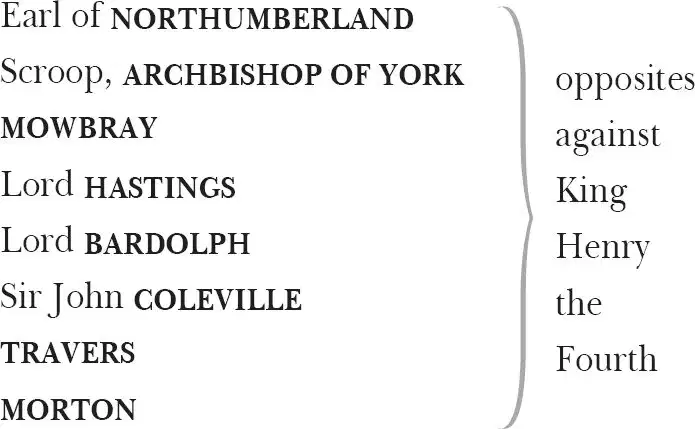
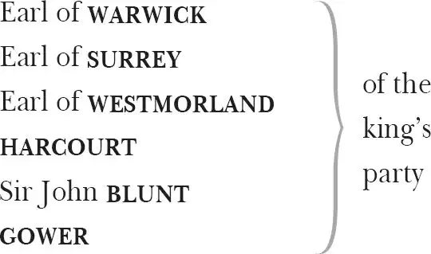
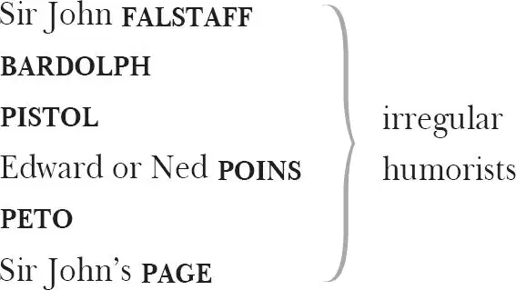
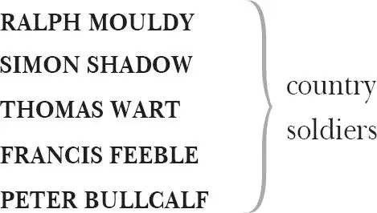

The Second Part of Henry the Fourth 1
Containing his Death and the Coronation of King Henry the Fifth
RUMOUR , the presenter
KING HENRY IV
PRINCE HENRY , later King Henry V, also known as Hal or Harry Monmouth
PRINCE JOHN of Lancaster, brother to the prince
Humphrey, Duke of GLOUCESTER , a younger brother
Thomas, Duke of CLARENCE , a younger brother

LADY NORTHUMBERLAND , Northumberland's wife
LADY PERCY , Northumberland's daughter-in-law, widow of Henry Percy known as Hotspur
Northumberland's PORTER

LORD CHIEF JUSTICE and his SERVANT

HOSTESS QUICKLY , landlady of a tavern
DOLL TEARSHEET
FRANCIS , a drawer
WILLIAM , a drawer
SECOND DRAWER
SHALLOW , a country Justice of the Peace
SILENCE , his kinsman, another Justice of the Peace
DAVY , servant to Shallow

FANG , a constable
SNARE , his yeoman or assistant
Page to the King, Messengers, Servants, Musicians,
Grooms, Beadles, Soldiers, Attendants
Speaker of the EPILOGUE
Induction 2
Enter Rumour 3
RUMOUR Open your ears, for which of you will stop
The vent of hearing 4 when loud Rumour speaks?
I, from the orient 5 to the drooping 6 west,
Making the wind my post-horse 7 , still 8 unfold 9
The acts 10 commencèd on this ball of earth.
Upon my tongue continual slanders ride,
The which in every language I pronounce,
Stuffing the ears of them with false reports.
I speak of peace, while covert enmity
Under the smile of safety wounds the world.
And who but Rumour, who but only I,
Make fearful musters and prepared defence 11
Whilst the big 12 year, swoll'n with some other griefs 13 ,
Is thought with child by the stern tyrant war,
And no such matter 14 ? Rumour is a pipe 15
Blown by surmises, jealousies 16 , conjectures
And of so easy and so plain a stop 17 18
That the blunt 19 monster with uncounted heads,
The still-discordant 20 wavering multitude,
Can play upon it. But what need I thus
My well-known body to anatomize 21
Among my household 22 ? Why is Rumour here?
I run before King Harry's victory 23 ,
Who in a bloody field 24 by Shrewsbury 25
Hath beaten down young Hotspur 26 and his troops,
Quenching the flame of bold rebellion
Even with the rebels' blood. But what mean I
To speak so true at first? My office 27 is
To noise abroad that Harry Monmouth 28 fell
Under the wrath of noble Hotspur's sword,
And that the king before the Douglas 29 ' rage
Stooped his anointed 30 head as low as death.
This have I rumoured through the peasant 31 towns
Between the royal field of Shrewsbury
And this worm-eaten hold 32 of ragged 33 stone,
Where Hotspur's father, old Northumberland,
Lies crafty-sick 34 . The posts 35 come tiring on 36 ,
And not a man of them brings other news
Than 37 they have learned of me. From Rumour's tongues
They bring smooth comforts false, worse than true wrongs 38 .
Exit
Act 1
Scene 1 39 ／ running scene 1
Enter Lord Bardolph and the Porter [separately ]
LORD BARDOLPH Who keeps 40 the gate here, ho?
Where is the earl?
PORTER What 41 shall I say you are?
LORD BARDOLPH Tell thou the earl
That the lord Bardolph doth attend 42 him here.
PORTER His lordship is 43 walked forth into the orchard 44 .
Please it 45 your honour, knock but at the gate,
And he himself will answer.
Enter Northumberland
LORD BARDOLPH Here comes the earl.
[Exit Porter ]
NORTHUMBERLAND What news, Lord Bardolph? Every minute now
Should be the father of some stratagem 46 ;
The times are wild 47 : contention, like a horse
Full of high feeding 48 , madly hath broke loose
And bears down 49 all before him.
LORD BARDOLPH Noble earl,
I bring you certain 50 news from Shrewsbury.
NORTHUMBERLAND Good, an 51 heaven will 52 !
LORD BARDOLPH As good as heart can wish:
The king is almost wounded to the death
And, in the fortune of my lord your son 53 ,
Prince Harry slain outright, and both the Blunts 54
Killed by the hand of Douglas, young Prince 55 John
And Westmorland 56 and Stafford 57 fled the field,
And Harry Monmouth's brawn 58 , the hulk 59 Sir John 60 ,
Is prisoner to your son. O, such a day,
So fought, so followed 61 and so fairly won,
Came not till now to dignify the times
Since Caesar's fortunes 62 !
NORTHUMBERLAND How is this derived 63 ?
Saw you the field? Came you from Shrewsbury?
LORD BARDOLPH I spake with one, my lord, that came from thence,
A gentleman well bred and of good name,
That freely rendered 64 me these news for true.
NORTHUMBERLAND Here comes my servant Travers 65 , whom I sent
On Tuesday last to listen after news.
Enter Travers
LORD BARDOLPH My lord, I over-rode 66 him on the way,
And he is furnished with no certainties
More than he haply 67 may retail 68 from me.
NORTHUMBERLAND Now, Travers, what good tidings comes from you?
TRAVERS My lord, Sir John Umfrevile 69 turned me back
With joyful tidings; and, being better horsed,
Outrode 70 me. After him came spurring hard
A gentleman, almost forspent 71 with speed,
That stopped by me to breathe 72 his bloodied 73 horse.
He asked the way to Chester 74 , and of him
I did demand what news from Shrewsbury:
He told me that rebellion had ill luck
And that young Harry Percy's spur was cold.
With that, he gave his able 75 horse the head 76 ,
And bending forwards struck his able 77 heels
Against the panting sides of his poor jade 78
Up to the rowel-head 79 , and starting so
He seemed in running to devour the way 80 ,
Staying 81 no longer question.
NORTHUMBERLAND Ha? Again:
Said he young Harry Percy's spur was cold?
Of Hotspur Coldspur? That rebellion
Had met ill luck?
LORD BARDOLPH My lord, I'll tell you what:
If my young lord your son have not the day 82 ,
Upon mine honour, for a silken point 83
I'll give my barony 84 . Never talk of it.
NORTHUMBERLAND Why should the gentleman that rode by Travers
Give then such instances 85 of loss?
LORD BARDOLPH Who, he?
He was some hilding 86 fellow that had stolen
The horse he rode on, and, upon my life,
Spoke at a venture 87 . Look, here comes more news.
Enter Morton 88
NORTHUMBERLAND Yea, this man's brow, like to a title-leaf 89 ,
Foretells the nature of a tragic volume:
So looks the strand 90 when the imperious flood 91
Hath left a witnessed usurpation 92 .—
Say, Morton, didst thou come from Shrewsbury?
MORTON I ran from Shrewsbury, my noble lord,
Where hateful death put on his ugliest mask
To fright our party.
NORTHUMBERLAND How doth my son and brother?
Thou trembl'st; and the whiteness in thy cheek
Is apter 93 than thy tongue to tell thy errand.
Even 94 such a man, so faint, so spiritless,
So dull, so dead in look, so woe-begone,
Drew 95 Priam 96 's curtain 97 in the dead of night,
And would have told him half his Troy was burned.
But Priam found the fire ere 98 he his tongue,
And I my Percy's death ere thou report'st it.
This thou wouldst say, 'Your son did thus and thus.
Your brother thus. So fought the noble Douglas',
Stopping 99 my greedy ear with their bold deeds.
But in the end, to stop mine ear indeed 100 ,
Thou hast a sigh to blow away this praise,
Ending with 'Brother, son, and all are dead.'
MORTON Douglas is living, and your brother, yet.
But, for my lord your son—
NORTHUMBERLAND Why, he is dead.
See what a ready tongue suspicion hath!
He that but fears the thing he would not know
Hath by instinct knowledge from others' eyes
That what he feared is chanced 101 . Yet speak, Morton —
Tell thou thy earl his divination 102 lies,
And I will take it as a sweet disgrace
And make thee rich for doing me such wrong 103 .
MORTON You are too great to be by me gainsaid 104 :
Your spirit 105 is too true, your fears too certain.
NORTHUMBERLAND Yet, for all this, say not that Percy's dead.
I see a strange confession in thine eye:
Thou shak'st thy head and hold'st 106 it fear or sin
To speak a truth. If he be slain, say so:
The tongue offends not that reports his death.
And he doth sin that doth belie 107 the dead,
Not he which says the dead is not alive.
Yet the first bringer of unwelcome news
Hath but a losing office 108 , and his tongue
Sounds ever after as a sullen 109 bell,
Rememb'red knolling 110 a departing friend.
LORD BARDOLPH I cannot think, my lord, your son is dead.
MORTON I am sorry I should force you to believe
That which I would 111 to heaven I had not seen.
But these mine eyes saw him in bloody state,
Rend'ring faint quittance 112 , wearied and out-breathed 113 ,
To Henry Monmouth, whose swift wrath beat down
The never-daunted 114 Percy to the earth,
From whence with life he never more sprung up.
In few 115 , his death, whose spirit lent a fire
Even to the dullest peasant in his camp,
Being bruited 116 once, took fire and heat away
From the best tempered 117 courage in his troops,
For from his mettle 118 was his party steeled 119 ;
Which once in him abated 120 , all the rest
Turned on themselves, like dull and heavy lead.
And as the thing that's heavy in itself,
Upon enforcement 121 flies with greatest speed,
So did our men, heavy in 122 Hotspur's loss,
Lend to this weight such lightness with their fear 123
That arrows fled not swifter toward their aim
Than did our soldiers, aiming at their safety,
Fly from the field. Then was the noble Worcester 124
Too soon ta'en prisoner. And that furious Scot,
The bloody Douglas, whose well-labouring 125 sword
Had three times slain th'appearance of the king 126 ,
'Gan vail his stomach 127 and did grace 128 the shame
Of those that turned their backs 129 , and in his flight,
Stumbling in fear, was took. The sum of all
Is that the king hath won, and hath sent out
A speedy power 130 to encounter 131 you, my lord,
Under the conduct of young Lancaster 132
And Westmorland. This is the news at 133 full.
NORTHUMBERLAND For this I shall have time enough to mourn.
In poison there is physic 134 , and this news,
Having been well 135 , that would have made me sick,
Being sick, have in some measure made me well.
And as the wretch, whose fever-weakened joints,
Like strengthless hinges, buckle under life,
Impatient of his fit 136 , breaks like a fire
Out of his keeper 137 's arms, even so my limbs,
Weakened 138 with grief, being now enraged with grief,
Are thrice themselves. Hence, therefore, thou nice 139 crutch!
Throws down his crutch
A scaly gauntlet 140 now with joints of steel
Must glove this hand. And hence, thou sickly coif 141 !
Throws down his nightcap
Thou art a guard too wanton 142 for the head
Which princes, fleshed 143 with conquest, aim to hit.
Now bind my brows with iron, and approach
The ragged'st 144 hour that time and spite dare bring
To frown upon th'enraged Northumberland!
Let heaven kiss earth! Now let not Nature's hand
Keep the wild flood confined! Let order die!
And let the world no longer be a stage
To feed contention 145 in a ling'ring act 146 ,
But let one spirit of the first-born Cain 147
Reign in all bosoms, that, each heart being set
On bloody courses, the rude 148 scene may end,
And darkness be the burier of the dead!
LORD BARDOLPH Sweet earl, divorce not wisdom from your honour.
MORTON The lives of all your loving complices 149
Lean on your health, the which, if you give o'er 150
To stormy passion 151 , must perforce 152 decay.
You cast th'event 153 of war, my noble lord,
And summed 154 the account of chance, before you said
'Let us make head 155 .' It was your presurmise 156
That in the dole 157 of blows, your son might drop 158 .
You knew he walked o'er perils on an edge 159 ,
More likely to fall in than to get o'er:
You were advised 160 his flesh was capable
Of 161 wounds and scars and that his forward 162 spirit
Would lift him where most trade of 163 danger ranged 164 :
Yet did you say 'Go forth', and none of this,
Though strongly apprehended 165 , could restrain
The stiff-borne 166 action. What hath then befallen,
Or what hath this bold enterprise brought forth,
More than that being which was like 167 to be?
LORD BARDOLPH We all that are engagèd to 168 this loss
Knew that we ventured on such dangerous seas
That if we wrought our life was ten to one 169 .
And yet we ventured, for the gain proposed
Choked the respect 170 of likely peril feared.
And since we are o'erset 171 , venture again.
Come, we will all put forth 172 , body and goods.
MORTON 'Tis more than time 173 . And, my most noble lord,
I hear for certain, and do speak the truth:
The gentle 174 Archbishop of York is up 175
With well-appointed powers 176 . He is a man
Who with a double surety 177 binds his followers.
My lord your son had only but the corpse 178 ,
But 179 shadows and the shows of men, to fight,
For that same word, rebellion, did divide
The action of their bodies from their souls,
And they did fight with queasiness 180 , constrained,
As men drink potions 181 , that their weapons only
Seemed on our side. But, for their spirits and souls,
This word, rebellion, it had froze them up,
As fish are in a pond. But now the bishop
Turns insurrection to religion 182 .
Supposed 183 sincere and holy in his thoughts,
He's followed both with body and with mind,
And doth enlarge his rising 184 with the blood
Of fair King Richard, scraped from Pomfret stones 185 :
Derives from heaven his quarrel and his cause:
Tells them he doth bestride 186 a bleeding land,
Gasping for life under great Bullingbrook 187 :
And more and less 188 do flock to follow him.
NORTHUMBERLAND I knew of this before. But, to speak truth,
This present grief had wiped it from my mind.
Go in with me, and counsel every man
The aptest 189 way for safety and revenge.
Get posts 190 and letters, and make friends with speed.
Never so few, nor never yet more need.
Exeunt
Scene 2 191 ／ running scene 2
Enter Falstaff and Page
FALSTAFF Sirrah 192 , you giant 193 , what says the doctor to my water 194 ?
PAGE He said, sir, the water itself was a good healthy water, but, for the party that owed 195 it, he might have more diseases than he knew for 196 .
FALSTAFF Men of all sorts take a pride to gird at 197 me. The brain of this foolish-compounded 198 clay, man, is not able to invent anything that tends to laughter, more than I invent or is invented on me. I am not only witty in myself, but the cause that wit is in other men. I do here walk before thee like a sow that hath o'erwhelmed 199 all her litter but one. If the prince put thee into my service for any other reason than to set me off 200 , why then I have no judgement. Thou whoreson 201 mandrake 202 , thou art fitter to be worn in my cap than to wait at my heels. I was never manned with 203 an agate 204 till now: but I will set you neither in gold nor silver, but in vile apparel, and send you back again to your master, for a jewel 205 — the juvenal 206 , the prince your master, whose chin is not yet fledged 207 . I will sooner have a beard grow in the palm of my hand than he shall get one on his cheek, yet he will not stick 208 to say his face is a face-royal 209 . Heaven may finish it when he will, it is not a hair amiss 210 yet. He may keep it 211 still at a face-royal, for a barber shall never earn sixpence out of it; and yet he will be crowing as if he had writ 212 man ever since his father was a bachelor. He may keep his own grace 213 , but he is almost out of mine, I can assure him. What said Master Dombledon 214 about the satin for my short cloak and slops 215 ?
PAGE He said, sir, you should procure him better assurance 216 than Bardolph 217 : he would not take his bond and yours. He liked not the security.
FALSTAFF Let him be damned, like the glutton! May his tongue be hotter 218 ! A whoreson Achitophel 219 ! A rascally yea-forsooth 220 knave, to bear a gentleman in hand 221 , and then stand 222 upon security! The whoreson smooth-pates 223 do now wear nothing but high 224 shoes, and bunches of keys at their girdles 225 . And if a man is through with them in honest taking up 226 , then they must stand upon security. I had as lief 227 they would put ratsbane 228 in my mouth as offer to stop it with security. I looked 229 he should have sent me two and twenty yards of satin, as I am true knight, and he sends me security. Well, he may sleep in security, for he hath the horn of abundance 230 , and the lightness 231 of his wife shines through it, and yet cannot he see, though he have his own lanthorn 232 to light him. Where's Bardolph?
PAGE He's gone into Smithfield 233 to buy your worship a horse.
FALSTAFF I bought him in Paul's 234 , and he'll buy me a horse in Smithfield. If I could get me a wife in the stews 235 , I were manned, horsed, and wived.
Enter Chief Justice and Servant
PAGE Sir, here comes the nobleman that committed 236 the prince for striking him about Bardolph 237 .
FALSTAFF Wait, close 238 . I will not see him 239 .
Tries to sneak away
LORD CHIEF JUSTICE What's he that goes there?
SERVANT Falstaff, an't 240 please your lordship.
LORD CHIEF JUSTICE He that was in question for 241 the robbery?
SERVANT He, my lord. But he hath since done good service 242 at Shrewsbury, and, as I hear, is now going with some charge 243 to the lord John of Lancaster.
LORD CHIEF JUSTICE What, to York? Call him back again.
SERVANT Sir John Falstaff!
FALSTAFF Boy, tell him I am deaf.
PAGE You must speak louder: my master is deaf.
LORD CHIEF JUSTICE I am sure he is, to the hearing of anything good. Go, pluck him by the elbow, I must speak with him.
SERVANT Sir John!
FALSTAFF What? A young knave, and beg? Is there not wars 244 ? Is there not employment? Doth not the king lack subjects? Do not the rebels want 245 soldiers? Though it 246 be a shame to be on any side but one, it is worse shame to beg than to be on the worst side, were it 247 worse than the name of rebellion can tell how to make it.
SERVANT You mistake me, sir.
FALSTAFF Why, sir, did I say you were an honest man? Setting my knighthood and my soldiership aside 248 , I had lied in my throat 249 , if I had said so.
SERVANT I pray you, sir, then set your knighthood and your soldiership aside, and give me leave to tell you, you lie in your throat if you say I am any other than an honest man.
FALSTAFF I give thee leave to tell me so? I lay aside that which grows to 250 me? If thou gett'st any leave of me, hang me: if thou tak'st leave, thou wert better be hanged. You hunt counter 251 , hence! Avaunt! 252
SERVANT Sir, my lord would speak with you.
LORD CHIEF JUSTICE Sir John Falstaff, a word with you.
FALSTAFF My good lord! Give your lordship good time of the day. I am glad to see your lordship abroad 253 . I heard say your lordship was sick. I hope your lordship goes abroad by advice 254 . Your lordship, though not clean past your youth, hath yet some smack 255 of age in you, some relish 256 of the saltness 257 of time, and I most humbly beseech your lordship to have a reverend 258 care of your health.
LORD CHIEF JUSTICE Sir John, I sent for you before your expedition to Shrewsbury.
FALSTAFF If it please your lordship, I hear his majesty is returned with some discomfort from Wales.
LORD CHIEF JUSTICE I talk not of his majesty: you would not come when I sent for you.
FALSTAFF And I hear, moreover, his highness is fallen into this same whoreson apoplexy 259 .
LORD CHIEF JUSTICE Well, heaven mend him! I pray, let me speak with you.
FALSTAFF This apoplexy is, as I take it, a kind of lethargy, a sleeping of the blood, a whoreson tingling.
LORD CHIEF JUSTICE What 260 tell you me of it? Be it as it is.
FALSTAFF It hath it original 261 from much grief, from study and perturbation of the brain. I have read the cause of his effects in Galen 262 : it is a kind of deafness.
LORD CHIEF JUSTICE I think you are fallen into the disease, for you hear not what I say to you.
FALSTAFF Very well, my lord, very well. Rather, an't please you, it is the disease of not listening, the malady of not marking 263 , that I am troubled withal 264 .
LORD CHIEF JUSTICE To punish you by the heels 265 would amend the attention of your ears, and I care not if I be your physician.
FALSTAFF I am as poor as Job 266 , my lord, but not so patient: your lordship may minister the potion of imprisonment to me in respect of poverty 267 , but how 268 I should be your patient to follow your prescriptions, the wise may make some dram 269 of a scruple 270 , or indeed a scruple itself 271 .
LORD CHIEF JUSTICE I sent for you, when there were matters against you for your life 272 , to come speak with me.
FALSTAFF As I was then advised by my learned counsel in the laws of this land-service 273 , I did not come.
LORD CHIEF JUSTICE Well, the truth is, Sir John, you live in great infamy.
FALSTAFF He that buckles him in my belt cannot live in less 274 .
LORD CHIEF JUSTICE Your means 275 is very slender, and your waste 276 great.
FALSTAFF I would it were otherwise: I would my means were greater, and my waist slenderer.
LORD CHIEF JUSTICE You have misled the youthful prince.
FALSTAFF The young prince hath misled me. I am the fellow with the great belly, and he my dog 277 .
LORD CHIEF JUSTICE Well, I am loath to gall 278 a new-healed wound: your day's service at Shrewsbury hath a little gilded over your night's exploit on Gad's Hill 279 . You may thank the unquiet 280 time for your quiet o'er-posting that action 281 .
FALSTAFF My lord?
LORD CHIEF JUSTICE But since all is well, keep it so: wake not a sleeping wolf.
FALSTAFF To wake a wolf is as bad as to smell a fox 282 .
LORD CHIEF JUSTICE What? You are as a candle, the better 283 part burnt out.
FALSTAFF A wassail candle 284 , my lord, all tallow 285 : if I did say of wax 286 , my growth would approve 287 the truth.
LORD CHIEF JUSTICE There is not a white hair on your face but should have his 288 effect of gravity.
FALSTAFF His effect of gravy 289 , gravy, gravy.
LORD CHIEF JUSTICE You follow the young prince up and down, like his evil angel 290 .
FALSTAFF Not so, my lord, your ill angel is light 291 : but I hope he that looks upon me will take me without weighing 292 . And yet, in some respects, I grant, I cannot go 293 : I cannot tell 294 . Virtue is of so little regard in these costermongers 295 that true valour is turned bear-herd 296 : pregnancy 297 is made a tapster 298 , and hath his quick wit wasted in giving reckonings 299 : all the other gifts appertinent 300 to man — as the malice of this age shapes them — are not worth a gooseberry. You that are old consider not the capacities of us that are young. You measure the heat of our livers 301 with the bitterness of your galls 302 . And we that are in the vaward 303 of our youth, I must confess, are wags 304 too.
LORD CHIEF JUSTICE Do you set down your name in the scroll of youth, that are written down old with all the characters 305 of age? Have you not a moist 306 eye? A dry hand? A yellow cheek? A white beard? A decreasing leg? An increasing belly? Is not your voice broken 307 ? Your wind short? Your wit single 308 ? And every part about you blasted 309 with antiquity? And will you call yourself young? Fie 310 , fie, fie, Sir John.
FALSTAFF My lord, I was born with a white head and something a round belly. For my voice, I have lost it with halloing 311 and singing of anthems. To approve 312 my youth further, I will not. The truth is, I am only old in judgement and understanding, and he that will caper with 313 me for a thousand marks 314 , let him lend me the money, and have at him 315 ! For 316 the box of th'ear that the prince gave you, he gave it like a rude 317 prince, and you took it like a sensible 318 lord. I have checked 319 him for it, and the young lion repents; marry 320 , not in ashes and sackcloth 321 , but in new silk and old sack 322 .
LORD CHIEF JUSTICE Well, heaven send the prince a better companion!
FALSTAFF Heaven send the companion a better prince! I cannot rid my hands of him.
LORD CHIEF JUSTICE Well, the king hath severed you and Prince Harry. I hear you are going with Lord John of Lancaster against the archbishop and the Earl of Northumberland.
FALSTAFF Yes, I thank your pretty sweet wit for it 323 . But look you 324 pray — all you that kiss my lady Peace at home — that our armies join not in a hot day, for if I take but two shirts out with me, and I mean not to sweat extraordinarily: if it be a hot day, if I brandish anything but my bottle, would I might never spit white 325 again. There is not a dangerous action 326 can peep out his head but I am thrust upon it. Well, I cannot last ever.
LORD CHIEF JUSTICE Well, be honest 327 , be honest, and heaven bless your expedition.
FALSTAFF Will your lordship lend me a thousand pound to furnish me forth 328 ?
LORD CHIEF JUSTICE Not a penny, not a penny. You are too impatient to bear crosses 329 . Fare you well. Commend me to my cousin Westmorland.
[Exeunt Lord Chief Justice and Servant ]
FALSTAFF If I do, fillip 330 me with a three-man beetle 331 . A man can no more separate age and covetousness than he can part young limbs and lechery: but the gout galls the one, and the pox 332 pinches 333 the other; and so both the degrees 334 prevent my curses.— Boy!
PAGE Sir?
FALSTAFF What money is in my purse?
PAGE Seven groats 335 and two-pence.
FALSTAFF I can get no remedy against this consumption 336 of the purse. Borrowing only lingers and lingers it out, but the disease is incurable. Go bear this letter to my lord of Lancaster, this to the prince, this to the Earl of Westmorland, and this to old Mistress Ursula 337 , whom I have weekly sworn to marry since I perceived the first white hair on my chin. About it: you know where to find me.
Gives letters
[Exit Page ]
A pox of 338 this gout, or a gout of this pox 339 ! For the one or th'other plays the rogue with my great toe. It is no matter if I do halt 340 . I have the wars for my colour 341 , and my pension shall seem the more reasonable. A good wit will make use of anything: I will turn diseases to commodity 342 .
Exit
Scene 3 343 ／ running scene 3
Enter Archbishop, Hastings, Mowbray and Lord Bardolph
ARCHBISHOP OF YORK Thus have you heard our causes 344 and know our means 345 ,
And, my most noble friends, I pray you all
Speak plainly your opinions of our hopes.
And first, lord marshal 346 , what say you to it?
MOWBRAY I well allow 347 the occasion 348 of our arms 349 ,
But gladly would be better satisfied
How in 350 our means we should advance ourselves 351
To look with forehead bold and big enough
Upon the power and puissance 352 of the king.
HASTINGS Our present musters grow upon the file 353
To five and twenty thousand men of choice 354 ,
And our supplies 355 live largely in the hope
Of 356 great Northumberland, whose bosom burns
With an incensèd fire of injuries.
LORD BARDOLPH The question then, Lord Hastings, standeth thus:
Whether our present five and twenty thousand
May hold up head 357 without Northumberland?
HASTINGS With him, we may.
LORD BARDOLPH Ay, marry, there's the point:
But if without him we be thought too feeble,
My judgement is, we should not step too far
Till we had his assistance by the hand 358 .
For in a theme 359 so bloody-faced 360 as this,
Conjecture, expectation and surmise
Of aids incertain 361 should not be admitted 362 .
ARCHBISHOP OF YORK 'Tis very true, Lord Bardolph, for indeed
It was young Hotspur's case 363 at Shrewsbury.
LORD BARDOLPH It was, my lord, who lined 364 himself with hope,
Eating the air 365 on promise of supply,
Flatt'ring himself with project 366 of a power 367
Much smaller 368 than the smallest of his thoughts,
And so, with great imagination
Proper to madmen, led his powers to death
And winking 369 leaped into destruction.
HASTINGS But, by your leave 370 , it never yet did hurt
To lay down likelihoods and forms of hope.
LORD BARDOLPH Yes 371 , if this present quality 372 of war —
Indeed the instant 373 action, a cause on foot 374 —
Lives so in hope as in an early spring
We see th'appearing buds, which to prove fruit,
Hope gives not so much warrant 375 as despair
That frosts will bite them 376 . When we mean to build,
We first survey the plot, then draw the model,
And when we see the figure 377 of the house,
Then must we rate 378 the cost of the erection,
Which if we find outweighs ability 379 ,
What do we then but draw anew the model
In fewer offices 380 ? Or at least 381 desist
To build at all? Much more, in this great work —
Which is almost to pluck a kingdom down
And set another up — should we survey
The plot of situation and the model,
Consent 382 upon a sure foundation,
Question surveyors, know our own estate 383 ,
How able such a work to undergo 384 ,
To weigh against his opposite 385 . Or else
We fortify 386 in paper and in figures 387 ,
Using the names of men instead of men,
Like one that draws the model of a house
Beyond his power to build it; who, half through,
Gives o'er 388 and leaves his part-created cost 389
A naked subject 390 to the weeping clouds
And waste for churlish 391 winter's tyranny.
HASTINGS Grant that our hopes, yet likely of fair birth,
Should be still-born, and that we now possessed
The utmost man of expectation 392 ,
I think we are a body strong enough,
Even as we are, to equal with the king.
LORD BARDOLPH What, is the king but five and twenty thousand?
HASTINGS To us no more, nay, not so much, Lord Bardolph.
For his divisions — as the times do brawl 393 —
Are in three heads: one power against the French,
And one against Glendower 394 , perforce 395 a third
Must take up us. So is the unfirm 396 king
In three divided, and his coffers 397 sound
With hollow poverty and emptiness.
ARCHBISHOP OF YORK That he should draw his several strengths together
And come against us in full puissance
Need not be dreaded.
HASTINGS If he should do so,
He leaves his back unarmed, the French and Welsh
Baying 398 him at the heels: never fear that.
LORD BARDOLPH Who is it like 399 should lead his forces hither?
HASTINGS The Duke of Lancaster and Westmorland:
Against the Welsh, himself and Harry Monmouth.
But who is substituted 400 gainst the French,
I have no certain notice 401 .
ARCHBISHOP OF YORK Let us on,
And publish the occasion 402 of our arms.
The commonwealth is sick of their own choice,
Their over-greedy love hath surfeited 403 :
An habitation 404 giddy and unsure
Hath he that buildeth on the vulgar heart 405 .
O thou fond many 406 , with what loud applause
Didst thou beat heaven with blessing Bullingbrook,
Before he was what thou wouldst have him be!
And being now trimmed 407 in thine own desires,
Thou 408 , beastly feeder, art so full of him
That thou provok'st thyself to cast 409 him up.
So 410 , so, thou common dog, didst thou disgorge 411
Thy glutton bosom of the royal Richard,
And now thou wouldst eat thy dead vomit up 412 ,
And howl'st to find it. What trust is in these times?
They that, when Richard lived, would have him die,
Are now become enamoured on his grave.
Thou, that threw'st dust upon his goodly head
When through proud London he came sighing on
After th'admirèd heels of Bullingbrook,
Criest now 'O earth, yield us that king again,
And take thou this.' O, thoughts of men accursed!
Past and to come seems best; things present worst.
MOWBRAY Shall we go draw 413 our numbers and set on?
HASTINGS We are time's subjects, and time bids be gone.
[Exeunt ]
Act 2
Scene 1 414 ／ running scene 4
Enter Hostess [Quickly ], with two officers: Fang and Snare
HOSTESS QUICKLY Master 415 Fang, have you entered the action 416 ?
FANG It is entered.
HOSTESS QUICKLY Where's your yeoman 417 ? Is it a lusty 418 yeoman? Will he stand to it 419 ?
FANG Sirrah— Where's Snare?
Looks around
HOSTESS QUICKLY Ay, ay, good Master Snare.
SNARE Here, here.
Comes forward
FANG Snare, we must arrest Sir John Falstaff.
HOSTESS QUICKLY Ay, good Master Snare, I have entered 420 him and all.
SNARE It may chance cost some of us our lives: he will stab.
HOSTESS QUICKLY Alas the day. Take heed of him: he stabbed 421 me in mine own house 422 , and that most beastly. He cares not what mischief he doth, if his weapon 423 be out. He will foin 424 like any devil, he will spare neither man, woman nor child.
FANG If I can close 425 with him, I care not for his thrust.
HOSTESS QUICKLY No, nor I neither: I'll be at your elbow.
FANG If I but fist 426 him once, if he come 427 but within my vice 428 —
HOSTESS QUICKLY I am undone 429 with his going 430 . I warrant 431 he is an infinitive 432 thing 433 upon my score 434 . Good Master Fang, hold him sure 435 : good Master Snare, let him not scape 436 . He comes continuantly 437 to Pie-corner 438 — saving your manhoods 439 — to buy a saddle 440 , and he is indited 441 442 to dinner to the Lubber's-head in Lombard Street 443 , to Master Smooth's the silkman. I pra'ye, since my exion 444 is entered and my case 445 so openly known to the world, let him be brought in to his answer. A hundred mark 446 is a long one 447 for a poor lone woman to bear, and I have borne, and borne, and borne, and have been fubbed 448 off, and fubbed off, from this day to that day, that it is a shame to be thought on. There is no honesty in such dealing 449 , unless a woman should be made an ass and a beast, to bear every knave's wrong 450 .
Enter Falstaff with his Page] and Bardolph
Yonder he comes, and that arrant 451 malmsey-nose 452 Bardolph, with him. Do your offices 453 , do your offices: Master Fang and Master Snare, do me 454 , do me, do me your offices.
FALSTAFF How now? Whose mare 455 's dead? 456 What's the matter?
FANG Sir John, I arrest you at the suit of Mistress Quickly.
FALSTAFF Away, varlets 457 ! Draw, Bardolph. Cut me off the villain's head. Throw the quean 458 in the channel 459 .
They draw
HOSTESS QUICKLY Throw me in the channel? I'll throw thee there. Wilt thou? Wilt thou? Thou bastardly rogue! Murder, murder! O, thou honeysuckle 460 villain, wilt thou kill God's officers and the king's? O, thou honey-seed 461 rogue, thou art a honey-seed, a man-queller 462 , and a woman-queller 463 .
FALSTAFF Keep them off, Bardolph.
FANG A rescue 464 , a rescue!
HOSTESS QUICKLY Good people, bring a rescue.— Thou wilt not? Thou wilt not? Do, do, thou rogue! Do, thou hemp-seed 465 !
To Page
PAGE Away, you scullion 466 , you rampallion 467 , you fustilarian 468 ! I'll tuck 469 your catastrophe 470 .
To Fang
Enter Chief Justice
LORD CHIEF JUSTICE What's the matter? Keep the peace here, ho!
HOSTESS QUICKLY Good my 471 lord, be good to me. I beseech you stand to 472 me.
LORD CHIEF JUSTICE How now, Sir John? What are you brawling here? Doth this become 473 your place, your time and business? You should have been well on your way to York. Stand from him, fellow; wherefore 474 hang'st upon him?
HOSTESS QUICKLY O my most worshipful lord, an't please your grace, I am a poor widow of Eastcheap 475 , and he is arrested at my suit.
LORD CHIEF JUSTICE For what sum?
HOSTESS QUICKLY It is more than for some, my lord, it is for all, all I have. He hath eaten me out of house and home; he hath put all my substance into that fat belly of his. But I will have some of it out again, or I will ride thee o'nights like the mare 476 .
FALSTAFF I think I am as like to ride the mare 477 , if I have any vantage of ground 478 to get up 479 .
LORD CHIEF JUSTICE How comes this, Sir John? Fie, what a man of good temper 480 would endure this tempest of exclamation? Are you not ashamed to enforce a poor widow to so rough a course to come by her own 481 ?
FALSTAFF What is the gross 482 sum that I owe thee?
HOSTESS QUICKLY Marry 483 , if thou wert an honest man, thyself and the money too. Thou didst swear to me upon a parcel-gilt 484 goblet, sitting in my Dolphin-chamber 485 at the round table, by a sea-coal 486 fire, on Wednesday in Whitsun week 487 , when the prince broke 488 thy head for lik'ning him to a singing-man of Windsor 489 ; thou didst swear to me then, as I was washing thy wound, to marry me and make me my lady thy wife. Canst thou deny it? Did not goodwife 490 Keech 491 , the butcher's wife, come in then and call me gossip 492 Quickly, coming in to borrow a mess 493 of vinegar, telling us she had a good dish 494 of prawns, whereby 495 thou didst desire to eat some, whereby I told thee they were ill for a green 496 wound? And didst not thou, when she was gone downstairs, desire me to be no more familiar with such poor people, saying that ere long they should call me madam 497 ? And didst thou not kiss me and bid me fetch thee thirty shillings? I put thee now to thy book-oath 498 : deny it, if thou canst.
FALSTAFF My lord, this is a poor mad soul, and she says up and down the town that her eldest son is like you 499 . She hath been in good case 500 , and the truth is, poverty hath distracted her 501 . But for these foolish officers, I beseech you I may have redress against them.
LORD CHIEF JUSTICE Sir John, Sir John, I am well acquainted with your manner of wrenching the true cause the false way. It is not a confident brow, nor the throng of words that come with such more than impudent sauciness from you, can thrust me from a level 502 consideration. I know you ha' practised upon 503 the easy-yielding 504 spirit of this woman.
HOSTESS QUICKLY Yea, in troth 505 , my lord.
LORD CHIEF JUSTICE Prithee, peace.— Pay her the debt 506 you owe her, and unpay 507 the villainy you have done her: the one you may do with sterling money, and the other with current 508 repentance.
FALSTAFF My lord, I will not undergo this sneap 509 without reply. You call honourable boldness 'impudent sauciness'. If a man will curtsy 510 and say nothing, he is virtuous. No, my lord — your humble duty remembered 511 — I will not be your suitor 512 . I say to you, I desire deliverance from these officers, being upon hasty employment in the king's affairs.
LORD CHIEF JUSTICE You speak as having power 513 to do wrong. But answer in the effect of your reputation 514 , and satisfy 515 the poor woman.
FALSTAFF Come hither, hostess.
Takes Quickly aside
Enter Master Gower
LORD CHIEF JUSTICE Now, Master Gower, what news?
GOWER The king, my lord, and Henry Prince of Wales
Are near at hand: the rest the paper tells.
Gives a paper
FALSTAFF As I am a gentleman.
HOSTESS QUICKLY Nay, you said so before.
FALSTAFF As I am a gentleman. Come, no more words of it.
HOSTESS QUICKLY By this heavenly ground 516 I tread on, I must be fain 517 to pawn both my plate 518 and the tapestry of my dining chambers.
FALSTAFF Glasses, glasses is the only drinking 519 . And for thy walls, a pretty slight drollery 520 , or the story of the Prodigal 521 , or the German hunting 522 in water-work 523 is worth a thousand of these bed-hangings and these fly-bitten tapestries. Let it be ten pound, if thou canst. Come, if it were not for thy humours 524 , there is not a better wench in England. Go, wash thy face, and draw thy action 525 . Come, thou must not be in this humour with me. Come, I know thou wast set on 526 to this.
HOSTESS QUICKLY Prithee, Sir John, let it be but twenty nobles 527 . I 528 loath to pawn my plate, in good earnest, la 529 .
FALSTAFF Let it alone. I'll make other shift 530 . You'll be a fool still 531 .
HOSTESS QUICKLY Well, you shall have it, although I pawn my gown. I hope you'll come to supper. You'll pay me all together?
FALSTAFF Will I live? 532 — Go, with her, with her — hook on, hook on 533 .
To Bardolph
HOSTESS QUICKLY Will you have Doll 534 Tearsheet 535 meet you at supper?
FALSTAFF No more words. Let's have 536 her.
[Exeunt Quickly, Bardolph, Fang and others ]
LORD CHIEF JUSTICE I have heard bitter news.
FALSTAFF What's the news, my good lord?
LORD CHIEF JUSTICE Where lay the king last night?
GOWER At Basingstoke 537 , my lord.
FALSTAFF I hope, my lord, all's well. What is the news, my lord?
LORD CHIEF JUSTICE Come all his forces back?
GOWER No. Fifteen hundred foot, five hundred horse,
Are marched up to my lord of Lancaster,
Against Northumberland and the Archbishop.
FALSTAFF Comes the king back from Wales, my noble lord?
LORD CHIEF JUSTICE You shall have letters of me presently 538 . Come, go along with me, good Master Gower.
FALSTAFF My lord!
LORD CHIEF JUSTICE What's the matter?
FALSTAFF Master Gower, shall I entreat you with me to dinner?
GOWER I must wait upon my good lord here. I thank you, good Sir John.
LORD CHIEF JUSTICE Sir John, you loiter here too long, being 539 you are to take soldiers up 540 in counties as you go.
FALSTAFF Will you sup with me, Master Gower?
LORD CHIEF JUSTICE What foolish master taught you these manners, Sir John?
FALSTAFF Master Gower, if they become me not, he was a fool that taught them me. This is the right fencing grace 541 , my lord: tap for tap 542 , and so part fair 543 .
LORD CHIEF JUSTICE Now the lord lighten thee 544 ! Thou art a great 545 fool.
Exeunt
Scene 2 546 ／ running scene 5
Enter Prince Henry and Poins
PRINCE HENRY Trust me, I am exceeding weary.
POINS Is it come to that? I had thought weariness durst not have attached 547 one of so high blood.
PRINCE HENRY It doth me, though it discolours the complexion of my greatness 548 to acknowledge it. Doth it not show vilely 549 in me to desire small beer 550 ?
POINS Why, a prince should not be so loosely studied 551 as to remember so weak a composition 552 .
PRINCE HENRY Belike 553 then my appetite was not princely got 554 , for, in troth, I do now remember the poor creature, small beer. But indeed these humble considerations make me out of love with my greatness. What a disgrace is it to me to remember thy name 555 ? Or to know thy face tomorrow? Or to take note how many pair of silk stockings thou hast — videlicet 556 these — and those that were thy peach-coloured ones—or to bear 557 the inventory of thy shirts, as one for superfluity 558 , and one other for use? But that the tennis-court-keeper knows better than I, for it is a low ebb of linen with thee when thou kept'st not racket 559 there, as thou hast not done a great while, because the rest of thy Low Countries 560 have made a shift to eat up thy Holland 561 .
POINS How ill it follows, after you have laboured so hard, you should talk so idly! Tell me, how many good young princes would do so, their fathers lying so sick as yours is?
PRINCE HENRY Shall I tell thee one thing, Poins?
POINS Yes, and let it be an excellent good thing.
PRINCE HENRY It shall serve among wits of no higher breeding than thine.
POINS Go to 562 . I stand the push 563 of your one thing that you'll tell.
PRINCE HENRY Why, I tell thee it is not meet 564 that I should be sad now my father is sick — albeit 565 I could tell to thee, as to one it pleases me, for fault 566 of a better, to call my friend, I could be sad, and sad indeed too.
POINS Very hardly 567 upon such a subject.
PRINCE HENRY Thou think'st me as far in the devil's book as thou and Falstaff for obduracy and persistency. Let the end try 568 the man. But I tell thee, my heart bleeds inwardly that my father is so sick: and keeping such vile company as thou art hath in reason taken from me all ostentation 569 of sorrow.
POINS The reason?
PRINCE HENRY What wouldst thou think of me, if I should weep?
POINS I would think thee a most princely hypocrite.
PRINCE HENRY It would be every man's thought, and thou art a blessed fellow to think as every man thinks: never a 570 man's thought in the world keeps the roadway 571 better than thine: every man would think me an hypocrite indeed. And what accites 572 your most worshipful thought to think so?
POINS Why, because you have been so lewd 573 and so much engraffed 574 to Falstaff.
PRINCE HENRY And to thee.
POINS Nay, I am well spoken of. I can hear it with mine own ears: the worst that they can say of me is that I am a second brother 575 and that I am a proper fellow of my hands 576 . And those two things, I confess, I cannot help. Look, look, here comes Bardolph.
PRINCE HENRY And the boy that I gave Falstaff. He had him from me Christian, and see if the fat villain have not transformed him ape 577 .
Enter Bardolph [and Falstaff's Page ]
BARDOLPH Save 578 your grace 579 .
PRINCE HENRY And yours, most noble Bardolph.
POINS Come, you pernicious ass, you bashful fool, must you be blushing 580 ? Wherefore blush you now? What a maidenly man-at-arms are you become! Is it such a matter to get a pottle-pot's maidenhead 581 582 ?
To Bardolph
PAGE He called me even now, my lord, through a red lattice 583 , and I could discern no part of his face from the window. At last I spied his eyes, and methought he had made two holes in the ale-wife's new petticoat 584 and peeped through.
PRINCE HENRY Hath not the boy profited 585 ?
To Poins
BARDOLPH Away, you whoreson upright rabbit, away!
PAGE Away, you rascally Althaea's dream 586 , away!
PRINCE HENRY Instruct us, boy. What dream, boy?
PAGE Marry, my lord, Althaea dreamed she was delivered of a fire-brand 587 , and therefore I call him her dream.
PRINCE HENRY A crown's worth of good interpretation.— There it is, boy.
Gives Page money
POINS O, that this good blossom 588 could be kept from cankers 589 ! — Well, there is sixpence 590 to preserve thee.
Gives Page money
BARDOLPH If you do not make him be hanged among you 591 , the gallows shall be wronged.
PRINCE HENRY And how doth thy master, Bardolph?
BARDOLPH Well, my good lord. He heard of your grace's coming to town. There's a letter for you.
Gives a letter
POINS Delivered with good respect 592 . And how doth the martlemas 593 , your master?
BARDOLPH In bodily health, sir.
POINS Marry, the immortal part needs a physician, but that moves not him: though that be sick, it dies not.
PRINCE HENRY I do allow this wen 594 to be as familiar with me as my dog, and he holds his place 595 , for look you he writes.
POINS
(Letter)
Reads
'John Falstaff, knight.' — Every man must know that, as oft as he hath occasion to name himself 596 , even like 597 those that are kin to the king, for they never prick their finger but they say, 'There is some of the king's blood spilt.' 'How comes that?' says he that takes upon him not to conceive 598 . The answer is as ready as a borrower's cap 599 , 'I am the king's poor cousin, sir.'
PRINCE HENRY Nay, they will be 600 kin to us, but they will fetch it from Japhet 601 . But to the letter: 'Sir John Falstaff, knight, to the son of the king, nearest his father, Harry Prince of Wales, greeting.'
Reads
POINS Why, this is a certificate 602 .
PRINCE HENRY Peace! 'I will imitate the honourable Romans in brevity.'
Reads
POINS Sure he means brevity in breath, short-winded. 'I commend me to thee 603 , I commend thee, and I leave thee. Be not too familiar with Poins, for he misuses thy favours so much, that he swears thou art to marry his sister Nell. Repent at idle times 604 as thou mayst 605 , and so farewell. Thine, by yea and no 606 , which is as much as to say, as thou usest him, Jack Falstaff with my familiars 607 , John with my brothers and sister, and Sir John with all Europe.' My lord, I will steep 608 this letter in sack 609 and make him eat it.
Takes the letter
and reads
PRINCE HENRY That's to make him eat twenty 610 of his words. But do you use 611 me thus, Ned? Must I marry your sister?
POINS May the wench have no worse fortune! But I never said so.
PRINCE HENRY Well, thus we play the fools with the time 612 , and the spirits of the wise sit in the clouds and mock us.— Is your master here in London?
To Bardoloph
BARDOLPH Yes, my lord.
PRINCE HENRY Where sups he? Doth the old boar feed in the old frank 613 ?
BARDOLPH At the old place, my lord, in Eastcheap.
PRINCE HENRY What company?
PAGE Ephesians, my lord, of the old church 614 .
PRINCE HENRY Sup any women with him?
PAGE None, my lord, but old Mistress Quickly and Mistress Doll Tearsheet.
PRINCE HENRY What pagan 615 may that be?
PAGE A proper 616 gentlewoman, sir, and a kinswoman of my master's.
PRINCE HENRY Even such kin as the parish heifers are to the town bull 617 .— Shall we steal upon them, Ned, at supper?
To Poins
POINS I am your shadow, my lord: I'll follow you.
PRINCE HENRY Sirrah, you boy, and Bardolph, no word to your master that I am yet in town. There's for your silence.
Gives money
BARDOLPH I have no tongue, sir.
PAGE And for mine, sir, I will govern it.
PRINCE HENRY Fare ye well. Go.
[Exeunt Bardolph and Page ]
This Doll Tearsheet should be some road 618 .
POINS I warrant you, as common as the way between St Albans 619 and London 620 .
PRINCE HENRY How might we see Falstaff bestow 621 himself tonight in his true colours, and not ourselves be seen?
POINS Put on two leathern jerkins and aprons, and wait upon him at his table like drawers 622 .
PRINCE HENRY From a God to a bull 623 ? A heavy declension 624 ! It was Jove's case 625 . From a prince to a prentice 626 , a low transformation: that shall be mine, for in everything the purpose must weigh with 627 the folly. Follow me, Ned.
Exeunt
Scene 3 628 ／ running scene 6
Enter Northumberland and his Lady, and Harry Percy's Lady
NORTHUMBERLAND I prithee, loving wife and gentle daughter,
Give an even way 629 unto my rough 630 affairs.
Put not you on the visage 631 of the times
And be like them to Percy troublesome.
LADY NORTHUMBERLAND I have given over, I will speak no more.
Do what you will: your wisdom be your guide.
NORTHUMBERLAND Alas, sweet wife, my honour is at pawn,
And, but 632 my going, nothing can redeem it.
LADY PERCY O, yet, for heaven's sake, go not to these wars!
The time was, father, when you broke your word 633 ,
When you were more endeared to it than now,
When your own Percy, when my heart-dear Harry,
Threw many a northward look to see his father
Bring up his powers. But he did long in vain.
Who then persuaded you to stay at home?
There were two honours lost, yours and your son's.
For yours, may heavenly glory brighten it.
For his, it stuck upon him as the sun
In the grey 634 vault of heaven, and by his light
Did all the chivalry of England move
To do brave acts. He was indeed the glass 635
Wherein the noble youth did dress themselves 636 :
He had no legs that practised not his gait 637 :
And speaking thick 638 , which nature made his blemish,
Became the accents of the valiant,
For those that could speak low and tardily
Would turn their own perfection to abuse 639 ,
To seem like him: so that in speech, in gait,
In diet, in affections of delight 640 ,
In military rules, humours of blood 641 ,
He was the mark 642 and glass, copy and book,
That fashioned others. And him — O, wondrous him!
O, miracle of men! — him did you leave,
Second to none, unseconded 643 by you,
To look upon the hideous god of war
In disadvantage, to abide a field 644
Where nothing but the sound of Hotspur's name
Did seem defensible 645 . So you left him.
Never, O, never, do his ghost 646 the wrong
To hold your honour more precise and nice 647
With others than with him. Let them alone.
The marshal and the archbishop 648 are strong.
Had my sweet Harry had but half their numbers,
Today might I, hanging on Hotspur's neck,
Have talked of Monmouth's 649 grave.
NORTHUMBERLAND Beshrew 650 your heart,
Fair daughter, you do draw my spirits 651 from me
With new 652 lamenting ancient oversights 653 .
But I must go and meet with danger there,
Or it will seek me in another place
And find me worse provided 654 .
LADY NORTHUMBERLAND O, fly to Scotland,
Till that the nobles and the armèd commons
Have of their puissance 655 made a little taste.
LADY PERCY If they get ground and vantage of 656 the king,
Then join you with them, like a rib of steel,
To make strength stronger. But, for all our loves,
First let them try themselves. So did your son.
He was so suffered 657 ; so came I 658 a widow,
And never shall have length of life enough
To rain upon remembrance 659 with mine eyes,
That it may grow and sprout as high as heaven,
For recordation to 660 my noble husband.
NORTHUMBERLAND Come, come, go in with me. 'Tis with my mind
As with the tide swelled up unto his height,
That makes a still-stand 661 , running neither way.
Fain would I go to meet the archbishop,
But many thousand reasons hold me back.
I will resolve for 662 Scotland: there am I,
Till time and vantage crave my company.
Exeunt
Scene 4 663 ／ running scene 7
Enter two Drawers
FIRST DRAWER What hast thou brought there? Apple-johns 664 ? Thou know'st Sir John cannot endure an apple-john.
SECOND DRAWER Thou say'st true. The prince once set a dish of apple-johns before him, and told him there were five more Sir Johns, and, putting off his hat, said 'I will now take my leave of these six dry, round, old, withered knights.' It angered him to the heart, but he hath forgot that.
FIRST DRAWER Why then, cover 665 and set them down, and see if thou canst find out Sneak's noise 666 ; Mistress Tearsheet would fain 667 have some music.
SECOND DRAWER Sirrah, here will be the prince and Master Poins anon 668 , and they will put on two of our jerkins 669 and aprons, and Sir John must not know of it. Bardolph hath brought word.
FIRST DRAWER Then here will be old Utis 670 : it will be an excellent stratagem.
SECOND DRAWER I'll see if I can find out Sneak.
Exit
Enter Hostess [Quickly ] and Doll [Tearsheet ]
HOSTESS QUICKLY Sweetheart, methinks now you are in an excellent good temperality 671 : your pulsidge 672 beats as extraordinarily 673 as heart would desire; and your colour, I warrant you, is as red as any rose. But, you have drunk too much canaries 674 , and that's a marvellous searching 675 wine, and it perfumes 676 the blood ere we can say 'What's this?' How do you now?
DOLL TEARSHEET Better than I was. Hem! 677
HOSTESS QUICKLY Why, that was well said. A good heart's worth gold. Look, here comes Sir John.
Enter Falstaff
FALSTAFF 'When Arthur first in court' 678 —
Sings
Empty the jordan 679 .—
To First Drawer
'And was a worthy king'. How now, Mistress Doll?
[Exit First Drawer ]
Sings
HOSTESS QUICKLY Sick of a calm 680 , yea, good sooth 681 .
FALSTAFF So is all her sect 682 . If they be once in a calm, they are sick 683 .
DOLL TEARSHEET You muddy rascal, is that all the comfort you give me?
FALSTAFF You make fat rascals 684 , Mistress Doll.
DOLL TEARSHEET I make 685 them? Gluttony and diseases make them, I make them not.
FALSTAFF If the cook 686 make the gluttony, you help to make the diseases, Doll. We catch of 687 you, Doll, we catch of you. Grant that, my poor virtue, grant that.
DOLL TEARSHEET Ay, marry, our chains and our jewels.
FALSTAFF 'Your broaches, pearls and ouches 688 .' 689 For to serve 690 bravely 691 is to come halting 692 off, you know. To come off the breach 693 with his pike 694 bent bravely, and to surgery 695 bravely; to venture upon the charged chambers 696 bravely—
HOSTESS QUICKLY Why, this is the old fashion: you two never meet but you fall to some discord. You are both, in good troth, as rheumatic 697 as two dry toasts. You cannot one bear with another's confirmities 698 . What the good year! 699 One must bear 700 , and that must be you: you are the weaker vessel 701 , as they say, the emptier vessel.
To Doll
DOLL TEARSHEET Can a weak empty vessel bear such a huge full hogshead 702 ? There's a whole merchant's venture 703 of Bordeaux stuff 704 in him. You have not seen a hulk 705 better stuffed in the hold. Come, I'll be friends with thee, Jack. Thou art going to the wars, and whether I shall ever see thee again or no, there is nobody cares.
Enter [First ] Drawer
FIRST DRAWER Sir, Ancient 706 Pistol 707 is below, and would speak with you.
DOLL TEARSHEET Hang him, swaggering 708 rascal! Let him not come hither: it is the foul-mouthed'st rogue in England.
HOSTESS QUICKLY If he swagger, let him not come here. I must live amongst my neighbours. I'll 709 no swaggerers. I am in good name and fame 710 with the very best. Shut the door, there comes no swaggerers here. I have not lived all this while, to have swaggering now. Shut the door, I pray you.
FALSTAFF Dost thou hear, hostess?
HOSTESS QUICKLY Pray you, pacify yourself, Sir John. There comes no swaggerers here.
FALSTAFF Dost thou hear? It is mine ancient.
HOSTESS QUICKLY Tilly-fally 711 , Sir John, never tell me: your ancient swaggerer comes not in my doors. I was before Master Tisick 712 , the deputy 713 , the other day, and as he said to me — it was no longer ago than Wednesday last — 'Neighbour Quickly', says he —Master Dumbe 714 , our minister, was by 715 then — 'Neighbour Quickly,' says he, 'receive 716 those that are civil; for', sayeth he, 'you are in an ill name 717 .' Now he aid so, I can tell whereupon 718 . 'For', says he, 'you are an honest woman, and well thought on; therefore take heed what guests you receive. Receive', says he, 'no swaggering companions 719 .' There comes none here. You would bless you 720 to hear what he said. No, I'll no swaggerers.
FALSTAFF He's no swaggerer, hostess: a tame 721 cheater 722 he. You may stroke him as gently as a puppy greyhound. He will not swagger with a Barbary hen 723 , if her feathers turn back in any show of resistance.— Call him up, drawer.
[Exit First Drawer ]
HOSTESS QUICKLY 'Cheater', call you him? I will bar no honest man my house, nor no cheater, but I do not love swaggering. I am the worse 724 when one says 'swagger'. Feel, masters, how I shake. Look you, I warrant you.
DOLL TEARSHEET So you do, hostess.
HOSTESS QUICKLY Do I? Yea, in very truth do I, if it 725 were an aspen leaf: I cannot abide swaggerers.
Enter Pistol, and Bardolph and his Boy
PISTOL Save you, Sir John!
FALSTAFF Welcome, Ancient Pistol. Here, Pistol, I charge 726 you with a cup of sack. Do you discharge 727 upon mine hostess.
PISTOL I will discharge upon her, Sir John, with two bullets 728 .
FALSTAFF She is Pistol-proof 729 , sir. You shall hardly 730 offend her.
HOSTESS QUICKLY Come 731 , I'll drink 732 no proofs nor no bullets: I will drink no more than will do me good, for no man's pleasure, I.
PISTOL Then to you, Mistress Dorothy 733 . I will charge you.
DOLL TEARSHEET Charge 734 me? I scorn you, scurvy 735 companion. What? You poor, base, rascally, cheating, lack-linen mate 736 ! Away, you mouldy rogue, away! I am meat for your master 737 .
PISTOL I know 738 you, Mistress Dorothy.
DOLL TEARSHEET Away, you cutpurse 739 rascal, you filthy bung 740 , away! By this wine, I'll thrust my knife in your mouldy chaps 741 , if you play the saucy cuttle 742 with me. Away, you bottle-ale 743 rascal, you basket-hilt 744 stale juggler 745 , you! Since when 746 , I pray you, sir? What, with two points 747 on your shoulder? Much! 748
PISTOL I will murder 749 your ruff 750 for this.
HOSTESS QUICKLY No, Good Captain 751 Pistol. Not here, sweet captain.
DOLL TEARSHEET Captain? Thou abominable damned cheater, art thou not ashamed to be called captain? If captains were of my mind, they would truncheon 752 you out 753 for taking their names upon you before you have earned them. You a captain? You slave, for what? For tearing a poor whore's ruff in a bawdy-house 754 ? He a captain? Hang him, rogue! He lives upon mouldy stewed prunes 755 and dried 756 cakes. A captain? These villains will make the word 'captain' odious: therefore captains had need look to it 757 .
BARDOLPH Pray thee go down 758 , good ancient.
To Pistol
FALSTAFF Hark thee hither, Mistress Doll.
PISTOL Not I. I tell thee what, Corporal Bardolph, I could tear her. I'll be revenged on her.
PAGE Pray thee go down.
To Pistol
PISTOL I'll see her damned first 759
To Pluto's damnèd lake 760 ,
To the infernal deep,
With Erebus 761 and tortures vile also.
Hold hook and line 762 , say I.
Down, down, dogs! Down, Fates 763 !
Have we not Hiren 764 here?
HOSTESS QUICKLY Good Captain Peesel 765 , be quiet. It is very late. I beseek 766 you now,
aggravate 767 your choler 768 .
PISTOL These be good humours 769 indeed. Shall pack-horses
And hollow pampered jades 770 of Asia,
Which cannot go but thirty miles a day 771 ,
Compare with Caesar and with cannibals 772 ,
And Trojan Greeks 773 ?
Nay, rather damn them with King Cerberus 774 ,
And let the welkin 775 roar. Shall we fall foul for toys 776 ?
HOSTESS QUICKLY By my troth, captain, these are very bitter words.
BARDOLPH Be gone, good ancient: this will grow to a brawl anon.
PISTOL Die men 777 like dogs! Give crowns like pins 778 !
Have we not Hiren here?
HOSTESS QUICKLY On my word, captain, there's none such here. What the goodyear, do you think I would deny her 779 ? I pray be quiet.
PISTOL Then feed, and be fat, my fair Calipolis 780 .
Come, give me some sack.
Si fortune me tormente, sperato me contento 781 .
Fear we broadsides 782 ? No, let the fiend give fire 783 .
Give me some sack. And, sweetheart, lie thou there..
Lays down his sword
Come we to full points 784 here? And are etceteras nothing 785 ?
FALSTAFF Pistol, I would be quiet.
PISTOL Sweet knight, I kiss thy neaf 786 . What, we have seen the seven stars 787 !
DOLL TEARSHEET Thrust him downstairs. I cannot endure such a fustian 788 rascal.
PISTOL 'Thrust him down stairs'? Know we not Galloway nags 789 ?
FALSTAFF Quoit 790 him down, Bardolph, like a shove-groat shilling 791 . Nay, if he do nothing but speak nothing, he shall be nothing here.
BARDOLPH Come, get you downstairs.
PISTOL What? Shall we have incision 792 ? Shall we imbrue 793 ?.
Snatches up his sword
Then death rock me asleep 794 , abridge 795 my doleful days.
Why then, let grievous, ghastly, gaping wounds
Untwined 796 the Sisters Three 797 ! Come, Atropos 798 , I say!
HOSTESS QUICKLY Here's good stuff toward 799 .
FALSTAFF Give me my rapier 800 , boy.
DOLL TEARSHEET I prithee, Jack, I prithee do not draw.
FALSTAFF Get you downstairs.
Draws and attacks Pistol
[Exit Pistol, driven out by Bardolph ]
HOSTESS QUICKLY Here's a goodly tumult! I'll forswear 801 keeping house 802 , before I'll be in these tirrits 803 and frights. So, murder, I warrant now. Alas, alas, put up your naked weapons 804 , put up your naked weapons.
DOLL TEARSHEET I prithee, Jack, be quiet. The rascal is gone. Ah, you whoreson little valiant villain, you!
HOSTESS QUICKLY Are you not hurt i'th'groin? Methought he made a shrewd 805 thrust at your belly.
[Enter Bardolph ]
FALSTAFF Have you turned him out of doors?
To Bardolph
BARDOLPH Yes, sir. The rascal's drunk. You have hurt him, sir, in the shoulder.
FALSTAFF A rascal to brave 806 me!
DOLL TEARSHEET Ah, you sweet little rogue, you! Alas, poor ape, how thou sweat'st! Come, let me wipe thy face. Come on, you whoreson chops 807 . Ah, rogue, I love thee. Thou art as valorous as Hector of Troy 808 , worth five of Agamemnon 809 , and ten times better than the Nine Worthies 810 . Ah, villain!
FALSTAFF A rascally slave, I will toss the rogue in a blanket 811 .
DOLL TEARSHEET Do, if thou dar'st for thy heart. If thou dost, I'll canvass thee between a pair of sheets 812 .
Enter Musicians
PAGE The music is come, sir.
FALSTAFF Let them play.— Play, sirs.— Sit on my knee, Doll. A rascal bragging slave! The rogue fled from me like quicksilver 813 .
DOLL TEARSHEET And thou followed'st him like a church 814 . Thou whoreson little tidy 815 Bartholomew boar-pig 816 , when wilt thou leave fighting on days and foining 817 on nights, and begin to patch up thine old body for heaven?
Enter the Prince and Poins, disguised
FALSTAFF Peace, good Doll. Do not speak like a death's-head 818 , do not bid me remember mine end.
DOLL TEARSHEET Sirrah, what humour 819 is the prince of?
FALSTAFF A good shallow young fellow: he would have made a good pantler 820 , he would have chipped bread 821 well.
DOLL TEARSHEET They say Poins hath a good wit.
FALSTAFF He a good wit? Hang him, baboon! His wit is as thick as Tewkesbury mustard 822 . There is no more conceit 823 in him than is in a mallet.
DOLL TEARSHEET Why doth the prince love him so, then?
FALSTAFF Because their legs are both of a 824 bigness 825 , and he plays at quoits 826 well, and eats conger and fennel 827 , and drinks off candles' ends for flap-dragons 828 829 , and rides the wild-mare 830 with the boys, and jumps upon joint-stools 831 832 , and swears with a good grace, and wears his boot very smooth 833 , like unto the sign of the leg 834 , and breeds no bate 835 with telling of discreet 836 stories, and such other gambol 837 faculties he hath, that show a weak mind and an able body, for the which the prince admits 838 him; for the prince himself is such another 839 . The weight of an hair will turn the scales between their avoirdupois 840 .
PRINCE HENRY Would not this nave of a wheel 841 have his ears cut off 842 ?
Aside to Poins
POINS Let us beat him before his whore.
PRINCE HENRY Look, if the withered elder 843 hath not his poll 844 clawed like a parrot 845 .
POINS Is it not strange that desire should so many years outlive performance?
FALSTAFF Kiss me, Doll.
She kisses him
PRINCE HENRY Saturn and Venus 846 this year in conjunction 847 ! What says the almanac 848 to that?
Aside to Poins
POINS And look whether the fiery Trigon 849 , his man, be not lisping 850 to his master's old tables 851 , his notebook, his counsel-keeper 852 .
FALSTAFF Thou dost give me flatt'ring busses 853 .
To Doll
DOLL TEARSHEET Nay truly, I kiss thee with a most constant heart.
FALSTAFF I am old, I am old.
DOLL TEARSHEET I love thee better than I love e'er a scurvy young boy of them all.
FALSTAFF What stuff 854 wilt thou have a kirtle 855 of? I shall receive money on Thursday. Thou shalt have a cap tomorrow. A merry song, come. It grows late. We will to bed. Thou wilt forget me when I am gone.
DOLL TEARSHEET Thou wilt set me a-weeping, if thou say'st so. Prove that ever I dress myself handsome 856 till thy return. Well, hearken the end 857 .
FALSTAFF Some sack, Francis.
PRINCE HENRY and POINS Anon 858 , anon, sir.
Stepping forward
FALSTAFF Ha? A bastard son of the king's?— And art not thou Poins his 859 brother?
PRINCE HENRY Why, thou globe of sinful continents 860 , what a life dost thou lead!
FALSTAFF A better than thou: I am a gentleman, thou art a drawer.
PRINCE HENRY Very true, sir, and I come to draw you out by the ears.
HOSTESS QUICKLY O, the lord preserve thy good grace! Welcome to London. Now, heaven bless that sweet face of thine! What, are you come from Wales?
FALSTAFF Thou whoreson mad compound 861 of majesty, by this light 862 flesh and corrupt blood, thou art welcome.
DOLL TEARSHEET How? You fat fool, I scorn you.
POINS My lord, he will drive you out of your revenge and turn all to a merriment, if you take not the heat 863 .
PRINCE HENRY You whoreson candle-mine 864 , you, how vilely did you speak of me even now before this honest 865 , virtuous, civil gentlewoman!
HOSTESS QUICKLY Blessing on your good heart, and so she is, by my troth.
FALSTAFF Didst thou hear me?
To Prince Henry
PRINCE HENRY Yes, and you knew 866 me, as you did when you ran away by Gad's Hill: you knew I was at your back, and spoke it on purpose to try my patience.
FALSTAFF No, no, no, not so. I did not think thou wast within hearing.
PRINCE HENRY I shall drive you then to confess the wilful abuse 867 , and then I know how to handle you.
FALSTAFF No abuse, Hal, on mine honour, no abuse.
PRINCE HENRY Not to dispraise me, and call me pantler and bread-chopper and I know not what?
FALSTAFF No abuse, Hal.
POINS No abuse?
FALSTAFF No abuse, Ned, in the world, honest Ned, none. I dispraised him before the wicked, that the wicked might not fall in love with him — in which doing, I have done the part of a careful friend and a true subject, and thy father is to give me thanks for it. No abuse, Hal.— None, Ned, none.— No, boys, none.
PRINCE HENRY See now whether pure fear and entire cowardice doth not make thee wrong this virtuous gentlewoman to close 868 with us? Is she of the wicked 869 ? Is thine hostess here of the wicked? Or is the boy of the wicked? Or honest Bardolph, whose zeal burns in his nose 870 , of the wicked?
POINS Answer, thou dead elm 871 , answer.
FALSTAFF The fiend hath pricked 872 down Bardolph irrecoverable, and his face is Lucifer's privy-kitchen 873 874 , where he doth nothing but roast malt-worms. For the boy, there is a good angel about him, but the devil outbids 875 him too.
PRINCE HENRY For the women?
FALSTAFF For one of them, she is in hell already, and burns 876 poor souls. For the other, I owe her money, and whether she be damned for that 877 , I know not.
HOSTESS QUICKLY No, I warrant you.
FALSTAFF No, I think thou art not. I think thou art quit 878 for that. Marry, there is another indictment upon thee, for suffering 879 flesh to be eaten 880 in thy house, contrary to the law, for the which I think thou wilt howl 881 .
HOSTESS QUICKLY All victuallers 882 do so. What is a joint of mutton 883 or two in a whole Lent?
PRINCE HENRY You, gentlewoman—
To Doll
DOLL TEARSHEET What says your grace?
FALSTAFF His grace 884 says that which his flesh rebels against 885 .
Knocking within
HOSTESS QUICKLY Who knocks so loud at door? Look to the door there, Francis.
Enter Peto
PRINCE HENRY Peto, how now? What news?
PETO The king your father is at Westminster 886 ,
And there are twenty weak and wearied posts 887
Come from the north, and as I came along,
I met and overtook a dozen captains,
Bare-headed 888 , sweating, knocking at the taverns,
And asking every one for Sir John Falstaff.
PRINCE HENRY By heaven, Poins, I feel me much to blame,
So idly to profane 889 the precious time,
When tempest of commotion 890 , like the south 891
Borne with black vapour 892 , doth begin to melt
And drop upon our bare unarmèd heads.—
Give me my sword and cloak.— Falstaff, goodnight.
Exeunt [Prince Henry, Poins and Peto ]
FALSTAFF Now comes in the sweetest morsel 893 of the night, and we must hence and leave it unpicked 894 . More knocking at the door? How now? What's the matter?
Knocking within
Bardolph goes to the door
BARDOLPH You must away to court, sir, presently 895 .
A dozen captains stay 896 at door for you.
FALSTAFF Pay the musicians, sirrah.— Farewell, hostess.— Farewell, Doll. You see, my good wenches, how men of merit are sought after. The undeserver may sleep, when the man of action is called on. Farewell good wenches. If I be not sent away post 897 , I will see you again ere I go.
To the Page
DOLL TEARSHEET I cannot speak. If my heart be not ready to burst — well, sweet Jack, have a care of thyself.
FALSTAFF Farewell, farewell.
Exeunt [Falstaff, Bardolph and Page ]
HOSTESS QUICKLY Well, fare thee well. I have known 898 thee these twenty-nine years, come peascod-time 899 , but an honester and truer-hearted man — well, fare thee well.
BARDOLPH Mistress Tearsheet!
Within
HOSTESS QUICKLY What's the matter?
BARDOLPH Bid Mistress Tearsheet come to my master.
Within
HOSTESS QUICKLY O, run, Doll, run. Run, good Doll!
Exeunt
Act 3
Scene 1 900 ／ running scene 8
Enter the King, with a Page
KING HENRY IV Go call the Earls of Surrey and of Warwick.
Gives letters
But ere they come, bid them o'er-read these letters,
And well consider of them. Make good speed.
Exit [Page ]
How many thousand of my poorest subjects
Are at this hour asleep? O sleep, O gentle sleep,
Nature's soft nurse, how have I frighted thee,
That thou no more wilt weigh my eyelids down
And steep my senses in forgetfulness?
Why rather, sleep, liest thou in smoky cribs 901 ,
Upon uneasy pallets 902 stretching thee
And hushed with buzzing night-flies to thy slumber,
Than in the perfumed chambers of the great,
Under the canopies of costly state 903 ,
And lulled with sounds of sweetest melody?
O thou dull god, why liest thou with the vile 904
In loathsome beds, and leav'st the kingly couch
A watch-case 905 or a common 'larum-bell 906 ?
Wilt thou upon the high and giddy mast
Seal up the ship-boy's eyes, and rock his brains
In cradle of the rude imperious surge 907
And in the visitation 908 of the winds,
Who take the ruffian billows 909 by the top,
Curling their monstrous heads and hanging them
With deaf'ning clamours in the slipp'ry 910 clouds,
That 911 , with the hurly 912 , death itself awakes?
Canst thou, O partial 913 sleep, give thy repose
To the wet sea-boy in an hour so rude 914 ,
And in the calmest and most stillest night,
With all appliances and means to boot 915 ,
Deny it to a king? Then happy low 916 , lie down!
Uneasy lies the head that wears a crown.
Enter Warwick and Surrey
WARWICK Many good morrows 917 to your majesty!
KING HENRY IV Is it good morrow, lords?
WARWICK 'Tis one o'clock, and past.
KING HENRY IV Why then, good morrow to you all, my lords.
Have you read o'er the letters that I sent you?
WARWICK We have, my liege.
KING HENRY IV Then you perceive the body of our kingdom
How foul 918 it is, what rank 919 diseases grow
And with what danger, near the heart of it?
WARWICK It is but as a body yet distempered 920 ,
Which to his former strength may be restored
With good advice and little 921 medicine:
My lord Northumberland will soon be cooled 922 .
KING HENRY IV O, heaven! That one might read the book of fate,
And see the revolution 923 of the times
Make mountains level, and the continent 924 ,
Weary of solid firmness, melt itself
Into the sea. And other times, to see
The beachy girdle of the ocean 925
Too wide for Neptune 926 's hips; how chance's mocks 927
And changes fill the cup of alteration
With divers 928 liquors! 'Tis not ten years gone
Since Richard 929 and Northumberland, great friends,
Did feast together, and in two years after
Were they at wars. It is but eight years since
This Percy 930 was the man nearest my soul,
Who like a brother toiled in my affairs
And laid his love and life under my foot 931 ,
Yea, for my sake, even to the eyes 932 of Richard
Gave him defiance. But which of you was by—
You, cousin Neville 933 , as I may remember—
To Warwick
When Richard, with his eye brimful of tears,
Then checked and rated 934 by Northumberland,
Did speak these words, now proved a prophecy?
'Northumberland, thou ladder by the which
My cousin Bullingbrook ascends my throne' 935 —
Though then, heaven knows, I had no such intent,
But that necessity so bowed the state
That I and greatness were compelled to kiss —
'The time shall come', thus did he follow it,
'The time will come that foul sin, gathering head 936 ,
Shall break into corruption 937 .' So went on,
Foretelling this same 938 time's condition
And the division of our amity.
WARWICK There is a history in all men's lives,
Figuring 939 the nature of the times deceased 940 ,
The which observed, a man may prophesy,
With a near aim 941 , of the main chance 942 of things
As yet not come to life, which in their seeds
And weak beginnings lie intreasurèd 943 .
Such things become the hatch and brood 944 of time;
And by the necessary form 945 of this,
King Richard might create a perfect guess
That great Northumberland, then false 946 to him,
Would of that seed grow to a greater falseness,
Which should not find a ground to root upon,
Unless on you.
KING HENRY IV Are these things then necessities?
Then let us meet them like necessities;
And that same word even now cries out on 947 us.
They say the bishop and Northumberland
Are fifty thousand strong.
WARWICK It cannot be, my lord.
Rumour doth double, like the voice and echo,
The numbers of the feared. Please it your grace
To go to bed. Upon my life, my lord,
The powers that you already have sent forth
Shall bring this prize in very easily.
To comfort you the more, I have received
A certain instance 948 that Glendower 949 is dead.
Your majesty hath been this fortnight ill,
And these unseasoned 950 hours perforce 951 must add
Unto your sickness.
KING HENRY IV I will take your counsel.
And were these inward 952 wars once out of hand 953 ,
We would 954 , dear lords, unto the Holy Land.
Exeunt
Scene 2 955 ／ running scene 9
Enter Shallow and Silence, with Mouldy, Shadow, Wart, Feeble, Bullcalf [and Servants ]
SHALLOW Come on, come on, come on. Give me your hand, sir; give me your hand, sir. An early stirrer, by the rood 956 ! And how doth my good cousin Silence?
SILENCE Good morrow, good cousin Shallow.
SHALLOW And how doth my cousin, your bedfellow 957 ? And your fairest daughter and mine, my goddaughter Ellen?
SILENCE Alas, a black 958 ouzel 959 , cousin Shallow!
SHALLOW By yea and nay 960 , sir. I dare say my cousin William is become a good scholar: he is at Oxford 961 still, is he not?
SILENCE Indeed, sir, to my cost.
SHALLOW He must then to the Inns of Court 962 shortly. I was once of Clement's Inn 963 , where I think they will talk of mad Shallow yet.
SILENCE You were called 'lusty 964 Shallow' then, cousin.
SHALLOW I was called anything, and I would have done anything indeed too, and roundly 965 too. There was I, and little John Doit 966 of Staffordshire, and black George Bare, and Francis Pickbone 967 , and Will Squele 968 , a Cotswold 969 man. You had not four such swinge-bucklers 970 in all the Inns of Court again. And I may say to you, we knew where the bona-robas 971 were and had the best of them all at commandment. Then was Jack Falstaff, now Sir John, a boy, and page to Thomas Mowbray, Duke of Norfolk.
SILENCE This Sir John, cousin, that comes hither anon about soldiers?
SHALLOW The same Sir John, the very same. I saw him break Scoggin's 972 head at the court-gate 973 , when he was a crack 974 not thus high. And the very same day did I fight with one Sampson Stockfish 975 , a fruiterer, behind Gray's Inn 976 . O, the mad days that I have spent! And to see how many of mine old acquaintance are dead!
SILENCE We shall all follow, cousin.
SHALLOW Certain, 'tis certain, very sure, very sure: death is certain to all, all shall die. How 977 a good yoke of bullocks 978 at Stamford 979 Fair?
SILENCE Truly, cousin, I was not there.
SHALLOW Death is certain. Is old Double of your town living yet?
SILENCE Dead, sir.
SHALLOW Dead? See, see, he drew a good bow 980 , and dead? He shot a fine shoot. John of Gaunt 981 loved him well, and betted much money on his head. Dead? He would have clapped in the clout 982 983 at twelvescore 984 , and carried you a forehand shaft 985 at fourteen and fourteen and a half 986 , that it would have done a man's heart good to see. How a score 987 of ewes 988 now?
SILENCE Thereafter as they be 989 : a score of good ewes may be worth ten pounds.
SHALLOW And is old Double dead?
Enter Bardolph and his Boy [Falstaff's Page ]
SILENCE Here come two of Sir John Falstaff's men, as I think.
SHALLOW Good morrow, honest gentlemen.
BARDOLPH I beseech 990 you, which is Justice Shallow?
SHALLOW I am Robert Shallow, sir, a poor esquire 991 of this county, and one of the king's justices of the peace 992 . What is your good pleasure with me?
BARDOLPH My captain, sir, commends him to you — my captain, Sir John Falstaff, a tall 993 gentleman, and a most gallant leader.
SHALLOW He greets me well, sir. I knew him a good backsword 994 man. How doth the good knight? May I ask how my lady his wife doth?
BARDOLPH Sir, pardon. A soldier is better accommodated 995 than with a wife.
SHALLOW It is well said, sir; and it is well said indeed too. Better accommodated! It is good, yea, indeed, is it. Good phrases are surely, and everywhere, very commendable. Accommodated! It comes of accommodo 996 . Very good, a good phrase 997 .
BARDOLPH Pardon, sir, I have heard the word. Phrase call you it? By this day, I know not the phrase, but I will maintain the word with my sword to be a soldier-like word, and a word of exceeding good command. 'Accommodated', that is when a man is, as they say, accommodated, or when a man is being whereby he thought to be accommodated, which is an excellent thing.
Enter Falstaff
SHALLOW It is very just 998 . Look, here comes good Sir John. Give me your good hand, give me your worship's good hand. Trust me, you look well and bear your years very well. Welcome, good Sir John.
FALSTAFF I am glad to see you well, good Master Robert Shallow.— Master Surecard 999 , as I think?
SHALLOW No, Sir John, it is my cousin Silence, in commission 1000 with me.
FALSTAFF Good Master Silence, it well befits you should be of the peace 1001 .
SILENCE Your good worship is welcome.
FALSTAFF Fie, this is hot weather, gentlemen. Have you provided me here half a dozen of sufficient 1002 men?
SHALLOW Marry, have we, sir. Will you sit?
FALSTAFF Let me see them, I beseech you.
They sit
SHALLOW Where's the roll? Where's the roll? Where's the roll? Let me see, let me see, let me see. So, so, so, so. Yea, marry, sir.— Ralph Mouldy! Let them appear as I call, let them do so, let them do so. Let me see, where is Mouldy?
MOULDY Here, if it please you.
SHALLOW What think you, Sir John? A good-limbed fellow: young, strong, and of good friends 1003 .
FALSTAFF Is thy name Mouldy?
MOULDY Yea, if it please you.
FALSTAFF 'Tis the more time thou wert used.
SHALLOW Ha, ha, ha! Most excellent! Things that are mouldy lack use: very singular good. Well said, Sir John, very well said.
FALSTAFF Prick 1004 him.
MOULDY I was pricked 1005 well enough before, if you could have let me alone. My old dame 1006 will be undone 1007 now for one to do her husbandry 1008 and her drudgery 1009 ; you need not to have pricked me. There are other men fitter to go out than I.
FALSTAFF Go to. Peace, Mouldy, you shall go. Mouldy, it is time you were spent 1010 .
MOULDY Spent?
SHALLOW Peace, fellow, peace; stand aside. Know you where you are?— For the other 1011 , Sir John, let me see.— Simon Shadow?
FALSTAFF Ay, marry, let me have him to sit under: he's like to be a cold 1012 soldier.
SHALLOW Where's Shadow?
SHADOW Here, sir.
FALSTAFF Shadow, whose son 1013 art thou?
SHADOW My mother's son, sir.
FALSTAFF Thy mother's son! Like enough, and thy father's shadow 1014 . So the son of the female is the shadow of the male. It is often so, indeed, but not of the father's substance 1015 !
SHALLOW Do you like him, Sir John?
FALSTAFF Shadow will serve 1016 for summer. Prick him,— for we have a number of shadows 1017 to fill up the muster 1018 book.
Aside
SHALLOW Thomas Wart?
FALSTAFF Where's he?
WART Here, sir.
FALSTAFF Is thy name Wart?
WART Yea, sir.
FALSTAFF Thou art a very ragged 1019 wart.
SHALLOW Shall I prick him down, Sir John?
FALSTAFF It were superfluous, for his apparel is built upon his back, and the whole frame stands upon pins 1020 . Prick him no more.
SHALLOW Ha, ha, ha! You can do it, sir, you can do it. I commend you well.—Francis Feeble?
FEEBLE Here, sir.
FALSTAFF What trade art thou, Feeble?
FEEBLE A woman's tailor 1021 , sir.
SHALLOW Shall I prick him, sir?
FALSTAFF You may: but if he had been a man's tailor, he would have pricked 1022 you. Wilt thou make as many holes in an enemy's battle 1023 as thou hast done in a woman's petticoat?
FEEBLE I will do my good will 1024 , sir. You can have no more.
FALSTAFF Well said, good woman's tailor! Well said, courageous Feeble! Thou wilt be as valiant as the wrathful dove or most magnanimous 1025 mouse. Prick the woman's tailor well, Master Shallow, deep 1026 , Master Shallow.
FEEBLE I would Wart might have gone, sir.
FALSTAFF I would thou wert a man's tailor, that thou mightst mend him and make him fit to go 1027 . I cannot put him to 1028 a private soldier that is the leader of so many thousands 1029 . Let that suffice, most forcible Feeble.
FEEBLE It shall suffice.
FALSTAFF I am bound to thee, reverend Feeble.— Who is the next?
SHALLOW Peter Bullcalf of the green 1030 ?
FALSTAFF Yea, marry, let us see Bullcalf.
BULLCALF Here, sir.
FALSTAFF Trust me, a likely 1031 fellow! Come, prick me Bullcalf till he roar again 1032 .
BULLCALF O, good my lord captain—
FALSTAFF What, dost thou roar before th'art pricked?
BULLCALF O, sir! I am a diseased man.
FALSTAFF What disease hast thou?
BULLCALF A whoreson cold, sir, a cough, sir, which I caught with ringing in the king's affairs 1033 upon his coronation day 1034 , sir.
FALSTAFF Come, thou shalt go to the wars in a gown 1035 . We will have away thy cold, and I will take such order 1036 that thy friends shall ring for thee 1037 .— Is here all?
SHALLOW There is two more called than your number. You must have but four 1038 here, sir, and so I pray you go in with me to dinner.
FALSTAFF Come, I will go drink with you, but I cannot tarry 1039 dinner. I am glad to see you, in good troth, Master Shallow.
SHALLOW O, Sir John, do you remember since we lay all night in the Windmill 1040 in St George's Field 1041 ?
FALSTAFF No more of that, good Master Shallow, no more of that.
SHALLOW Ha, it was a merry night. And is Jane Nightwork 1042 alive?
FALSTAFF She lives, Master Shallow.
SHALLOW She never could away with 1043 me.
FALSTAFF Never, never. She would always say she could not abide Master Shallow.
SHALLOW I could anger her to the heart. She was then a bona-roba 1044 . Doth she hold her own well?
FALSTAFF Old, old, Master Shallow.
SHALLOW Nay, she must be old. She cannot choose but be old, certain she's old, and had Robin Nightwork by old Nightwork before I came to Clement's Inn.
SILENCE That's fifty-five years ago.
SHALLOW Ha, cousin Silence, that thou hadst seen that that this knight and I have seen! Ha, Sir John, said I well?
FALSTAFF We have heard the chimes at midnight, Master Shallow.
SHALLOW That we have, that we have, in faith, Sir John, we have. Our watch-word 1045 was 'Hem boys!' Come, let's to dinner; come, let's to dinner. O, the days that we have seen! Come, come.
[Exeunt Falstaff and the Justices ]
BULLCALF Good Master Corporate 1046 Bardolph, stand 1047 my friend, and here is four Harry ten shillings 1048 in French crowns for you. In very truth, sir, I had as lief 1049 be hanged, sir, as go. And yet, for mine own part, sir, I do not care; but rather, because I am unwilling, and for mine own part, have a desire to stay with my friends 1050 . Else, sir, I did not care, for mine own part, so much.
Gives money
to Bardolph
BARDOLPH Go to 1051 . Stand aside.
MOULDY And, good master corporal captain, for my old dame's sake, stand my friend: she hath nobody to do anything about her when I am gone, and she is old, and cannot help herself. You shall have forty 1052 , sir.
Gives money
BARDOLPH Go to. Stand aside.
FEEBLE I care not. A man can die but once: we owe a death. I will never bear a base mind. If it be my destiny, so 1053 : if it be not, so. No man is too good to serve his prince, and let it go which way it will, he that dies this year is quit 1054 for the next.
BARDOLPH Well said. Thou art a good fellow.
FEEBLE Nay, I will bear no base mind.
[Enter Falstaff and the Justices ]
FALSTAFF Come, sir, which men shall I have?
SHALLOW Four of which you please.
BARDOLPH Sir, a word with you: I have three pound to free Mouldy and Bullcalf.
FALSTAFF Go to, well.
SHALLOW Come, Sir John, which four will you have?
FALSTAFF Do you choose for me.
SHALLOW Marry, then, Mouldy, Bullcalf, Feeble and Shadow.
FALSTAFF Mouldy and Bullcalf: for you, Mouldy, stay at home till you are past service 1055 .— And for your part, Bullcalf, grow till you come unto it 1056 . I will none of you.
SHALLOW Sir John, Sir John, do not yourself wrong. They are your likeliest 1057 men, and I would have you served with the best.
FALSTAFF Will you tell me, Master Shallow, how to choose a man? Care I for the limb, the thews 1058 , the stature, bulk, and big assemblance 1059 of a man? Give me the spirit, Master Shallow. Where's Wart? You see what a ragged appearance it is. He shall charge you and discharge you 1060 with the motion of a pewterer's hammer 1061 , come off and on 1062 swifter than he that gibbets on the brewer's bucket 1063 . And this same half-faced 1064 fellow, Shadow, give me this man: he presents no mark 1065 to the enemy. The foeman may with as great aim 1066 level 1067 at the edge of a penknife. And for a retreat, how swiftly will this Feeble, the woman's tailor, run off! O, give me the spare 1068 men, and spare me the great ones. Put me a caliver 1069 into Wart's hand, Bardolph.
BARDOLPH Hold, Wart, traverse 1070 . Thus, thus, thus.
Gives Wart a caliver
FALSTAFF Come, manage me 1071 your caliver. So, very well, go to, very good, exceeding good. O, give me always a little, lean, old, chopped 1072 , bald shot 1073 . Well said 1074 , Wart. Thou art a good scab 1075 . Hold, there is a tester 1076 for thee.
Gives money
SHALLOW He is not his craft's master. He doth not do it right. I remember at Mile-End Green 1077 , when I lay at Clement's Inn—I was then Sir Dagonet in Arthur's show 1078 —there was a little quiver 1079 fellow, and he would manage you his piece thus. And he would about and about, and come 1080 you in and come you in. 'Ra, ta, ta', would he say. 'Bounce', would he say, and away again would he go, and again would he come. I shall never see such a fellow.
FALSTAFF These fellows will do well, Master Shallow. Farewell, Master Silence. I will not use many words with you. Fare you well, gentlemen both. I thank you. I must 1081 a dozen mile tonight. Bardolph, give the soldiers coats.
SHALLOW Sir John, heaven bless you and prosper your affairs, and send us peace! As you return, visit my house. Let our old acquaintance be renewed. Peradventure 1082 I will with you to the court.
FALSTAFF I would 1083 you would, Master Shallow.
SHALLOW Go to. I have spoke at a word 1084 . Fare you well.
Exit
FALSTAFF Fare you well, gentle 1085 gentlemen.— On, Bardolph. Lead the men away.
[Exeunt Bardolph, Mouldy, Shadow, Wart, Feeble and Bullcalf ]
As I return, I will fetch off 1086 these justices. I do see the bottom of Justice Shallow. How subject we old men are to this vice of lying! This same starved justice hath done nothing but prate 1087 to me of the wildness of his youth, and the feats he hath done about Turnbull Street 1088 , and every third word a lie, duer 1089 paid to the hearer than the Turk's tribute 1090 . I do remember him at Clement's Inn like a man made after supper of a cheese-paring 1091 . When he was naked, he was, for all the world, like a forked radish, with a head fantastically carved upon it with a knife. He was so forlorn 1092 , that his dimensions to any thick 1093 sight were invincible 1094 . He was the very genius 1095 of famine. He came ever in the rearward 1096 of the fashion. And now is this Vice's dagger 1097 become a squire 1098 , and talks as familiarly of John of Gaunt 1099 as if he had been sworn brother 1100 to him, and I'll be sworn he never saw him but once in the Tilt-yard 1101 , and then he burst his head for crowding among the marshal's men 1102 . I saw it, and told John of Gaunt he beat his own name 1103 , for you might have trussed him 1104 and all his apparel into an eel-skin 1105 , the case of a treble hautboy 1106 was a mansion for him, a court. And now hath he land and beefs 1107 . Well, I will be acquainted 1108 with him, if I return, and it shall go hard but I will 1109 make him a philosopher's two stones 1110 to me. If the young dace 1111 be a bait for the old pike 1112 , I see no reason in the law of nature but I may snap at him. Let time shape 1113 , and there an end.
Exit
Act 4
Scene 1 1114 ／ running scene 10
Enter the Archbishop, Mowbray, Hastings
ARCHBISHOP OF YORK What is this forest called?
HASTINGS 'Tis Gaultree Forest 1115 , an't 1116 shall please your grace.
ARCHBISHOP OF YORK Here stand, my lords, and send discoverers 1117 forth
To know the numbers of our enemies.
HASTINGS We have sent forth already.
ARCHBISHOP OF YORK 'Tis well done.
My friends and brethren in these great affairs,
I must acquaint you that I have received
New-dated 1118 letters from Northumberland.
Their cold intent, tenor and substance, thus:
Here doth he wish his person, with such powers 1119
As might hold sortance with 1120 his quality 1121 ,
The which he could not levy 1122 , whereupon
He is retired 1123 , to ripe 1124 his growing fortunes,
To Scotland; and concludes in hearty prayers
That your attempts may overlive 1125 the hazard
And fearful meeting of their opposite 1126 .
MOWBRAY Thus do the hopes we have in him touch ground 1127
And dash themselves to pieces.
Enter a Messenger
HASTINGS Now, what news?
MESSENGER West of this forest, scarcely off a mile,
In goodly form 1128 comes on the enemy.
And by the ground they hide, I judge their number
Upon or near the rate 1129 of thirty thousand.
MOWBRAY The just proportion that we gave them out 1130 .
Let us sway on 1131 and face them in the field.
Enter Westmorland
ARCHBISHOP OF YORK What well-appointed 1132 leader fronts 1133 us here?
MOWBRAY I think it is my lord of Westmorland.
WESTMORLAND Health and fair greeting from our general,
The prince, Lord John and Duke of Lancaster 1134 .
ARCHBISHOP OF YORK Say on, my lord of Westmorland, in peace:
What doth concern your coming 1135 ?
WESTMORLAND Then, my lord,
Unto your grace do I in chief address
The substance of my speech. If that 1136 rebellion
Came like itself 1137 , in base and abject routs 1138 ,
Led on by bloody 1139 youth, guarded 1140 with rage,
And countenanced 1141 by boys and beggary,
I say, if damned commotion 1142 so appeared,
In his true, native and most proper 1143 shape,
You, reverend 1144 father, and these noble lords
Had not 1145 been here to dress 1146 the ugly form
Of base and bloody insurrection
With your fair honours 1147 . You, lord archbishop,
Whose see 1148 is by a civil peace maintained,
Whose beard the silver hand of peace hath touched,
Whose learning and good letters 1149 peace hath tutored,
Whose white investments 1150 figure 1151 innocence,
The dove and very blessèd spirit of peace,
Wherefore do you so ill translate yourself
Out of the speech of peace that bears such grace,
Into the harsh and boisterous tongue of war,
Turning your books to graves, your ink to blood,
Your pens to lances and your tongue divine
To a loud trumpet and a point 1152 of war?
ARCHBISHOP OF YORK Wherefore do I this? So the question stands.
Briefly to this end: we are all diseased,
And with our surfeiting and wanton 1153 hours
Have brought ourselves into a burning fever,
And we must bleed 1154 for it, of which disease
Our late King Richard, being infected, died.
But, my most noble lord of Westmorland,
I take not on me 1155 here as a physician,
Nor do I as an enemy to peace
Troop in the throngs of military men,
But rather show 1156 awhile like fearful war,
To diet rank 1157 minds sick of happiness
And purge th'obstructions which begin to stop
Our very veins of life. Hear me more plainly.
I have in equal balance justly 1158 weighed
What wrongs our arms may do, what wrongs we suffer,
And find our griefs 1159 heavier than our offences.
We see which way the stream of time doth run,
And are enforced from our most quiet there 1160
By the rough torrent of occasion,
And have the summary of all our griefs,
When time shall serve, to show in articles 1161 ;
Which long ere this we offered to the king,
And might by no suit 1162 gain our audience 1163 .
When we are wronged and would unfold 1164 our griefs,
We are denied access unto his person
Even by those men that most have done us wrong.
The dangers of the days but newly gone 1165 ,
Whose memory is written on the earth 1166
With yet appearing 1167 blood, and the examples
Of every minute's instance 1168 , present now,
Hath put us in these ill-beseeming 1169 arms,
Not to break peace or any branch of it,
But to establish here a peace indeed,
Concurring both in name and quality.
WESTMORLAND Whenever yet was your appeal denied?
Wherein have you been gallèd 1170 by the king?
What peer hath been suborned 1171 to grate on 1172 you,
That you should seal 1173 this lawless bloody book
Of forged rebellion with a seal divine?
ARCHBISHOP OF YORK My brother general, the commonwealth 1174 ,
I make my quarrel in particular.
WESTMORLAND There is no need of any such redress,
Or if there were, it not belongs to you.
MOWBRAY Why not to him in part, and to us all
That feel the bruises of the days before,
And suffer the condition of these times
To lay a heavy and unequal 1175 hand
Upon our honours?
WESTMORLAND O, my good lord Mowbray,
Construe 1176 the times to their necessities 1177 ,
And you shall say indeed, it is the time,
And not the king, that doth you injuries.
Yet for your part, it not appears 1178 to me
Either from the king or in the present time
That you should have an inch of any ground
To build a grief on. Were you not restored
To all the Duke of Norfolk's signories 1179 ,
Your noble and right well rememb'red father's?
MOWBRAY What thing, in honour, had my father lost,
That need to be revived and breathed 1180 in me?
The king that loved him, as the state 1181 stood then,
Was force perforce 1182 compelled to banish him 1183 ,
And then that Henry Bullingbrook and he,
Being mounted and both rousèd 1184 in their seats,
Their neighing coursers 1185 daring of the spur 1186 ,
Their armèd staves in charge 1187 , their beavers 1188 down,
Their eyes of fire sparkling through sights of steel 1189
And the loud trumpet blowing them together 1190 ,
Then, then, when there was nothing could have stayed 1191
My father from the breast of Bullingbrook,
O, when the king did throw his warder 1192 down —
His own life hung upon the staff he threw —
Then threw he down himself and all their lives 1193
That by indictment 1194 and by dint of sword 1195
Have since miscarried 1196 under Bullingbrook.
WESTMORLAND You speak, Lord Mowbray, now you know not what.
The Earl of Hereford 1197 was reputed then
In England the most valiant gentleman.
Who knows on whom fortune would then have smiled?
But if your father had been victor there,
He ne'er had borne it out of Coventry 1198 ,
For all the country in a general voice
Cried hate upon him, and all their prayers and love
Were set on Hereford, whom they doted on
And blessed and graced and did 1199 more than the king —
But this is mere digression from my purpose.
Here come I from our princely general
To know your griefs; to tell you from his grace
That he will give you audience, and wherein 1200
It shall appear that your demands are just,
You shall enjoy them 1201 , everything set off 1202 ,
That might so much as think you 1203 enemies.
MOWBRAY But he hath forced us to compel 1204 this offer,
And it proceeds from policy 1205 , not love.
WESTMORLAND Mowbray, you overween 1206 to take it so.
This offer comes from mercy, not from fear.
For, lo, within a ken 1207 our army lies,
Upon mine honour, all too confident
To give admittance to a thought of fear.
Our battle 1208 is more full of names 1209 than yours,
Our men more perfect 1210 in the use of arms,
Our armour all as strong, our cause the best;
Then reason will 1211 our hearts should be as good.
Say you not then our offer is compelled.
MOWBRAY Well, by my will, we shall admit no parley 1212 .
WESTMORLAND That argues but the shame of your offence:
A rotten case abides no handling 1213 .
HASTINGS Hath the Prince John a full commission,
In very ample virtue 1214 of his father,
To hear and absolutely to determine
Of 1215 what conditions we shall stand upon?
WESTMORLAND That is intended 1216 in the general's name 1217 .
I muse 1218 you make so slight a question.
ARCHBISHOP OF YORK Then take, my lord of Westmorland, this schedule 1219 ,
Gives paper
For this contains our general grievances:
Each several article 1220 herein redressed,
All members of our cause, both here and hence 1221 ,
That are insinewed to 1222 this action,
Acquitted 1223 by a true substantial form 1224
And present execution of our wills
To us and to our purposes confined 1225 ,
We come within our awful banks 1226 again
And knit 1227 our powers to the arm of peace.
WESTMORLAND This will I show the general. Please you 1228 , lords,
In sight of both our battles 1229 we may meet,
At either end 1230 in peace, which heaven so frame 1231 ,
Or to the place of difference call the swords
Which must decide it.
ARCHBISHOP OF YORK My lord, we will do so.
[Exit Westmorland ]
MOWBRAY There is a thing within my bosom tells me
That no conditions of our peace can stand.
HASTINGS Fear you not that. If we can make our peace
Upon such large terms and so absolute 1232
As our conditions shall consist upon 1233 ,
Our peace shall stand as firm as rocky mountains.
MOWBRAY Ay, but our valuation 1234 shall be such
That every slight and false-derivèd 1235 cause,
Yea, every idle, nice and wanton 1236 reason
Shall to the king taste of this action,
That, were our royal faiths martyrs in love 1237 ,
We shall be winnowed 1238 with so rough a wind
That even our corn shall seem as light as chaff
And good from bad find no partition 1239 .
ARCHBISHOP OF YORK No, no, my lord. Note this: the king is weary
Of dainty 1240 and such picking 1241 grievances,
For he hath found to end one doubt 1242 by death
Revives two greater in the heirs of life 1243 ,
And therefore will he wipe his tables 1244 clean
And keep no tell-tale to his memory
That may repeat and history 1245 his loss
To new remembrance. For full well he knows
He cannot so precisely 1246 weed this land
As his misdoubts 1247 present occasion 1248 :
His foes are so enrooted 1249 with his friends
That, plucking to unfix an enemy,
He doth unfasten so and shake a friend,
So that this land, like an offensive wife
That hath enraged him on 1250 to offer strokes,
As he is striking, holds his infant up
And hangs resolved correction 1251 in the arm
That was upreared to execution 1252 .
HASTINGS Besides, the king hath wasted 1253 all his rods 1254
On late 1255 offenders, that he now doth lack
The very instruments of chastisement,
So that his power, like to a fangless lion,
May offer 1256 , but not hold.
ARCHBISHOP OF YORK 'Tis very true,
And therefore be assured, my good lord marshal,
If we do now make our atonement 1257 well,
Our peace will, like a broken limb united,
Grow stronger for the breaking.
MOWBRAY Be it so.
Here is returned my lord of Westmorland.
Enter Westmorland
WESTMORLAND The prince is here at hand. Pleaseth your lordship
To meet his grace just 1258 distance 'tween our armies.
MOWBRAY Your grace of York, in heaven's name then forward.
ARCHBISHOP OF YORK Before 1259 , and greet his grace.— My lord, we come.
Enter Prince John [and Attendants ]
PRINCE JOHN You are well encountered here, my cousin 1260 Mowbray.—
Good day to you, gentle 1261 lord archbishop.—
And so to you, Lord Hastings, and to all.—
My lord of York, it better showed with you 1262
When that your flock, assembled by the bell,
Encircled you to hear with reverence
Your exposition on the holy text
Than now to see you here an iron 1263 man,
Cheering a rout of rebels with your drum,
Turning the word 1264 to sword and life to death.
That man that sits within a monarch's heart,
And ripens in the sunshine of his favour,
Would he 1265 abuse the countenance 1266 of the king,
Alack, what mischiefs might he set abroach 1267
In shadow of such greatness! With you, lord bishop,
It is even so. Who hath not heard it spoken
How deep you were within the books of heaven 1268 ?
To us, the speaker 1269 in his parliament;
To us, th'imagined voice of heaven itself,
The very opener and intelligencer 1270
Between the grace, the sanctities 1271 of heaven
And our dull workings 1272 . O, who shall believe
But you 1273 misuse the reverence of your place 1274 ,
Employ the countenance 1275 and grace of heaven,
As a false 1276 favourite doth his prince's name,
In deeds dishonourable? You have taken up 1277 ,
Under the counterfeited zeal 1278 of heaven,
The subjects of heaven's substitute 1279 , my father,
And both against the peace of heaven and him
Have here upswarmèd 1280 them.
ARCHBISHOP OF YORK Good my lord of Lancaster,
I am not here against your father's peace,
But, as I told my lord of Westmorland,
The time misordered 1281 doth, in common sense 1282 ,
Crowd us and crush us to this monstrous 1283 form,
To hold our safety up 1284 . I sent your grace
The parcels 1285 and particulars of our grief,
The which hath been with scorn shoved 1286 from the court,
Whereon this Hydra 1287 son of war is born,
Whose dangerous eyes 1288 may well be charmed asleep
With grant of our most just and right desires,
And true obedience, of this madness cured,
Stoop tamely to the foot of majesty.
MOWBRAY If not, we ready are to try our fortunes
To the last man.
HASTINGS And though we here fall down,
We have supplies 1289 to second 1290 our attempt:
If they miscarry, theirs shall second them,
And so success 1291 of mischief shall be born
And heir from heir shall hold this quarrel up
Whiles England shall have generation 1292 .
PRINCE JOHN You are too shallow, Hastings, much too shallow,
To sound the bottom 1293 of the after-times.
WESTMORLAND Pleaseth your grace to answer them directly
How far forth 1294 you do like 1295 their articles.
PRINCE JOHN I like them all, and do allow them well 1296 ,
And swear here, by the honour of my blood,
My father's purposes have been mistook 1297 ,
And some about him have too lavishly 1298
Wrested his meaning and authority.—
My lord, these griefs shall be with speed redressed,
To Archbishop
Upon my life, they shall. If this may please you,
Discharge your powers 1299 unto their several 1300 counties,
As we will ours, and here between the armies,
Let's drink together friendly and embrace,
That all their eyes may bear those tokens 1301 home
Of our restorèd love and amity.
ARCHBISHOP OF YORK I take your princely word for these redresses.
PRINCE JOHN I give it you, and will maintain my word,
And thereupon I drink unto your grace.
Toasts Archbishop
HASTINGS Go, captain, and deliver to the army
This news of peace: let them have pay, and part 1302 .
I know it will well please them. Hie 1303 thee, captain.
Exit [Officer ]
ARCHBISHOP OF YORK To you, my noble lord of Westmorland.
Toasts Westmorland
WESTMORLAND I pledge 1304 your grace, and if you knew what pains
Toasts Archbishop
I have bestowed to breed this present peace,
You would drink freely. But my love to ye
Shall show itself more openly hereafter.
ARCHBISHOP OF YORK I do not doubt you.
WESTMORLAND I am glad of it.—
Health to my lord and gentle cousin, Mowbray.
Toasts Mowbray
MOWBRAY You wish me health in very happy season 1305 ,
For I am, on the sudden, something 1306 ill.
ARCHBISHOP OF YORK Against 1307 ill chances men are ever merry,
But heaviness foreruns the good event 1308 .
WESTMORLAND Therefore be merry, coz 1309 , since sudden sorrow
Serves to say thus: 'Some good thing comes tomorrow.'
ARCHBISHOP OF YORK Believe me, I am passing 1310 light in spirit.
MOWBRAY So much the worse, if your own rule be true.
PRINCE JOHN The word of peace is rendered 1311 . Hark, how they shout!
MOWBRAY This had been cheerful 1312 after victory.
ARCHBISHOP OF YORK A peace is of the nature of a conquest,
For then both parties nobly are subdued,
And neither party loser.
PRINCE JOHN Go, my lord,
To Westmorland
And let our army be dischargèd too.—
Exit [Westmorland ]
And, good my lord, so please you, let our trains 1313
To Archbishop
March by us, that we may peruse 1314 the men
We should have coped withal 1315 .
ARCHBISHOP OF YORK Go, good Lord Hastings,
And ere they be dismissed, let them march by.
Exit [Hastings ]
PRINCE JOHN I trust, lords, we shall lie 1316 tonight together.
Enter Westmorland
Now, cousin, wherefore stands our army still?
WESTMORLAND The leaders, having charge from you to stand,
Will not go off until they hear you speak.
PRINCE JOHN They know their duties.
Enter Hastings
HASTINGS Our army is dispersed.
Like youthful steers unyoked 1317 , they took their course
East, west, north, south, or, like a school broke up,
Each hurries toward his home and sporting-place 1318 .
WESTMORLAND Good tidings, my lord Hastings, for the which
I do arrest thee, traitor, of high treason.—
And you, lord archbishop, and you, Lord Mowbray,
Of 1319 capital treason I attach 1320 you both.
MOWBRAY Is this proceeding just and honourable?
WESTMORLAND Is your assembly so?
ARCHBISHOP OF YORK Will you thus break your faith?
PRINCE JOHN I pawned 1321 thee none:
I promised you redress of these same grievances
Whereof you did complain; which, by mine honour,
I will perform with a most Christian care.
But for you, rebels, look to taste the due
Meet 1322 for rebellion and such acts as yours.
Most shallowly 1323 did you these arms commence,
Fondly 1324 brought here and foolishly sent hence.
Strike up our drums, pursue the scattered stray 1325 .
Heaven, and not we, have safely fought today.
Some guard these traitors to the block of death,
Treason's true bed and yielder up of breath.
Exeunt
Enter Falstaff and Coleville [separately ]
FALSTAFF What's your name, sir? Of what condition 1326 are you, and of what place, I pray?
COLEVILLE I am a knight, sir, and my name is Coleville of the Dale 1327 .
FALSTAFF Well, then, Coleville is your name, a knight is your degree, and your place, the Dale. Coleville shall still be your name, a traitor your degree, and the dungeon your place, a place deep enough so shall you be still Coleville of the Dale.
COLEVILLE Are not you Sir John Falstaff?
FALSTAFF As good a man as he, sir, whoe'er I am. Do ye yield, sir, or shall I sweat for you? If I do sweat, they are the drops 1328 of thy lovers 1329 , and they weep for thy death: therefore rouse up fear and trembling, and do observance 1330 to my mercy.
COLEVILLE I think you are Sir John Falstaff, and in that thought yield me.
FALSTAFF I have a whole school 1331 of tongues in this belly of mine, and not a tongue of them all speaks any other word but my name 1332 . An 1333 I had but a belly of any indifferency 1334 , I were simply the most active fellow in Europe. My womb 1335 , my womb, my womb, undoes me. Here comes our general.
Enter Prince John and Westmorland [with Blunt and others ]
PRINCE JOHN The heat is past. Follow no further now.
Call in the powers, good cousin Westmorland.
[Exit Westmorland ]
Now, Falstaff, where have you been all this while?
When everything is ended, then you come.
These tardy tricks 1336 of yours will, on my life,
One time or other break some gallows' back 1337 .
FALSTAFF I would be sorry, my lord, but it should be 1338 thus: I never knew yet but rebuke and check was the reward of valour. Do you think me a swallow, an arrow, or a bullet? Have I, in my poor and old motion, the expedition 1339 of thought? I have speeded hither with the very extremest inch of possibility 1340 . I have foundered 1341 nine score and odd posts 1342 , and here, travel-tainted as I am, have in my pure and immaculate valour, taken Sir John Coleville of the Dale, a most furious 1343 knight and valorous enemy. But what of that? He saw me, and yielded, that I may justly say, with the hook-nosed fellow of Rome 1344 , 'I came, saw, and overcame.'
PRINCE JOHN It was more of his courtesy than your deserving.
FALSTAFF I know not. Here he is, and here I yield him. And I beseech your grace, let it be booked 1345 with the rest of this day's deeds; or, I swear, I will have it in a particular ballad 1346 , with mine own picture 1347 on the top of it, Coleville kissing my foot: to the which course, if I be enforced, if you do not all show like gilt two-pences 1348 to 1349 me, and I in the clear sky of fame o'ershine you as much as the full moon doth the cinders of the element 1350 — which show like pins' heads to her — believe not the word of the noble: therefore let me have right, and let desert mount 1351 .
PRINCE JOHN Thine's too heavy 1352 to mount.
FALSTAFF Let it shine, then.
PRINCE JOHN Thine's too thick 1353 to shine.
FALSTAFF Let it do something, my good lord, that may do me good, and call it what you will.
PRINCE JOHN Is thy name Coleville?
COLEVILLE It is, my lord.
PRINCE JOHN A famous rebel art thou, Coleville.
FALSTAFF And a famous true subject took him.
COLEVILLE I am, my lord, but as my betters are
That led me hither. Had they been ruled by me 1354 ,
You should have won them dearer 1355 than you have.
FALSTAFF I know not how they sold 1356 themselves, but thou, like a kind fellow, gav'st thyself away; and I thank thee for thee.
Enter Westmorland
PRINCE JOHN Have you left 1357 pursuit?
WESTMORLAND Retreat is made and execution stayed 1358 .
PRINCE JOHN Send Coleville with his confederates
To York, to present 1359 execution.—
Blunt, lead him hence, and see you guard him sure 1360 .
Exeunt [Blunt and others ] with Coleville
And now dispatch we toward the court, my lords.
I hear the king my father is sore 1361 sick.
Our news shall go before us to his majesty,
Which, cousin, you shall bear to comfort him,
To Westmorland
And we with sober 1362 speed will follow you.
FALSTAFF My lord, I beseech you give me leave to go through Gloucestershire, and, when you come to court, stand my good lord, pray, in your good report.
PRINCE JOHN Fare you well, Falstaff. I, in my condition 1363
Shall better speak of you than you deserve.
Exeunt [all but Falstaff ]
FALSTAFF I would 1364 you had but the wit: 'twere better than your dukedom. Good faith, this same young sober-blooded boy doth not love me, nor a man cannot make him laugh. But that's no marvel: he drinks no wine. There's never any of these demure boys come to any proof 1365 , for thin drink doth so over-cool their blood, and making many fish-meals 1366 , that they fall into a kind of male green-sickness 1367 , and then when they marry, they get wenches 1368 . They are generally fools and cowards; which some of us should be too, but for inflammation 1369 . A good sherry-sack 1370 hath a two-fold operation in it: it ascends me 1371 into the brain, dries me there all the foolish and dull and curdy 1372 vapours 1373 which environ 1374 it, makes it apprehensive 1375 , quick, forgetive 1376 , full of nimble, fiery and delectable shapes, which, deliver 1377 ed o'er to the voice, the tongue, which is the birth, becomes excellent wit. The second property of your excellent sherry is the warming of the blood, which, before cold and settled, left the liver white and pale, which is the badge of pusillanimity 1378 and cowardice. But the sherry warms it and makes it course from the inwards to the parts extremes 1379 : it illuminateth the face, which as a beacon gives warning to all the rest of this little kingdom, man, to arm. And then the vital commoners and inland petty spirits 1380 muster me 1381 all to their captain, the heart, who, great and puffed up with his retinue, doth any deed of courage, and this valour comes of sherry. So that skill in the weapon is nothing without sack, for that sets it a-work 1382 , and learning a 1383 mere hoard of gold kept by a devil, till sack commences 1384 it and sets it in act and use. Hereof comes it that Prince Harry is valiant, for the cold blood he did naturally inherit of his father, he hath, like lean, sterile and bare land, manured, husbanded 1385 and tilled with excellent endeavour of drinking good and good store of fertile sherry, that he is become very hot and valiant. If I had a thousand sons, the first principle I would teach them should be to forswear thin potations 1386 and to addict themselves to sack.
Enter Bardolph
How now Bardolph?
BARDOLPH The army is dischargèd all and gone.
FALSTAFF Let them go. I'll through Gloucestershire, and there will I visit Master Robert Shallow, Esquire. I have him already tempering 1387 between my finger and my thumb, and shortly will I seal with him 1388 . Come away.
Exeunt
Scene 2 1389 ／ running scene 11
Enter King, Warwick, Clarence, Gloucester
KING HENRY IV Now, lords, if heaven doth give successful end
To this debate 1390 that bleedeth at our doors,
We will our youth lead on to higher fields 1391
And draw no swords but what are sanctified 1392 .
Our navy is addressed 1393 , our power collected,
Our substitutes in absence well invested 1394 ,
And everything lies level 1395 to our wish;
Only we want 1396 a little personal strength,
And pause us 1397 , till these rebels, now afoot,
Come underneath the yoke of government.
WARWICK Both which we doubt not but your majesty
Shall soon enjoy.
KING HENRY IV Humphrey, my son of Gloucester,
Where is the prince your brother?
GLOUCESTER I think he's gone to hunt, my lord, at Windsor.
KING HENRY IV And how accompanied?
GLOUCESTER I do not know, my lord.
KING HENRY IV Is not his brother, Thomas of Clarence, with him?
GLOUCESTER No, my good lord, he is in presence 1398 here.
CLARENCE What would my lord and father?
Comes forward
KING HENRY IV Nothing but well to thee, Thomas of Clarence.
How chance 1399 thou art not with the prince thy brother?
He loves thee, and thou dost neglect him, Thomas.
Thou hast a better place in his affection
Than all thy brothers. Cherish it, my boy,
And noble offices 1400 thou mayst effect
Of mediation, after I am dead,
Between his greatness and thy other brethren 1401 :
Therefore omit 1402 him not, blunt not his love,
Nor lose the good advantage of his grace
By seeming cold or careless of his will,
For he is gracious, if he be observed 1403 .
He hath a tear for pity and a hand
Open as day for melting 1404 charity:
Yet notwithstanding, being incensed, he's flint 1405 ,
As humorous 1406 as winter, and as sudden
As flaws congealèd 1407 in the spring 1408 of day.
His temper 1409 , therefore, must be well observed:
Chide him for faults, and do it reverently 1410 ,
When you perceive his blood incline 1411 d to mirth,
But being moody, give him line and scope,
Till that his passions, like a whale on ground 1412 ,
Confound 1413 themselves with working 1414 . Learn this, Thomas,
And thou shalt prove a shelter to thy friends,
A hoop of gold to bind thy brothers in,
That the united vessel of their blood,
Mingled with venom of suggestion 1415 —
As, force perforce 1416 , the age will pour it in —
Shall never leak, though it do work as strong
As aconitum 1417 or rash 1418 gunpowder.
CLARENCE I shall observe him with all care and love.
KING HENRY IV Why art thou not at Windsor with him, Thomas?
CLARENCE He is not there today. He dines in London.
KING HENRY IV And how accompanied? Canst thou tell that?
CLARENCE With Poins, and other his continual 1419 followers.
KING HENRY IV Most subject is the fattest 1420 soil to weeds,
And he, the noble image of my youth,
Is overspread with them: therefore my grief
Stretches itself beyond the hour of death.
The blood weeps from my heart 1421 when I do shape
In forms imaginary th'unguided days
And rotten times that you shall look upon
When I am sleeping with my ancestors.
For when his headstrong riot hath no curb 1422 ,
When rage and hot blood are his counsellors,
When means and lavish 1423 manners meet together,
O, with what wings shall his affections fly
Towards fronting 1424 peril and opposed 1425 decay!
WARWICK My gracious lord, you look beyond him quite 1426 :
The prince but studies his companions
Like a strange tongue, wherein, to gain the language,
'Tis needful that the most immodest word
Be looked upon and learned, which once attained,
Your highness knows, comes to no further use
But to be known and hated. So, like gross terms,
The prince will, in the perfectness 1427 of time,
Cast off his followers, and their memory
Shall as a pattern or a measure 1428 live,
By which his grace must mete 1429 the lives of others,
Turning past evils to advantages.
KING HENRY IV 'Tis seldom when the bee doth leave her comb
In the dead carrion 1430 .
Enter Westmorland
Who's here? Westmorland?
WESTMORLAND Health to my sovereign, and new happiness
Added to that that I am to deliver!
Prince John, your son, doth kiss your grace's hand.
Mowbray, the Bishop Scroop 1431 , Hastings and all
Are brought to the correction of your law.
There is not now a rebel's sword unsheathed,
But peace puts forth her olive everywhere.
The manner how this action hath been borne 1432
Here at more leisure may your highness read,
Gives a paper
With every course in his particular 1433 .
KING HENRY IV O Westmorland, thou art a summer bird,
Which ever in the haunch 1434 of winter sings
The lifting up 1435 of day.
Enter Harcourt
Look, here's more news.
HARCOURT From enemies heaven keep your majesty,
And when they stand against you, may they fall
As those that I am come to tell you of.
The Earl Northumberland and the lord Bardolph,
With a great power of English and of Scots
Are by the sheriff of Yorkshire overthrown:
The manner and true order of the fight
This packet 1436 , please it you, contains at large.
Gives papers
KING HENRY IV And wherefore should these good news make me sick?
Will fortune never come with both hands full,
But write her fair words still in foulest letters?
She either gives a stomach 1437 and no food —
Such are the poor, in health — or else a feast
And takes away the stomach — such are the rich,
That have abundance and enjoy it not.
I should rejoice now at this happy news,
And now my sight fails, and my brain is giddy.
O, me! Come near me, now I am much ill.
GLOUCESTER Comfort, your majesty!
CLARENCE O my royal father!
WESTMORLAND My sovereign lord, cheer up yourself, look up.
WARWICK Be patient, princes. You do know these fits
Are with his highness very ordinary.
Stand from him. Give him air. He'll straight 1438 be well.
CLARENCE No, no, he cannot long hold out: these pangs 1439 ,
Th'incessant care and labour of his mind,
Hath wrought the mure 1440 that should confine it in
So thin that life looks through and will break out.
GLOUCESTER The people fear me 1441 , for they do observe
Unfathered heirs 1442 and loathly births 1443 of nature:
The seasons change their manners 1444 , as 1445 the year
Had found some months asleep and leaped them over.
CLARENCE The river hath thrice flowed 1446 , no ebb between,
And the old folk, time's doting 1447 chronicles,
Say it did so a little time before
That our great-grandsire, Edward 1448 , sicked 1449 and died.
WARWICK Speak lower, princes, for the king recovers.
GLOUCESTER This apoplexy 1450 will certain be his end.
KING HENRY IV I pray you take me up and bear me hence
Into some other chamber. Softly, pray.
Let there be no noise made, my gentle friends,
Unless some dull 1451 and favourable 1452 hand
Will whisper music to my weary spirit.
WARWICK Call for the music in the other room.
To Servant
KING HENRY IV Set me the crown upon my pillow here.
Crown is set on the pillow
CLARENCE His eye is hollow, and he changes much.
WARWICK Less noise, less noise!
Enter Prince Henry
PRINCE HENRY Who saw the Duke of Clarence?
CLARENCE I am here, brother, full of heaviness 1453 .
Weeps
PRINCE HENRY How now? Rain 1454 within doors, and none abroad 1455 ?
How doth the king?
GLOUCESTER Exceeding ill.
PRINCE HENRY Heard he the good news yet?
Tell it him.
GLOUCESTER He altered much upon the hearing it.
PRINCE HENRY If he be sick with joy, he'll recover without physic 1456 .
WARWICK Not so much noise, my lords.— Sweet prince, speak low,
The king your father is disposed to sleep.
CLARENCE Let us withdraw into the other room.
WARWICK Will't please your grace to go along with us?
PRINCE HENRY No, I will sit and watch here by the king.
[Exeunt all but Prince Henry ]
Why doth the crown lie there upon his pillow,
Being so troublesome a bedfellow?
O polished perturbation 1457 ! Golden care 1458 !
That keep'st the ports 1459 of slumber open wide
To many a watchful 1460 night! Sleep with it now,
Yet not so sound and half so deeply sweet
As he whose brow with homely biggen 1461 bound
Snores out the watch 1462 of night. O majesty!
When thou dost pinch thy bearer, thou dost sit
Like a rich armour worn in heat of day,
That scald'st with safety 1463 . By his gates of breath 1464
There lies a downy feather which stirs not:
Did he suspire 1465 , that light and weightless down
Perforce must move. My gracious lord, my father,
This sleep is sound indeed. This is a sleep
That from this golden rigol 1466 hath divorced
So many English kings. Thy due from me
Is tears and heavy sorrows of the blood,
Which nature, love, and filial tenderness,
Shall, O dear father, pay thee plenteously.
My due from thee is this imperial crown,
Which, as immediate 1467 from thy place and blood,
Derives itself 1468 to me. Lo, here it sits,
Puts crown on his head
Which heaven shall guard. And put the world's whole strength 1469
Into one giant arm, it shall not force
This lineal 1470 honour from me. This from thee
Will I to mine 1471 leave, as 'tis left to me.
Exit
KING HENRY IV Warwick! Gloucester! Clarence!
Waking
Enter Warwick, Gloucester, Clarence
CLARENCE Doth the king call?
WARWICK What would your majesty? How fares your grace?
KING HENRY IV Why did you leave me here alone, my lords?
CLARENCE We left the prince my brother here, my liege,
Who undertook to sit and watch by you.
KING HENRY IV The Prince of Wales? Where is he? Let me see him.
WARWICK This door is open. He is gone this way.
GLOUCESTER He came not through the chamber where we stayed.
KING HENRY IV Where is the crown? Who took it from my pillow?
WARWICK When we withdrew, my liege, we left it here.
KING HENRY IV The prince hath ta'en it hence. Go, seek him out.
Is he so hasty that he doth suppose
My sleep my death?
Find him, my lord of Warwick. Chide 1472 him hither.
[Exit Warwick ]
This part 1473 of his conjoins 1474 with my disease
And helps to end me. See, sons, what things you are,
How quickly nature falls into revolt 1475
When gold becomes her object!
For this the foolish over-careful fathers
Have broke their sleeps with thoughts, their brains with care,
Their bones with industry,
For this they have engrossed 1476 and pilèd up
The cankered 1477 heaps of strange-achievèd 1478 gold.
For this they have been thoughtful 1479 to invest 1480
Their sons with arts 1481 and martial exercises.
When, like the bee, culling from every flower
The virtuous sweets,
Our thighs packed with wax 1482 , our mouths with honey,
We bring it to the hive, and, like the bees,
Are murdered for our pains 1483 . This bitter taste
Yields his engrossments 1484 to the ending 1485 father.
Enter Warwick
Now, where is he that will not stay 1486 so long
Till his friend sickness hath determined 1487 me?
WARWICK My lord, I found the prince in the next room,
Washing with kindly 1488 tears his gentle 1489 cheeks,
With such a deep demeanour in great sorrow
That tyranny 1490 , which never quaffed but 1491 blood,
Would, by beholding him, have washed his knife
With gentle eye-drops. He is coming hither.
KING HENRY IV But wherefore did he take away the crown?
Enter Prince Henry [with the crown ]
Lo, where he comes.— Come hither to me, Harry.—
Depart the chamber, leave us here alone.
Exeunt [Warwick, Gloucester, Clarence ]
PRINCE HENRY I never thought to hear you speak again.
KING HENRY IV Thy wish was father, Harry, to that thought:
I stay too long by thee, I weary thee.
Dost thou so hunger for my empty chair 1492
That thou wilt needs invest thee with mine honours
Before thy hour be ripe? O foolish youth!
Thou seek'st the greatness that will o'erwhelm thee.
Stay but a little, for my cloud of dignity 1493
Is held from falling with so weak a wind
That it will quickly drop. My day is dim.
Thou hast stolen that which after some few hours
Were 1494 thine without offence, and at my death
Thou hast sealed up my expectation 1495 .
Thy life did manifest 1496 thou lovedst me not,
And thou wilt have me die assured of it.
Thou hid'st a thousand daggers in thy thoughts,
Which thou hast whetted 1497 on thy stony heart,
To stab at half an hour of my life.
What? Canst thou not forbear 1498 me half an hour?
Then get thee gone and dig my grave thyself,
And bid the merry bells ring to thy ear
That thou art crownèd, not that I am dead.
Let all the tears that should bedew my hearse
Be drops of balm 1499 to sanctify 1500 thy head,
Only compound 1501 me with forgotten dust.
Give that which gave thee life unto the worms.
Pluck down my officers, break my decrees,
For now a time is come to mock at form 1502 .
Henry the Fifth is crowned. Up, vanity,
Down, royal state, all you sage counsellors, hence!
And to the English court assemble now,
From ev'ry region, apes of idleness 1503 !
Now, neighbour confines 1504 , purge you of your scum:
Have you a ruffian that will swear, drink, dance,
Revel the night, rob, murder, and commit
The oldest sins the newest kind of ways?
Be happy, he will trouble you no more.
England shall double gild 1505 his treble guilt.
England shall give him office 1506 , honour, might,
For the fifth Harry from curbèd licence plucks
The muzzle of restraint, and the wild dog
Shall flesh his tooth 1507 in every innocent.
O my poor kingdom, sick with civil blows!
When that my care 1508 could not withhold thy riots,
What wilt thou do when riot is thy care?
O, thou wilt be a wilderness again,
Peopled with wolves, thy old inhabitants!
PRINCE HENRY O, pardon me, my liege! But for my tears,
The moist impediments unto my speech,
I had 1509 forestalled this dear 1510 and deep rebuke
Ere you with grief had spoke and I had heard
The course of it so far. There is your crown,
Puts it back on the pillow
And he that wears the crown immortally
Long guard it yours. If I affect 1511 it more
Than as your honour and as your renown,
Let me no more from this obedience 1512 rise,
Kneels
Which my most true and inward duteous spirit
Teacheth, this prostrate and exterior bending.
Heaven witness with me, when I here came in,
And found no course 1513 of breath within your majesty,
How cold it struck my heart. If I do feign,
O, let me in my present wildness die
And never live to show th'incredulous world
The noble change that I have purposèd 1514 .
Coming to look on you, thinking you dead,
And dead almost, my liege, to think you were,
I spake unto the crown as having sense 1515 ,
And thus upbraided it: 'The care on thee depending 1516
Hath fed upon the body of my father:
Therefore, thou best of gold art worst of gold.
Other, less fine in carat 1517 , is more precious,
Preserving life in med'cine potable 1518 ,
But thou, most fine 1519 , most honoured, most renowned,
Hast eat the bearer up.' Thus, my royal liege,
Accusing it, I put it on my head,
To try 1520 with it, as with an enemy
That had before my face murdered my father,
The quarrel of a true inheritor.
But if it did infect my blood with joy,
Or swell my thoughts to any strain of pride,
If any rebel or vain spirit of mine
Did with the least affection 1521 of a welcome
Give entertainment to 1522 the might 1523 of it,
Let heaven forever keep it from my head
And make me as the poorest vassal 1524 is
That doth with awe and terror kneel to it!
KING HENRY IV O my son,
Heaven put it in thy mind to take it hence,
That thou mightst join the more 1525 thy father's love,
Pleading so wisely in excuse of it!
Come hither, Harry, sit thou by my bed
Prince Henry rises
And hear, I think, the very latest 1526 counsel
That ever I shall breathe. Heaven knows, my son,
By what by-paths 1527 and indirect crooked ways
I met 1528 this crown, and I myself know well
How troublesome it sat upon my head.
To thee it shall descend with better quiet,
Better opinion, better confirmation,
For all the soil 1529 of the achievement goes
With me into the earth. It seemed in me
But as an honour snatched with boist'rous 1530 hand,
And I had many 1531 living to upbraid
My gain of it by their assistances,
Which daily grew to quarrel and to bloodshed,
Wounding supposèd peace. All these bold fears 1532
Thou see'st with peril I have answerèd,
For all my reign hath been but as a scene
Acting that argument 1533 . And now my death
Changes the mood, for what in me was purchased 1534 ,
Falls upon thee in a more fairer sort 1535 .
So thou the garland 1536 wear'st successively 1537 .
Yet, though thou stand'st more sure than I could do,
Thou art not firm enough, since griefs are green 1538 ,
And all thy friends, which thou must make 1539 thy friends,
Have but their stings and teeth newly taken out,
By whose fell working 1540 I was first advanced
And by whose power I well might lodge 1541 a fear
To be again displaced, which to avoid,
I cut them off and had a purpose now
To lead out many to the Holy Land,
Lest rest and lying still might make them look
Too near 1542 unto my state 1543 . Therefore, my Harry,
Be it thy course to busy giddy 1544 minds
With foreign quarrels, that action 1545 , hence borne out 1546 ,
May waste 1547 the memory of the former days.
More would I 1548 , but my lungs are wasted 1549 so
That strength of speech is utterly denied me.
How I came by the crown, O heaven forgive,
And grant it may with thee in true peace live!
PRINCE HENRY My gracious liege,
You won it, wore it, kept it, gave it me.
Then plain and right must my possession be;
Which I with more than with a common pain 1550
Gainst all the world will rightfully maintain.
Enter Lord John of Lancaster [Prince John ] and Warwick [behind ]
KING HENRY IV Look, look, here comes my John of Lancaster.
PRINCE JOHN Health, peace, and happiness to my royal father!
KING HENRY IV Thou bring'st me happiness and peace, son John,
But health, alack, with youthful wings is flown
From this bare withered trunk 1551 . Upon thy sight
My worldly business makes a period 1552 .
Where is my lord of Warwick?
PRINCE HENRY My lord of Warwick!
KING HENRY IV Doth any name particular belong
Unto the lodging 1553 where I first did swoon 1554 ?
WARWICK 'Tis called Jerusalem, my noble lord.
KING HENRY IV Laud 1555 be to heaven! Even there my life must end.
It hath been prophesied to me many years 1556 ,
I should not die but 1557 in Jerusalem,
Which vainly 1558 I supposed the Holy Land.
But bear me to that chamber. There I'll lie.
In that Jerusalem shall Harry die.
Exeunt
Act 5
Scene 1 1559 ／ running scene 12
Enter Shallow, Silence, Falstaff, Bardolph, Page and Davy
SHALLOW By cock 1560 and pie 1561 1562 , you shall not away tonight. What, Davy, I say!
FALSTAFF You must excuse me, Master Robert Shallow.
SHALLOW I will not excuse you. You shall not be excused. Excuses shall not be admitted. There is no excuse shall serve. You shall not be excused.— Why, Davy!
DAVY Here, sir.
Steps forward
SHALLOW Davy, Davy, Davy, let me see, Davy, let me see. William Cook, bid him come hither. Sir John, you shall not be excused.
DAVY Marry, sir, thus: those precepts 1563 cannot be served. And again, sir, shall we sow the headland 1564 with wheat?
SHALLOW With red wheat 1565 , Davy. But for William Cook: are there no young pigeons?
DAVY Yes, sir. Here is now the smith's note 1566 for shoeing and plough-irons 1567 .
Gives a paper
SHALLOW Let it be cast 1568 and paid.— Sir John, you shall not be excused.
DAVY Sir, a new link to the bucket 1569 must needs be had. And, sir, do you mean to stop any of William's wages, about the sack he lost the other day at Hinckley Fair 1570 ?
SHALLOW He shall answer 1571 it. Some pigeons, Davy, a couple of short-legged hens, a joint of mutton, and any pretty little tiny kickshaws 1572 , tell William Cook.
They talk aside
DAVY Doth the man of war 1573 stay all night, sir?
SHALLOW Yes, Davy. I will use 1574 him well. A friend i'th'court is better than a penny in purse 1575 . Use his men well, Davy, for they are arrant knaves 1576 , and will backbite 1577 .
DAVY No worse than they are bitten, sir, for they have marvellous foul linen 1578 .
SHALLOW Well 1579 conceited, Davy. About thy business, Davy.
DAVY I beseech you, sir, to countenance 1580 William Visor of Woncot against Clement Perkes of the Hill.
SHALLOW There are many complaints, Davy, against that Visor. That Visor is an arrant knave, on my knowledge.
DAVY I grant your worship that he is a knave, sir, but yet, heaven forbid, sir, but a knave should have some countenance at his friend's request. An honest man, sir, is able to speak for himself, when a knave is not. I have served your worship truly, sir, these eight years, and if I cannot once or twice in a quarter bear out 1581 a
knave against an honest man, I have but a very little credit 1582 with your worship. The knave is mine honest friend, sir: therefore, I beseech your worship let him be countenanced.
SHALLOW Go to, I say he shall have no wrong. Look about 1583 , Davy.
[Exit Davy ]
Where are you, Sir John? Come, off with your boots.— Give me your hand, Master Bardolph.
BARDOLPH I am glad to see your worship.
SHALLOW I thank thee with all my heart, kind Master Bardolph, and welcome, my tall 1584 fellow.— Come, Sir John.
FALSTAFF I'll follow you, good Master Robert Shallow.
[Exit Shallow ]
Bardolph, look to our horses.
[Exeunt Bardolph and Page ]
If I were sawed into quantities 1585 , I should make four dozen of such bearded hermits' staves 1586 as Master Shallow. It is a wonderful thing to see the semblable coherence 1587 of his men's spirits and his: they, by observing of him, do bear themselves like foolish justices: he, by conversing 1588 with them, is turned into a justice-like servingman. Their spirits are so married in conjunction 1589 with the participation of society that they flock together in consent, like so many wild geese. If I had a suit to 1590 Master Shallow, I would humour his men with the imputation of being near 1591 their master: if to his men, I would curry 1592 with Master Shallow that no man could better command his servants. It is certain that either wise bearing or ignorant carriage 1593 is caught, as men take diseases, one of another: therefore let men take heed of their company. I will devise matter enough out of this Shallow to keep Prince Harry in continual laughter the wearing out of six fashions, which is four terms 1594 , or two actions 1595 , and he shall laugh with intervallums 1596 . O, it is much that a lie with a slight oath and a jest with a sad brow will do with a fellow that never had the ache in his shoulders 1597 . O, you shall see him laugh till his face be like a wet cloak ill laid up 1598 .
SHALLOW Sir John!
Within
FALSTAFF I come, Master Shallow, I come, Master Shallow.
Exit
Scene 2 1599 ／ running scene 13
Enter the Earl of Warwick and the Lord Chief Justice
WARWICK How now, my Lord Chief Justice whither away 1600 ?
LORD CHIEF JUSTICE How doth the king?
WARWICK Exceeding well, his cares are now all ended.
LORD CHIEF JUSTICE I hope, not dead.
WARWICK He's walked the way of nature,
And to our purposes he lives no more.
LORD CHIEF JUSTICE I would his majesty had called me with him.
The service that I truly 1601 did his life
Hath left me open to all injuries 1602 .
WARWICK Indeed I think the young king loves you not.
LORD CHIEF JUSTICE I know he doth not, and do arm myself
To welcome the condition of the time,
Which cannot look more hideously upon me
Than I have drawn it in my fantasy 1603 .
Enter John of Lancaster [Prince John ], Gloucester and Clarence, [Westmorland and others ]
WARWICK Here come the heavy issue 1604 of dead Harry.
O, that the living Harry had the temper 1605
Of him, the worst of these three gentlemen!
How many nobles then should hold their places 1606
That must strike sail 1607 to spirits of vile 1608 sort!
LORD CHIEF JUSTICE Alas, I fear all will be overturned.
PRINCE JOHN Good morrow, cousin Warwick, good morrow.
GLOUCESTER and CLARENCE Good morrow, cousin.
PRINCE JOHN We meet like men that had forgot to speak.
WARWICK We do remember, but our argument 1609
Is all too heavy to admit much talk.
PRINCE JOHN Well, peace be with him that hath made us heavy.
LORD CHIEF JUSTICE Peace be with us, lest we be heavier!
GLOUCESTER O, good my lord, you have lost a friend indeed,
And I dare swear you borrow not 1610 that face
Of seeming sorrow, it is sure 1611 your own.
PRINCE JOHN Though no man be assured what grace 1612 to find,
You stand in coldest expectation 1613 .
I am the sorrier, would 'twere otherwise.
CLARENCE Well, you must now speak Sir John Falstaff fair,
Which swims against your stream of quality 1614 .
LORD CHIEF JUSTICE Sweet princes, what I did, I did in honour,
Led by th'impartial conduct of my soul,
And never shall you see that I will beg
A ragged 1615 and forestalled remission 1616 .
If troth 1617 and upright innocency fail me,
I'll to the king my master that is dead,
And tell him who hath sent me after him.
WARWICK Here comes the prince.
Enter Prince Henry [now King Henry V ]
LORD CHIEF JUSTICE Good morrow, and heaven save your majesty!
KING HENRY V This new and gorgeous garment majesty
Sits not so easy on me as you think.—
Brothers, you mix your sadness with some fear.
This is the English, not the Turkish court,
Not Amurah 1618 an Amurah succeeds,
But Harry Harry. Yet be sad, good brothers,
For, to speak truth, it very well becomes you.
Sorrow so royally in you appears
That I will deeply put the fashion on
And wear it in my heart. Why then, be sad,
But entertain no more of it, good brothers,
Than a joint burden laid upon us all.
For me, by heaven, I bid you be assured,
I'll be your father and your brother too.
Let me but bear your love, I'll bear your cares;
But weep that Harry's dead, and so will I;
But Harry lives, that shall convert those tears
By number into hours of happiness 1619 .
PRINCE JOHN, GLOUCESTER and CLARENCE We hope no other from your majesty.
KING HENRY V You all look strangely 1620 on me.— And you most:
To Lord Chief Justice
You are, I think, assured 1621 I love you not.
LORD CHIEF JUSTICE I am assured, if I be measured rightly,
Your majesty hath no just cause to hate me.
KING HENRY V No?
How might a prince of my great hopes 1622 forget
So great indignities you laid upon me?
What? Rate 1623 , rebuke, and roughly send to prison
Th'immediate heir of England? Was this easy 1624 ?
May this be washed in Lethe 1625 , and forgotten?
LORD CHIEF JUSTICE I then did use the person 1626 of your father,
The image of his power lay then in me,
And in th'administration of his law,
Whiles I was busy for the commonwealth,
Your highness pleasèd to forget my place,
The majesty and power of law and justice,
The image of the king whom I presented 1627 ,
And struck me in my very seat of judgement,
Whereon, as an offender to your father,
I gave bold way to my authority
And did commit 1628 you. If the deed were ill,
Be you 1629 contented, wearing now the garland 1630 ,
To have a son set your decrees at nought?
To pluck down justice from your awful 1631 bench 1632 ?
To trip the course of law and blunt the sword
That guards the peace and safety of your person?
Nay, more, to spurn 1633 at your most royal image
And mock your workings in a second body 1634 ?
Question your royal thoughts, make the case yours 1635 ,
Be now the father and propose 1636 a son,
Hear your own dignity so much profaned 1637 ,
See your most dreadful 1638 laws so loosely 1639 slighted,
Behold yourself so by a son disdained,
And then imagine me taking your part
And in your power soft 1640 silencing your son.
After this cold considerance 1641 , sentence me;
And, as you are a king, speak in your state 1642
What I have done that misbecame 1643 my place,
My person, or my liege's sovereignty.
KING HENRY V You are right, Justice, and you weigh 1644 this well:
Therefore still bear the balance and the sword 1645 .
And I do wish your honours may increase
Till you do live to see a son of mine
Offend you and obey you, as I did.
So shall I live to speak my father's words:
'Happy am I, that have a man so bold,
That dares do justice on my proper 1646 son;
And no less happy, having such a son,
That would deliver up his greatness so
Into the hands of justice.' You did commit 1647 me,
For which, I do commit into your hand
Th'unstained sword that you have used 1648 to bear,
With this remembrance 1649 : that you use the same
With the like bold, just and impartial spirit
As you have done gainst me. There is my hand.
Offers his hand
You shall be as a father to my youth,
My voice shall sound 1650 as you do prompt mine ear,
And I will stoop and humble my intents 1651
To your well-practised 1652 wise directions.
And, princes all, believe me, I beseech you:
My father is gone wild into his grave,
For in his tomb lie my affections 1653 ,
And with his spirits sadly 1654 I survive,
To mock 1655 the expectation of the world,
To frustrate prophecies and to raze out 1656
Rotten opinion 1657 , who hath writ me down
After my seeming 1658 . The tide of blood in me
Hath proudly flowed in vanity 1659 till now.
Now doth it turn and ebb back to the sea,
Where it shall mingle with the state of floods 1660
And flow henceforth in formal majesty.
Now call we our high court of parliament,
And let us choose such limbs of noble counsel 1661 ,
That the great body of our state may go
In equal rank with the best governed nation,
That war, or peace, or both at once, may be
As things acquainted and familiar to us,—
In which you, father, shall have foremost hand.
To Lord Chief Justice
Our coronation done, we will accite 1662 ,
As I before remembered 1663 , all our state.
And, heaven consigning to 1664 my good intents,
No prince nor peer shall have just cause to say,
Heaven shorten Harry's happy life one day!
Exeunt
Scene 3 1665 ／ running scene 14
Enter Falstaff, Shallow, Silence, Bardolph, [Davy ] and Page
SHALLOW Nay, you shall see mine orchard 1666 , where, in an arbour, we will eat a last year's pippin 1667 of my own graffing 1668 , with a dish of caraways 1669 , and so forth.— Come, cousin Silence.— And then to bed.
FALSTAFF You have here a goodly dwelling and a rich 1670 .
SHALLOW Barren, barren, barren: beggars all, beggars all, Sir John. Marry, good air.— Spread 1671 , Davy, spread, Davy. Well said 1672 , Davy.
FALSTAFF This Davy serves you for good uses. He is your servingman and your husband 1673 .
SHALLOW A good varlet 1674 , a good varlet, a very good varlet, Sir John. I have drunk too
much sack at supper. A good varlet. Now sit down, now sit down. Come, cousin.
SILENCE Ah, sirrah, quoth 1675 a, we shall
Do nothing but eat, and make good cheer,
Sings
And praise heaven for the merry year.
When flesh 1676 is cheap and females dear 1677 ,
And lusty 1678 lads roam here and there
So merrily, and ever among so merrily.
FALSTAFF There's a merry heart. Good Master Silence, I'll give you a health 1679 for that anon.
SHALLOW Give Master Bardolph some wine, Davy.
DAVY Sweet sir, sit. I'll be with you anon. Most sweet sir, sit. Master page, good master page, sit. Proface! 1680 What you want in meat 1681 , we'll have in drink, but you bear 1682 . The heart's all 1683 .
[Exit ]
SHALLOW Be merry, Master Bardolph.— And, my little soldier there, be merry.
SILENCE Be merry, be merry, my wife has all,
Sings
For women are shrews 1684 , both short and tall.
'Tis merry in hall when beards wag all 1685 ,
And welcome merry Shrovetide 1686 .
Be merry, be merry.
FALSTAFF I did not think Master Silence had been a man of this mettle 1687 .
SILENCE Who, I? I have been merry twice and once 1688 ere now.
[Enter Davy with apples ]
DAVY There is a dish of leather-coats 1689 for you.
To Bardolph?
SHALLOW Davy!
DAVY Your worship! I'll be with you straight.— A cup of wine, sir?
SILENCE A cup of wine that's brisk 1690 and fine,
Sings
And drink unto the leman 1691 mine,
And a merry heart lives long-a.
FALSTAFF Well said, Master Silence.
SILENCE If we shall be merry, now comes in the sweet of the night.
FALSTAFF Health and long life to you, Master Silence.
SILENCE Fill the cup, and let it come 1692 ,
Sings
I'll pledge 1693 you a mile to the bottom 1694 .
SHALLOW Honest Bardolph, welcome. If thou want'st anything, and wilt not call, beshrew 1695 thy heart.— Welcome, my little tiny thief.— And welcome indeed too. I'll drink to Master Bardolph, and to all the cavalieros 1696 about London.
To Page
DAVY I hope to see London once ere I die.
BARDOLPH If I might see you there, Davy.
SHALLOW You'll crack a quart 1697 together, ha! Will you not, Master Bardolph?
BARDOLPH Yes, sir, in a pottle-pot 1698 .
SHALLOW I thank thee. The knave will stick by thee 1699 , I can assure thee that. He will
not out 1700 : he is true bred 1701 .
BARDOLPH And I'll stick by him, sir.
SHALLOW Why, there spoke a king. Lack nothing: be merry. Look who's at door there, ho! Who knocks?
Knocking within
Davy goes to the door
FALSTAFF Why, now you have done me right 1702 .
SILENCE Do me right,
Sings
And dub me knight,
Is't not so?
FALSTAFF 'Tis so.
SILENCE Is't so? Why then, say an old man can do somewhat 1705 .
DAVY If it please your worship, there's one Pistol come from the court with news.
FALSTAFF From the court? Let him come in.
Enter Pistol
How now, Pistol?
PISTOL Sir John, save you, sir!
FALSTAFF What wind blew you hither, Pistol?
PISTOL Not the ill wind which blows none to good, sweet knight. Thou art now one of the greatest 1706 men in the realm.
SILENCE Indeed, I think he be, but 1707 Goodman 1708 Puff 1709 of Barson.
PISTOL Puff? Puff in thy teeth, most recreant 1710 coward base!
Sir John, I am thy Pistol and thy friend,
Helter-skelter have I rode to thee,
And tidings do I bring and lucky joys
And golden times and happy news of price 1711 .
FALSTAFF I prithee now deliver them like a man of this world 1712 .
PISTOL A foutre 1713 for the world and worldlings base!
I speak of Africa and golden joys.
FALSTAFF O base Assyrian 1714 knight, what is thy news?
Let King Cophetua 1715 know the truth thereof.
SILENCE And Robin Hood, Scarlet and John 1716 .
Sings
PISTOL Shall dunghill curs 1717 confront the Helicons 1718 ?
And shall good news be baffled 1719 ?
Then, Pistol, lay thy head in Furies' lap 1720 .
SILENCE Honest gentleman, I know not your breeding 1721 .
PISTOL Why then, lament therefore.
↓Silence falls asleep ↓
SHALLOW Give me pardon, sir. If, sir, you come with news from the court, I take it there is but two ways, either to utter them, or to conceal them. I am, sir, under the king, in some authority.
PISTOL Under which king, Besonian 1722 ? Speak or die.
SHALLOW Under King Harry.
PISTOL Harry the Fourth or Fifth?
SHALLOW Harry the Fourth.
PISTOL A foutre for thine office!—
Sir John, thy tender lambkin now is king.
Harry the Fifth's the man. I speak the truth.
When Pistol lies, do this, and fig me 1723 , like
The bragging Spaniard.
FALSTAFF What, is the old king dead?
PISTOL As nail in door. The things I speak are just 1724 .
FALSTAFF Away 1725 , Bardolph!— Saddle my horse.— Master Robert Shallow, choose what office thou wilt in the land, 'tis thine.— Pistol, I will double-charge thee with dignities 1726 .
BARDOLPH O, joyful day! I would not take 1727 a knighthood for my fortune.
PISTOL What? I do bring good news.
FALSTAFF Carry Master Silence to bed 1728 .— Master Shallow, my lord Shallow, be what thou wilt. I am fortune's steward. Get on thy boots. We'll ride all night. O sweet Pistol! Away, Bardolph!
[Exit Bardolph ]
Come, Pistol, utter more to me, and withal 1729 devise something to do thyself good. Boot 1730 , boot, Master Shallow. I know the young king is sick 1731 for me. Let us take any man's horses. The laws of England are at my commandment. Happy are they which have been my friends, and woe unto my Lord Chief Justice!
PISTOL Let vultures vile seize on his lungs also 1732 !
'Where is the life that late I led?' 1733 say they.
Why, here it is. Welcome those pleasant days.
Exeunt
Scene 4 1734 ／ running scene 15
Enter Hostess Quickly, Doll Tearsheet and Beadles
HOSTESS QUICKLY No, thou arrant knave. I would I might die, that 1735 I might have thee hanged 1736 . Thou hast drawn my shoulder out of joint.
FIRST BEADLE The constables have delivered her over 1737 to me, and she shall have whipping-cheer 1738 enough, I warrant her. There hath been a man or two lately
killed about her 1739 .
DOLL TEARSHEET Nut-hook 1740 , nut-hook, you lie. Come on, I'll tell thee what, thou damned tripe-visaged 1741 rascal. If the child I now go 1742 with do miscarry, thou hadst better thou hadst struck 1743 thy mother, thou paper-faced 1744 villain.
HOSTESS QUICKLY O, that Sir John were come, he would make this a bloody day to somebody 1745 , But I would the fruit of her womb might miscarry 1746 !
FIRST BEADLE If it do, you shall have a dozen of cushions 1747 again, you have but 1748 eleven now. Come, I charge you both go with me, for the man is dead that you and Pistol beat among you.
DOLL TEARSHEET I'll tell thee what, thou thin man in a censer 1749 , I will have you as soundly swinged 1750 for this, you blue-bottled 1751 rogue, you filthy famished correctioner 1752 . If you be not swinged, I'll forswear half-kirtles 1753 .
FIRST BEADLE Come, come, you she knight-errant 1754 , come.
HOSTESS QUICKLY O, that right should thus o'ercome might 1755 ! Well, of sufferance comes ease 1756 .
DOLL TEARSHEET Come, you rogue, come. Bring me to a justice.
HOSTESS QUICKLY Yes, come, you starved bloodhound.
DOLL TEARSHEET Goodman death, goodman bones 1757 !
HOSTESS QUICKLY Thou anatomy 1758 , thou!
DOLL TEARSHEET Come, you thin thing 1759 , come you rascal 1760 .
FIRST BEADLE Very well.
Exeunt
Scene 5 1761 ／ running scene 16
Enter two Grooms
FIRST GROOM More rushes 1762 , more rushes.
SECOND GROOM The trumpets have sounded twice.
FIRST GROOM It will be two of the clock ere they come from the coronation.
Exeunt Grooms
Enter Falstaff, Shallow, Pistol, Bardolph and Page
FALSTAFF Stand here by me, Master Robert Shallow. I will make the king do you grace. I will leer upon 1763 him as he comes by, and do but mark the countenance 1764 that he will give me.
PISTOL Bless thy lungs, good knight.
FALSTAFF Come here, Pistol, stand behind me.— O, if I had had time to have made new liveries 1765 , I would have bestowed 1766 the thousand pound I borrowed of you. But it is no matter, this poor show doth better: this doth infer 1767 the zeal I had to see him.
SHALLOW It doth so.
FALSTAFF It shows my earnestness in affection—
PISTOL It doth so.
FALSTAFF My devotion—
PISTOL It doth, it doth, it doth.
FALSTAFF As it were, to ride day and night, and not to deliberate, not to remember, not to have patience to shift me 1768 —
SHALLOW It is most certain.
FALSTAFF But to stand stained with travel, and sweating with desire to see him, thinking of nothing else, putting all affairs in oblivion, as if there were nothing else to be done but to see him.
PISTOL 'Tis semper idem 1769 , for obsque hoc nihil est . 'Tis all in every part 1770 .
SHALLOW 'Tis so, indeed.
PISTOL My knight, I will inflame thy noble liver 1771 ,
And make thee rage.
Thy Doll, and Helen 1772 of thy noble thoughts,
Is in base durance 1773 and contagious prison,
Haled 1774 thither
By most mechanical 1775 and dirty hand.
Rouse up revenge from ebon 1776 den with fell 1777
Alecto 1778 's snake,
For Doll is in 1779 . Pistol speaks naught but troth.
FALSTAFF I will deliver her.
PISTOL There roared the sea, and trumpet-clangour sounds.
The trumpets sound. Enter King Henry V, [with his ] brothers [Prince John, Clarence, Gloucester ], Lord Chief Justice [and others ]
FALSTAFF Save thy grace, King Hal, my royal Hal!
PISTOL The heavens thee guard and keep, most royal imp 1780 of fame!
FALSTAFF Save thee, my sweet boy!
KING HENRY V My Lord Chief Justice, speak to that vain 1781 man.
LORD CHIEF JUSTICE Have you your wits? Know you what 'tis you speak?
FALSTAFF My king, my Jove 1782 ! I speak to thee, my heart 1783 !
KING HENRY V I know thee not, old man. Fall to thy prayers.
How ill white hairs become a fool and jester!
I have long dreamed of such a kind of man,
So surfeit-swelled 1784 , so old and so profane.
But being awake, I do despise my dream.
Make less thy body hence 1785 , and more thy grace,
Leave gormandizing 1786 ; know the grave doth gape
For thee thrice wider than for other men.
Reply not to me with a fool-born jest.
Presume not that I am the thing I was,
For heaven doth know — so shall the world perceive —
That I have turned away my former self,
So will I those that kept me company.
When thou dost hear I am as I have been,
Approach me, and thou shalt be as thou wast,
The tutor and the feeder of my riots 1787 :
Till then, I banish thee, on pain of death,
As I have done the rest of my misleaders,
Not to come near our 1788 person by ten mile.
For competence of life 1789 I will allow you,
That lack of means enforce you not to evil 1790 .
And, as we hear you do reform yourselves,
We will, according to your strength and qualities,
Give you advancement 1791 .— Be it your charge 1792 , my lord,
To Chief Justice
To see performed the tenor 1793 of our word.— Set on.
Exeunt King [and his train ]
FALSTAFF Master Shallow, I owe you a thousand pound.
SHALLOW Aye, marry, Sir John, which I beseech you to let me have home with me.
FALSTAFF That can hardly be, Master Shallow. Do not you grieve at this: I shall be sent for in private to him. Look you, he must seem thus to the world. Fear not your advancement. I will be the man yet that shall make you great.
SHALLOW I cannot well perceive how, unless you should give me your doublet 1794 and stuff me out with straw. I beseech you, good Sir John, let me have five hundred of my thousand.
FALSTAFF Sir, I will be as good as my word. This that you heard was but a colour 1795 .
SHALLOW A colour 1796 I fear that you will die 1797 in, Sir John.
FALSTAFF Fear no colours 1798 . Go with me to dinner.— Come, Lieutenant Pistol. Come, Bardolph. I shall be sent for soon at night 1799 .
[Enter Prince John, the Lord Chief Justice and Officers ]
LORD CHIEF JUSTICE Go, carry Sir John Falstaff to the Fleet 1800 .
Take all his company along with him.
FALSTAFF My lord, my lord—
LORD CHIEF JUSTICE I cannot now speak. I will hear you soon. Take them away.
PISTOL Si fortuna me tormento, spero me contento 1801 .
Exeunt all but Lancaster [Prince John ] and Chief Justice
PRINCE JOHN I like this fair proceeding 1802 of the king's.
He hath intent 1803 his wonted 1804 followers
Shall all be very well provided for,
But all are banished till their conversations 1805
Appear more wise and modest to the world.
LORD CHIEF JUSTICE And so they are.
PRINCE JOHN The king hath called his parliament, my lord.
LORD CHIEF JUSTICE He hath.
PRINCE JOHN I will lay odds that, ere this year expire,
We bear our civil swords 1806 and native fire
As far as France. I heard a bird so sing,
Whose music, to my thinking, pleased the king.
Come, will you hence?
Exeunt
Epilogue
[Enter the Epilogue ]
First my fear, then my curtsy 1807 , last my speech. My fear is your 1808 displeasure: my curtsy, my duty: and my speech, to beg your pardons. If you look for a good speech now, you undo me, for what I have to say is of mine own making, and what indeed I should say will, I doubt 1809 , prove mine own marring 1810 . But to the purpose, and so to the venture 1811 . Be it known to you, as it is very well, I was lately here in the end of a displeasing play, to pray your patience for it and to promise you a better. I did mean indeed to pay you with this, which, if like an ill venture 1812 it come unluckily home, I break 1813 , and you, my gentle creditors 1814 , lose. Here I promised you I would be and here I commit my body to your mercies: bate me 1815 some and I will pay you some and, as most debtors do, promise you infinitely. If my tongue cannot entreat you to acquit me, will you command me to use my legs? And yet that were but light payment, to dance out of your debt. But a good conscience will make any possible satisfaction, and so will I. All the gentlewomen here have forgiven me: if the gentlemen will not, then the gentlemen do not agree with the gentlewomen, which was never seen before in such an assembly. One word more, I beseech you: if you be not too much cloyed with fat meat, our humble author will continue the story, with Sir John in it 1816 , and make you merry with fair Katherine of France, where, for anything I know, Falstaff shall die of a sweat 1817 , unless already he be killed with your hard 1818 opinions. For Oldcastle died a martyr 1819 , and this is not the man. My tongue is weary, when my legs are too, I will bid you goodnight, and so kneel down before you; but, indeed, to pray for the queen.
[Exit ]
Quarto passages that do not appear in the Folio
Following 1.2.here :
but it was alway yet the trick of our English nation, if they have a good thing, to make it too common. If ye will needs say I am an old man, you should give me rest. I would to God my name were not so terrible to the enemy as it is: I were better to be eaten to death with a rust than to be scoured to nothing with perpetual motion.
Following 2.2.here :
and God knows, whether those that bawl out the ruins of thy linen shall inherit his kingdom: but the midwives say the children are not in the fault; whereupon the world increases, and kindreds are mightily strengthened.
Following 2.4.here :
Dispatch: the room where they supped is too hot; they'll come in straight.
Following 2.4.here :
DOLL TEARSHEET Hang yourself, you muddy conger, hang yourself!
Following 2.4.here :
FALSTAFF No more, Pistol; I would not have you discharge yourself of our company, Pistol.
After 'divers liquors!' in 3.1.here :
O, if this were seen,
The happiest youth, viewing his progress through,
What perils past, what crosses to ensue,
Would shut the book, and sit him down and die.
Textual Notes
Q = First Quarto text of 1600
F = First Folio text of 1623
F2 = a correction introduced in the Second Folio text of 1632
Ed = a correction introduced by a later editor
SD = stage direction
SH = speech heading (i.e. speaker's name)
List of parts: adapted from THE ACTORS NAMES at end of F text
Induction SH RUMOUR = Ed. Not in F 35 hold = Ed. F = Hole
1.1.42 hard = Q. F = head 68 Spoke = Q. F = Speake a venture = Q. F = aduenture 188 brought = F2. F = bring
1.2.5 clay, man = spelled Clay-man in F 72 for = Q. Not in F
2.1.1 SH HOSTESS QUICKLY = Ed. F = Hostesse 120, 123 SH GOWER = Ed. F = Mes. 134 counties = Q. F = Countries
2.2.12 videlicet spelled Viz. in F 81 borrower's = Ed. F = borrowed
2.3.5 SH LADY NORTHUMBERLAND = Ed. F = Wife. (throughout the scene)
2.4.107 With = Q. F = where 163 SD Musicians = Ed. F = Musique 186 avoirdupois spelled Haber-de-pois in F
3.2.110 SH FALSTAFF = Ed. F = Shal .
4.1.39 appeared = Ed. F = appeare 118 force = Ed. F = forc'd 252 th'imagined = Ed. F = th'imagine 424 My … report = set as prose in F, but some eds set as verse because of rhyme on court/report 436 curdy spelled cruddie in F
4.2.262 will = Q. F = swill 277 moist = Q. F = most 372 swoon = Q. F = swoon'd
5.2.37 th'impartial = Q. F = th'Imperiall 45 SH KING HENRY V = Ed. F = Prince. 97 your = Q. F = you
5.3.19 Give = Q. F = Good 78 Cophetua = Q. F = Couitha 83 SH SILENCE = Ed. F = Shal .
5.4.3 SH FIRST BEADLE = Ed. F = Off.
5.5.13 SH PISTOL = F. Some eds reassign to SHALLOW 15 SH PISTOL = F. Some eds reassign to SHALLOW 96 Epilogue text follows F. Q divides into three paragraphs: (1) from First my feare to promise you infinitely: and so I kneele downe before you; but indeed, to pray for the Queene. (2) from If my tongue cannot to such as assemblie. (3) from One word more to wil bid you, good night. I.e. F moves prayer for the Queen to the end. The confusion may be caused by the conflation of two distinct epilogues, perhaps one for public and one for court performance
Notes
1 List of parts irregular humorists lawless/disorderly men with wayward temperaments
2 Induction prologue. The Second Part of Henry the Fourth is continuous with The First Part , taking place immediately after the battle of Shrewsbury
3 Rumour allegorical figure traditionally covered in painted tongues
4 vent of hearing i.e. ear
5 orient east
6 drooping declining, where the sun sets
7 post-horse horse kept at a post-house or inn for the use of messengers or travellers
8 still always, continually
9 unfold reveal
10 acts actions, events/divisions of a play
11 fearful … defence enrolment of troops and preparations for defence inspired by fear
12 big pregnant
13 griefs suffering, hardship
14 And … matter which is not the case
15 pipe small wind instrument, recorder
16 jealousies suspicions
17 of … stop so easy and straightforward to play
18 stop finger-hole of a wind instrument
19 blunt stupid, dull
20 still-discordant constantly quarrelling
21 anatomize dissect, analyse
22 household domestic intimates, i.e. audience
23 King Harry's victory Henry IV's troops defeated Hotspur and the other rebels at the Battle of Shrewsbury (dramatized in 1 Henry IV )
24 field battlefield
25 Shrewsbury town on the Welsh-English border
26 Hotspur Sir Henry (or Harry) Percy, the Earl of Northumberland's son
27 office duty, task
28 Harry Monmouth Prince Henry (or Harry, or Hal), named after the town on the Welsh-English border where he was born
29 the Douglas Archibald, Earl of Douglas; the signifies the head of a Scottish clan
30 anointed i.e. royal, legitimate (having been marked with holy oil as part of the coronation ceremony)
31 peasant country, rustic (with connotations of 'unsophisticated, credulous')
32 hold fortress; Warkworth Castle was the Earl of Northumberland's residence
33 ragged rough, eroded
34 crafty-sick feigning illness
35 posts messengers on horseback
36 tiring on in tearing haste/exhausting themselves and their horses
37 Than except what
38 true wrongs the painful truth
39 Location: Warkworth Castle (residence of the Earl of Northumberland) Porter gatekeeper
40 keeps guards
41 What who
42 attend wait for/wait upon
43 is has
44 orchard garden
45 Please it if it please
46 stratagem violent deed/scheme, plot
47 wild savage, rebellious, unruly
48 high feeding overly rich food
49 bears down tramples
50 certain definite
51 an if
52 will is willing, wishes it
53 your son Sir Henry Percy (Hotspur)
54 Blunts Sir Walter Blunt was killed by Douglas in 1 Henry IV , Act 5 scene 1; another Blunt is only mentioned in one of the play's sources
55 Prince John Prince Henry's younger brother
56 Westmorland Ralph Neville, a kinsman of the king's
57 Stafford in 1 Henry IV , Act 5 scene 1, the Earl of Stafford is said to have been killed in the battle
58 brawn lump of flesh/fattened boar or pig
59 hulk big, unwieldy person (literally, large ship)
60 Sir John i.e. Falstaff
61 followed supported by loyal troops
62 fortunes successes
63 How … derived? What is the source of your information?
64 Rendered gave, related
65 Travers his name suggests his function to contradict Lord Bardolph
66 over-rode overtook
67 haply perhaps
68 retail recount
69 Sir John Umfrevile either the name originally given to Lord Bardolph's character in an earlier version of the scene, or the gentleman who also gave Bardolph good news of the battle
70 Outrode rode faster than, left behind
71 forspent exhausted
72 breathe allow to rest and recover breath
73 bloodied i.e. from the constant digging of spurs
74 Chester town in the north-west of England
75 able recovered/strong/easy to handle
76 gave … head let him go freely, without restraint of the bridle
77 able capable/powerful
78 jade worn-out horse
79 rowel-head spiked wheel at the end of a spur
80 devour the way eat up the road
81 Staying waiting for
82 have … day has not won the battle
83 point lace for fastening clothing, i.e. something of small value
84 barony land held by a baron
85 instances evidence
86 hilding worthless
87 at a venture without due consideration/in a speculative manner
88 Morton another servant of Northumberland's; his name suggests death
89 title-leaf title page of a book describing the contents
90 strand shore, beach
91 flood sea
92 witnessed usurpation visible signs of its invasion (left by the retreating tide)
93 apter more likely/more suitable
94 Even just
95 Drew drew aside, opened
96 Priam King of Troy , killed in the Trojan war against the Greeks
97 curtain i.e. of his bed
98 ere before
99 Stopping filling
100 stop … indeed prevent me from ever hearing anything again, i.e. kill me
101 is chanced has happened
102 divination prophecy, intuition
103 doing … wrong i.e. by telling me that I'm mistaken (a servant should not contradict his master)
104 gainsaid contradicted
105 spirit instinct, intelligence
106 hold'st maintain, believe
107 belie slander
108 losing office profitless task
109 sullen mournful
110 knolling ringing the funeral bell for
111 would wish
112 quittance repayment (of blows)
113 out-breathed breathless
114 never-daunted never overcome with fear
115 In few in short
116 bruited reported
117 best tempered of finest quality, most hardened (literally refers to the treating of a sword to give it strength and resilience)
118 mettle character, courage plays on 'metal'
119 steeled hardened, literally overlaid with steel
120 abated blunted/diminished
121 Upon enforcement under compulsion, with force applied
122 heavy in weighed down/saddened by
123 Lend … fear i.e. despite the weight of their loss, fear made them light
124 Worcester Thomas Percy, Earl of Worcester, Northumberland's brother
125 well-labouring hard-working
126 th'appearance … king several men, including Sir Walter Blunt and the Earl of Stafford, had been dressed like the king to act as decoys on the battlefield
127 'Gan … stomach began to lessen his courage
128 grace dignify, sanction
129 grace … backs i.e. Douglas joined those fleeing the battle
130 power armed force
131 encounter meet in battle
132 Lancaster Prince John (so called because he was born in Lancaster)
133 at in
134 physic medicine
135 In … well i.e. had I been healthy this bad news would have made me ill; being ill, it has gone some way towards giving me strength
136 Impatient … fit unable to endure his attack of fever
137 keeper nurse
138 Weakened 'weak'ned' in Folio, perhaps playing on 'weak-kneed'
139 nice effeminate, unmanly
140 scaly gauntlet armoured glove covered with plates of steel, giving it the appearance of scales
141 coif nightcap
142 wanton self-indulgent, effeminate
143 fleshed made eager after having their appetites whetted (as hunting dogs are fed raw meat to excite them)
144 ragged'st roughest, harshest
145 contention strife
146 ling'ring act painfully protracted struggle/drawn-out part of a play
147 Cain son of Adam and Eve who in killing his brother Abel became the world's first murderer
148 rude violent/unpolished
149 complices confederates, supporters
150 give o'er give way, give in
151 passion outburst of emotion
152 perforce necessarily
153 cast th'event calculated the likely outcome
154 summed added up
155 make head raise an army
156 presurmise suspicion beforehand
157 dole dealing out (may play on 'dole', i.e. sorrow)
158 drop fall, die
159 edge i.e. narrow bridge/sword-edge
160 advised aware
161 capable Of susceptible to
162 forward eager, adventurous, rash
163 trade of trafficking in
164 ranged was positioned
165 apprehended anticipated/feared
166 stiff-borne proudly, stubbornly carried
167 like likely
168 engagèd to involved in
169 if … one the odds of coming out alive were ten to one
170 respect consideration
171 o'erset overcome
172 all put forth all set out (as if going to sea)/stake everything
173 'Tis … time i.e. we shouldn't delay
174 gentle well-born
175 up prepared for battle
176 well-appointed powers well-equipped forces
177 double surety i.e. as he has both spiritual and temporal authority
178 corpse bodies (not the souls)
179 But mere
180 queasiness uncertainty, reluctance
181 As … potions like men who drink medicine
182 religion i.e. a religious cause
183 Supposed known to be
184 enlarge his rising fortify, justify his uprising
185 with … stones by recalling the murder of Richard II at Pomfret (Pontefract) Castle; Richard had been usurped by his cousin, Henry Bullingbrook, now Henry IV
186 bestride stand over
187 Bullingbrook i.e. Henry IV
188 more and less those of both high and low rank
189 aptest best, readiest
190 posts messengers
191 Location: in London, but unspecified, probably a street
192 Sirrah sir (used to social inferiors)
193 giant ironic since the Page is a boy
194 water urine
195 owed owned
196 knew for was aware of
197 gird at taunt
198 foolish-compounded made up of folly
199 o'erwhelmed squashed with her bulk
200 set me off display me to my best advantage; perhaps plays on 'make me appear ridiculous'
201 whoreson bastard (son of a whore)
202 mandrake poisonous plant whose forked root made it resemble the human form
203 manned with attended by
204 agate diminutive person, an allusion to the tiny figures cut in the agate stones that appeared in rings
205 send … jewel Falstaff jokingly threatens to return the page to the prince as an ornament
206 juvenal youth (puns on first syllable of 'jewel')
207 fledged covered with down, i.e. he hasn't got a beard
208 stick hesitate
209 face-royal majestic face (royal plays on the sense of 'coin with the king's face on it')
210 amiss out of place
211 a … it no barber could charge sixpence to shave a beardless face
212 writ called himself
213 grace term of address to a prince/favour
214 Dombledon a name probably derived from 'dommel' or 'dummel', i.e. dummy, stupid
215 slops loose baggy breeches
216 assurance financial guarantee
217 Bardolph Falstaff's follower is unrelated to the rebel lord of the same name
218 Let … hotter! refers to the biblical parable of Dives and Lazarus in which the rich Dives refused food to the poor leper Lazarus, and was condemned to hell where he begged for water to cool his tongue; gluttony is one of the seven deadly sins
219 Achitophel an adviser to King David who betrayed him; Old Testament equivalent to Judas Iscariot
220 yea-forsooth obsequious, like a tradesman who affects propriety by using mild oaths
221 bear … hand lead a man on
222 stand insist
223 smooth-pates men with short hair, an image associated with puritan tradesmen
224 high high-heeled, suggestive of pride
225 girdles belts; the keys signify the men's showy self-importance
226 through … up has agreed an honest and straightforward purchase with them
227 lief soon, willingly
228 ratsbane rat poison
229 looked expected
230 horn of abundance cornucopia or horn of plenty, i.e. lots of wealth (plays on the notion of the horns supposedly sprouted by cuckolds, i.e. men with unfaithful wives)
231 lightness light/sexual promiscuity
232 lanthorn lantern (continues play on 'horn')
233 Smithfield area in the City of London with a horse and cattle market; of poor reputation
234 Paul's St Paul's Cathedral; the aisle served as a place for servants to seek new masters
235 stews brothels
236 committed imprisoned
237 nobleman … Bardolph according to an apocryphal tale, the prince was expelled from the King's Privy Council for hitting the Lord Chief Justice, an episode also referred to in 1 Henry IV , Act 3 scene 2
238 close stay close/stay out of sight
239 not see him avoid him/pretend I have not seen him
240 an't if it
241 in question for suspected of/was questioned about
242 good service in 1 Henry IV Falstaff claimed the credit for killing Hotspur, although Prince Henry had in fact done so
243 charge military command
244 A … wars? Falstaff pretends to think the servant is begging rather than undertaking proper employment
245 want lack
246 were … it although it's hard to say what could be worse than rebellion
247 Setting … aside disregarding my honour as a knight and soldier (which signify I couldn't lie)
248 in my throat outrageously
249 grows to belongs to, is an integral part of
250 hunt counter one on the wrong track (hunting term: following the wrong scent); conceivably 'one asking to go to prison (the Counter )'
251 Avaunt! Be off!
252 abroad out of doors
253 by advice with the doctor's permission
254 smack hint, taste
255 relish flavour, taste
256 saltness artificially preserved vitality of youth (salt is used to preserve meat)
257 reverend respectful
258 apoplexy illness causing paralysis
259 What why
260 it original its origin
261 Galen famous second-century Greek physician
262 marking paying attention
263 withal with
264 punish … heels i.e. shackle your ankles, or put you in the stocks
265 Job biblical character who lost all his wealth but bore his ill-luck with patience
266 in … poverty i.e. because I am too poor to pay a fine
267 how why, in what way
268 dram unit of weight/small measure of medicine
269 scruple third of a dram/doubt
270 wise … itself a wise person might question
271 matters … life charges laid against you that are punishable by the death penalty
272 land-service military service, which meant one could not be summoned to answer a civil charge; also a euphemistic way of referring to the robbery Falstaff carried out at Gad's Hill (in 1 Henry IV )
273 He … less i.e. one of my large girth cannot be anything but great
274 means financial resources, income
275 waste expenditure (puns on 'waist')
276 I … dog presumably a joke about a fat man being led by his dog; possibly alludes to the full moon, popularly supposed to be inhabited by a man with a dog
277 gall irritate
278 exploit … Hill i.e. the robbery at Gad's Hill in Kent in which Falstaff was involved in 1 Henry IV
279 unquiet disturbed by war
280 your … action having that offence quietly passed over
281 smell a fox be suspicious
282 better greater, most useful/more virtuous
283 wassail candle fat candle used at a feast
284 tallow animal fat (used in candle making)
285 wax beeswax (used for high-quality candles; plays on the sense of 'growth')
286 approve demonstrate, prove
287 his its
288 gravy grease, sweat
289 angel attendant spirit (Falstaff plays on the sense of 'gold coin')
290 light slim, underweight/counterfeit or fraudulently filed/satanic (the devil was originally Lucifer, the angel of light)
291 weighing considering, judging/determining physical weight
292 go pass as currency/walk/perform sexually
293 cannot tell do not know/cannot be counted as a legitimate coin
294 costermongers barrow-boys, street salesmen; originally sellers of costard apples
295 bear-herd keeper of a performing bear
296 pregnancy cleverness, quick-wittedness
297 tapster innkeeper, barman
298 reckonings tavern bills
299 appertinent belonging
300 livers considered the seat of the passions
301 galls the source of bitterness and anger
302 vaward vanguard, forefront, early part
303 wags mischievous fellows
304 characters letters/characteristics
305 moist watery, rheumy
306 broken cracked, weak
307 single weak, poor
308 blasted blighted
309 Fie expression of shame and indignation
310 halloing shouting/calling to hunting dogs
311 approve prove/commend
312 caper with dance with/compete in dancing with
313 marks a mark was worth two thirds of a pound
314 have at him expression of defiance: so much for him/ let's go for it
315 For as for
316 rude violent, unmannerly
317 sensible reasonable/capable of physical sensation
318 checked rebuked
319 marry by the Virgin Mary
320 ashes and sackcloth symbols of repentance
321 sack Spanish white wine
322 I … it either a sarcastic 'thank you for reminding me' or implies that the Lord Chief Justice is responsible for the separation
323 look you be sure to
324 spit white i.e. be healthy (red spittle would result from illness or internal injury)
325 action engagement with the enemy
326 be honest behave honourably
327 furnish me forth equip me for the expedition
328 bear crosses sustain hardships/carry coins (stamped on one side with a cross)
329 fillip strike
330 three-man beetle huge sledgehammer requiring three men to lift it
331 pox venereal disease
332 pinches torments
333 both the degrees i.e. of age and youth
334 groats coins worth four old pence
335 consumption disease (specifically, tuberculosis, which caused victims to waste slowly away)
336 Mistress Ursula not mentioned elsewhere; either an error for Mistress Quickly (Nell) or perhaps Falstaff is involved with another woman
337 pox of plague on
338 pox syphilis
339 halt limp
340 colour excuse, pretext
341 commodity profit, advantage
342 Location: presumably York, the Archbishop's palace
343 causes concerns/matters of legal dispute
344 means methods/resources
345 lord marshal i.e. Thomas Mowbray, Duke of Norfolk, the son of the man banished by Richard II
346 allow grant
347 occasion motive/necessity/opportunity
348 arms taking arms
349 in with
350 advance ourselves promote our cause/be so ambitious/ make military advances
351 puissance strength, influence
352 Our … file i.e. our current list of recruited soldiers grows
353 men of choice selected troops
354 supplies reinforcements
355 live … Of rely chiefly on/are greatly increased by the expectation of support from
356 hold up head form a sufficient army
357 by the hand at hand, ready
358 theme cause
359 bloody-faced violent, bloody (perhaps with additional sense of 'shameful')
360 aids incertain uncertain support
361 admitted entertained, treated as valid
362 case situation
363 lined fortified
364 Eating the air i.e. feeding on false hopes
365 project the mental conception, prospect
366 power army
367 Much smaller which turned out to be much smaller
368 winking with his eyes shut (to reality)
369 by your leave with your permission (to contradict)
370 Yes i.e. yes it can hurt
371 quality state, condition
372 instant present
373 cause on foot business that is already underway
374 warrant assurance, grounds for optimism
375 Lives … them has as little chance of success as early spring buds that are likely to be killed by frosts before they have borne fruit
376 figure design
377 rate calculate
378 ability i.e. to pay
379 offices rooms
380 least worst
381 Consent agree
382 estate wealth, resources
383 able … undergo practical it is to undertake the project
384 opposite adverse factors/the resources of the enemy
385 fortify plays on sense of 'strengthen structurally, build'
386 figures numbers/designs
387 o'er up
388 cost object of expense, i.e. the building
389 naked subject exposed, unprotected victim
390 churlish rough, unkind
391 now … expectation already have all the men we can expect
392 as … brawl given the present strife
393 Glendower leader of the Welsh rebels
394 perforce of necessity
395 unfirm insecure/indecisive
396 coffers money chests, i.e. treasury
397 Baying hunting, barking at in pursuit like a pack of dogs
398 like likely
399 substituted delegated
400 notice information
401 publish the occasion proclaim the cause
402 surfeited overindulged and become sick
403 habitation dwelling
404 vulgar heart popular, public affection
405 fond many foolish multitude
406 trimmed furnished with, adorned/strengthened
407 Thou i.e. the people
408 cast vomit
409 So in the same way
410 disgorge vomit up from
411 eat … up the idea that a dog eats its vomit is proverbial (originating in Proverbs 26:11 and 2 Peter 2:22)
412 draw add up/assemble
413 Location: Eastcheap, London, near a tavern Hostess landlady of a tavern
414 Master Quickly errs in using an overly respectful title for a mere constable
415 entered the action begun the lawsuit
416 yeoman police officer's assistant
417 lusty strong, vigorous/lustful
418 stand to it be up to the task/get an erection
419 entered brought a lawsuit against
420 stabbed hurt (financially; pays on sense of 'penetrated sexually'
421 house inn (plays on sense of 'vagina')
422 weapon with phallic connotations
423 foin lunge, thrust with a weapon (sexual connotations, continued in thrust )
424 close grapple, fight (plays on sense of 'embrace sexually')
425 fist punch (plays on the sense of 'masturbate')
426 come plays on sense of 'have an orgasm'
427 vice grip
428 undone ruined (financially/ sexually, in terms of reputation)
429 going plays on the sense of 'sexual activity'
430 warrant assure you
431 infinitive malapropism for 'infinite'
432 thing with phallic connotations
433 score tavern bill, accounts
434 sure securely, firmly
435 scape escape
436 continuantly malapropism for 'continually' or for 'incontinently', i.e. immediately (plays on 'continently', i.e. chastely)
437 Pie-corner the corner of Giltspur Street and Cock Lane, in Smithfield, London; famous for cooks' shops and saddlers, also known for prostitution (pie and corner were both slang term for the vagina)
438 saving … manhoods apologetic formula for mentioning an indelicate subject (manhoods may have phallic connotations)
439 saddle with slang sense of 'whore'
440 indited malapropism for invited (to 'indite' is to summon for trial)
441 Lubber's-head i.e. Libbard's or Leopard's Head, name of a public house; a lubber is a clumsy, idle lout
442 Lombard Street London street running from Mansion House to Gracechurch Street
443 exion i.e. action
444 case lawsuit (plays on sense of 'vagina')
445 A hundred mark equivalent to £66 – a large sum; mark also means 'score, reckoning', and has phallic connotations
446 long one i.e. large bill (with phallic connotations)
447 borne endured patiently (plays on the sense of 'borne the weight of a man during sex')
448 fubbed fobbed
449 dealing plays on the sense of 'having sex'
450 wrong assumes additional sense of '(shaming) penis' or possibly 'illegitimate child'
451 arrant notorious, downright
452 malmsey-nose red-nosed (from drink; malmsey is a sweet red wine)
453 offices official duties/acts of bodily excretion
454 do me do (me is emphatic; plays on sense of 'have sex with me')
455 mare plays on the sense of 'whore'
456 Whose mare's dead? What's the fuss?
457 varlets rogues, rascals
458 quean whore
459 channel gutter
460 honeysuckle malapropism for 'homicidal'
461 honey-seed i.e. homicide (plays on sense of 'sweet semen')
462 man-queller murderer, crusher of men (appropriate given Falstaff's size)
463 woman-queller with sexual connotations
464 a rescue i.e. help (or perhaps Quickly thinks a rescue is some type of weapon or restraining rope)
465 hemp-seed i.e. one fit for the hangman's rope (made of hemp); perhaps another malapropism for 'homicide'
466 scullion most menial kitchen servant
467 rampallion scoundrel, ruffian
468 fustilarian unclear; perhaps derived from 'fustilugs' (i.e. a fat, unkempt woman)
469 tuck punish (may pun on 'fuck')
470 catastrophe arse
471 Good my my good
472 stand to support (plays on sense of 'become erect for')
473 become befit, suit
474 wherefore why
475 Eastcheap London Street running from the junction of Cannon and Gracechurch Streets to Great Tower Street
476 ride … mare sit on you and suffocate you like the nightmare, a female spirit supposedly responsible for bad dreams; with sexual connotations
477 mare plays on the sense of 'whore'
478 vantage of ground superior position, favourable opportunity
479 get up with sexual connotations
480 temper disposition
481 come … own get what is due to her (come plays on the sense of 'orgasm')
482 gross total (perhaps with play on 'fat/lecherous')
483 Marry by the Virgin Mary (plays on the sense of 'marriage')
484 parcel-gilt partly gilded
485 Dolphin-chamber a particular room in the inn (these were often individually named)
486 sea-coal superior type of coal transported by sea from the north of England
487 Whitsun week seven weeks after Easter
488 broke hit, grazed
489 singing-man of Windsor chorister of the royal chapel; possibly a reference to John Magdalen of the King's Chapel, who passed himself off as Richard II in a plot to overthrow Henry IV
490 goodwife term of address for a married woman
491 Keech lump of congealed fat, an appropriate name for a butcher
492 gossip familiar form of address for a female friend
493 mess small quantity
494 dish perhaps with vaginal connotations
495 whereby whereupon
496 green fresh, unhealed
497 madam i.e. a suitable term of address for the wife of a knight
498 book-oath oath on the Bible
499 son … you i.e. that you're his father
500 in good case well-off (case plays on the sense of 'vagina')
501 distracted her driven her mad
502 level fair, balanced
503 practised upon worked craftily on, taken advantage of
504 easy-yielding generous, soft-hearted/sexually pliant
505 troth truth (plays on the sense of 'pledge of marriage')
506 Pay … debt plays on the sense of 'undertake your obligation of marital sex'
507 unpay undo, make good
508 current present, immediate/genuine
509 sneap snub, rebuke
510 curtsy bow
511 your … remembered not forgetting the respect due to one in your position
512 be your suitor petition you for a favour
513 power authorization
514 in … reputation in accordance with the reputation you claim
515 satisfy financially reimburse/ sexually pleasure
516 heavenly ground Quickly mixes religious and secular oaths: by this heavenly light/by the ground I walk on
517 fain content
518 plate silver or gold tableware, presumably cups in view of Falstaff's response
519 Glasses … drinking in the late sixteenth century glassware was becoming more fashionable than metal drinking vessels
520 drollery comic picture or drawing
521 Prodigal biblical story of the wasteful prodigal son, a popular subject for wall-hangings
522 German hunting hunting scenes of German origin
523 water-work imitation tapestry/watercolour
524 humours moods
525 draw thy action withdraw your lawsuit
526 set on put up
527 nobles gold coins worth about a third of a pound
528 I I am
529 la exclamation used for emphasis
530 shift arrangements
531 still always
532 Will I live? i.e. as sure as I live
533 Hook on hang on to her, don't let her out of sight
534 Doll a common name for a prostitute
535 Tearsheet again suggestive of prostitution, evoking vigorous sexual activity sufficient to tear the bedsheets
536 have plays on the sense of 'possess sexually'
537 Basingstoke a market town in Hampshire, forty-six miles south-west of London
538 presently immediately
539 being it being the case that
540 take soldiers up enlist soldiers
541 grace style
542 tap for tap tit for tat
543 fair on good terms
544 lighten thee enlighten you/reduce your weight
545 great considerable/fat
546 2.2 Location: in London but unspecified – either the prince's apartments or the same street location as the previous scene
547 attached arrested, taken into custody (legal term)
548 discolours … greatness makes me blush/tarnishes my princely status
549 show vilely appear base
550 small beer weak or thin beer/trivial occupations
551 loosely studied poorly educated/concerned with immoral matters
552 composition mixture, brew/invention
553 Belike perhaps, most likely
554 got begotten, created
555 disgrace … name a member of the royal family would not have been expected to have any kind of personal relationship with a commoner
556 videlicet 'namely' (Latin)
557 bear be aware of
558 for superfluity as a spare
559 low … racket i.e. he doesn't play when he hasn't got a shirt to change into
560 low countries nether regions, i.e. his sexual appetite and brothel use
561 made … Holland contrived to use up the money that would have been spent on shirts (Holland , one of the Low Countries , was a source of fine linen)
562 Go to exclamation of dismissive impatience
563 stand the push withstand the thrust
564 meet fitting
565 albeit even though
566 fault lack
567 Very hardly with difficulty
568 try test, judge, determine
569 ostentation outward show
570 never a no
571 keeps the roadway sticks to the common path (of men's thoughts)
572 accites induces/summons (in legal sense)
573 lewd common, base
574 engraffed closely attached
575 second brother i.e. a younger son without an inheritance, dependent on his wits
576 proper … hands good in a fight
577 transformed him ape apparently Falstaff has dressed his page up in an elaborate outfit, like a performing monkey
578 Save God save
579 your grace respectful title, but Henry shifts the sense of grace to 'virtue, honour'
580 blushing i.e. red-faced from drink
581 maidenhead virginity
582 get … maidenhead i.e. drain a tankard of ale
583 red lattice the lattice windows of ale-houses were usually painted red; Bardolph's face is therefore indistinguishable from the background
584 ale-wife's new petticoat landlady's (red) skirt (not necessarily underwear); red clothing was associated with prostitution
585 profited benefited (from Falstaff's teaching)
586 Althaea's dream in classical mythology Althaea was told that her son would live until a burning brand was consumed; the Page confuses her with Hecuba, mother of Paris, who dreamed that she would give birth to a fire-brand that would destroy Troy (as Paris' actions later did)
587 fire-brand burning log/mischief-maker
588 blossom i.e. the Page
589 cankers grubs that destroy plants
590 sixpence probably alludes to the cross on an Elizabethan sixpence
591 If … you if your influence doesn't end up getting him hanged
592 good respect very properly, most ceremoniously (ironic given Bardolph's blunt delivery)
593 martlemas i.e. fattened beast; Martinmas, the feast of Saint Martin (11 November), was associated with the slaughter of cattle and pigs
594 wen wart, growth
595 holds his place insists on his rank
596 as … himself since he continually reminds them whenever he mentions his name
597 even like in the same way as
598 conceive understand
599 borrower's cap i.e. readily removed in humble respect
600 will be are determined to be
601 but … Japhet even if they have to derive their claim from as far back as Japhet, Noah's third son
602 certificate licence issued to a subject by the king; in a letter the addressee's name should come first
603 I … thee Falstaff imitates Roman brevity by emulating the structure of Caesar's veni, vidi, vici ('I came, I saw, I conquered') : 'I present my kind regards, praise your virtues and say goodbye'
604 idle times leisure
605 mayst can
606 by … no a mild oath
607 familiars close friends
608 steep soak
609 sack Spanish white wine
610 twenty i.e. a lot
611 use treat, behave towards
612 play … time pass the time foolishly
613 frank sty, pig-pen
614 Ephesians … church good old companions of the usual disreputable ways
615 pagan heathen/prostitute
616 proper respectable
617 town bull commonly owned bull that was used to impregnate all the heifers
618 road i.e. whore (used by all men; road was slang for 'vagina')
619 St Albans Hertfordshire town twenty-five miles north of London
620 way … London i.e. Watling Street, the main road from London to the Midlands
621 bestow behave
622 drawers bartenders, waiters
623 God … bull refers to the supreme god Jove's transformation into a bull, in which form he raped Europa
624 heavy declension serious decline
625 case plays on the sense of 'vagina'
626 prentice apprentice (bartender)
627 weigh with equal, counterbalance
628 Location: Warkworth Castle, Northumberland
629 even way smooth passage
630 rough difficult
631 visage face, i.e. attitude
632 but except for
633 time … word Lady Percy refers to Northumberland's failure to join his son at Shrewsbury (see 1 Henry IV )
634 grey pale blue
635 glass mirror
636 dress themselves fashion themselves, using him as a model
637 He … gait there was no one did not imitate his manner of walking
638 thick rapidly and loudly
639 turn … abuse spoil their naturally pleasant manner of speaking
640 affections of delight enjoyment of pleasures
641 humours of blood moods
642 mark reference point
643 unseconded unsupported
644 abide a field face a battle
645 defensible to offer any defence
646 ghost soul, spirit
647 precise and nice scrupulous and particular
648 marshal … archbishop i.e. Mowbray and the Archbishop of York
649 Monmouth's i.e. the Prince of Wales'
650 Beshrew curse
651 spirits vital powers
652 new newly, again
653 ancient oversights past mistakes
654 provided prepared, equipped
655 puissance power, strength
656 ground … of superiority and advantage over
657 so suffered allowed to do so
658 came I I became
659 remembrance perhaps the plant of remembrance, rosemary
660 recordation to commemoration of
661 still-stand pause, standstill
662 for to make for
663 Location: Quickly's tavern in Eastcheap, London Drawers bartenders, waiters
664 Apple-johns type of apple said to be in best eating condition when shrivelled
665 cover lay the table
666 noise band of musicians
667 fain gladly
668 anon soon
669 jerkins close-fitting jackets often made of leather
670 old Utis fine larks, high jinks (from the now obsolete word utas , meaning 'festivity')
671 temperality Quickly means 'temper' (plays on 'temporality', i.e. time)
672 pulsidge malapropism for 'pulse'
673 extraordinarily malapropism for 'ordinarily'
674 canaries wine from the Canary Islands
675 searching penetrating, powerful
676 perfumes probably a malapropism for 'perfuses', i.e. suffuses, permeates
677 Hem! probably a hiccup
678 'When … court' a line from the popular ballad 'Sir Launcelot du Lake'
679 jordan chamberpot
680 calm i.e. 'qualm', a fit of faintness
681 good sooth truly
682 sect sex/type/profession
683 If … sick for a woman or a prostitute to be quiet means she is unwell
684 rascals rogues/lean young deer
685 make possibly with sexual connotations: 'have sex with'
686 cook plays on the sense of 'pimp' and puns on 'cock'
687 catch of get diseases (specifically, venereal disease) from (Doll responds to the sense of 'steal from')
688 ouch gem/boil
689 'Your … ouches' presumably a line from a ballad, but broaches, pearls and ouches are also terms for skin lesions (associated with venereal disease)
690 serve in military and sexual sense
691 bravely courageously/showily
692 halting limping (from injury sustained in war/as a result of syphilitic bone erosion; 'come off' could mean 'dismount sexually')
693 breach gap in fortifications/vagina
694 pike staff with an iron spike/penis
695 surgery treatment (for injury/venereal disease)
696 charged chambers loaded barrels of small cannon/infectious vagina
697 rheumatic Quickly probably intends 'choleric', i.e. temperamentally hot and dry
698 confirmities malapropism for 'infirmities' misleadingly suggesting 'resemblances'
699 What … year! common exclamation of impatience (like 'What the devil!')
700 bear be tolerant/bear the weight of a man during sex/bear children
701 vessel now takes on vaginal connotations
702 hogshead large wine barrel, i.e. Falstaff
703 venture i.e. cargo (risked in a sea voyage)
704 Bordeaux stuff wine from Bordeaux in France
705 hulk big, unwieldy person/large ship
706 Ancient ensign, i.e. soldier responsible for carrying military banners
707 Pistol pronounced 'pizzle', generating a pun on the sense of 'penis'
708 swaggering blustering, insolent, quarrelsome
709 I'll I'll have
710 fame reputation
711 Tilly-fally nonsense
712 Tisick i.e. 'phthisic' or tuberculosis, a wasting disease of the lungs
713 deputy one acting in place of a magistrate, before whom Quickly has been summoned for keeping a disorderly tavern
714 Dumbe parsons who did not preach or who did so with insufficient vigour were known as 'dumb dogs'
715 by nearby
716 receive i.e. as customers
717 are … name have a bad reputation
718 Now … whereupon and now I understand why
719 companions fellows
720 bless you be surprised/consider yourself fortunate
721 tame harmless
722 cheater crafty card-player (with connotations of 'deceiver')
723 Barbary hen guinea fowl/prostitute
724 am the worse feel ill
725 if it as if I were
726 charge load (like a gun)/toast
727 discharge fire/toast/ejaculate
728 two bullets plays on the idea of 'testicles'
729 Pistol-proof bulletproof/resistant to your charms, or penis/past child-bearing age
730 hardly plays on notion of erectile hardness
731 Come possible play on sense of 'orgasm'
732 drink plays on the sense of 'have sex'
733 Dorothy Doll is the shortened form of the name
734 Charge Doll interprets this in a sexual sense, perhaps 'charge at with a (phallic) weapon' or 'burden (with pregnancy)'
735 scurvy worthless, contemptible
736 lack-linen mate poorly dressed fellow
737 meat … master i.e. too good for you (meat puns on 'mate' and on the sense of 'whore')
738 know perhaps with sexual overtones (i.e. 'am familiar with you sexually')
739 cutpurse thieving, pickpocket
740 bung pickpocket
741 chaps cheeks
742 saucy cuttle insolent thief (a cuttle was the knife used by thieves to cut the strings securing purses to people's belts)
743 bottle-ale perhaps meaning cheap or frothy
744 basket-hilt i.e. swashbuckling, inadequate (literally, sword hilt provided with a defence for the swordsman's hand, consisting of narrow plates of steel curved into the shape of a basket)
745 juggler trickster
746 Since when i.e. how long have you claimed to be a soldier/so manly
747 points laces for attaching armour
748 Much! sarcastic exclamation (i.e. 'Much manly prowess you have!'/'Two points certainly is a lot!'
749 murder i.e. rip off, tear (i.e. sexually assault; ruff was slang for 'vagina')
750 ruff prostitutes were known for wearing large ruffs
751 Captain Quickly promotes Pistol (who is an ensign), either inadvertently or in order to flatter him
752 truncheon beat
753 out i.e. of their ranks, from military service
754 bawdy-house brothel
755 stewed prunes a dish commonly available in brothels (hence also 'whores')
756 dried stale
757 look to it beware, look out
758 down downstairs
759 I'll … first this and several of Pistol's subsequent speeches are set in prose in Folio, but consist of fragments and parodies of verse plays, so they should be spoken as verse, though the rhythms and line-breaks are highly irregular
760 Pluto's damnèd lake Pluto was the Roman god of the underworld, which had several rivers; the Romans thought that the Italian lake Avernus was the entrance to the underworld
761 Erebus son of Chaos and Night, used to personify the underworld
762 Hold … line i.e. don't let go (angling terminology)
763 Fates classical goddesses of destiny
764 Hiren perhaps Pistol has affectedly named his sword; Hiren (Irene) may refer to a character in George Peele's lost play The Turkish Mahomet and Hiren the Fair Greek ; puns on 'iron', again suggesting Pistol's sword
765 Peesel variant pronunciation of 'Pistol', further emphasizing play on 'pizzle' (penis)
766 beseek i.e. beseech
767 aggravate in fact Quickly means the opposite, perhaps 'abrogate' (put an end to)
768 choler anger, one of the four bodily humours
769 humours moods (literally, bodily fluids governing the temperament)
770 jades worn-out horses/whores
771 Shall … day closely modelled on lines in Christopher Marlowe's Tamburlaine Part II , 4.3.1–2; much of Pistol's speech parodies theatrical rhetoric
772 cannibals Pistol may mean 'Hannibal' (i.e. famous Carthaginian general who fought the Romans in the third century BC)
773 Trojan Greeks Greeks besieging Troy in the Trojan war, or Pistol confuses the two groups (may play on sense of 'jolly, roistering fellows')
774 King Cerberus the three-headed dog that guarded the entrance to the underworld; not a king
775 welkin sky, heavens
776 fall … toys quarrel/be destroyed over trifles
777 Die men let men die
778 Give … pins give crowns away as though they were worth no more than pins
779 deny her deny that she is here (Quickly thinks that Pistol is referring to an actual woman, probably a prostitute)
780 feed … Calipolis parodies a line in George Peele's The Battle of Alcazar
781 Si … contento 'If fortune torments me, hope contents me' (rather garbled Italian)
782 broadsides simultaneous discharge of artillery from one side of a ship
783 give fire shoot
784 full points an end (literally, full stops, periods); plays on the sense of 'erect penises'
785 etceteras nothing both euphemisms for the vagina
786 neaf hand
787 seven stars constellation of the Pleiades; Pistol suggests they've enjoyed themselves at night
788 fustian cheap/ bombastic
789 Galloway nags small Scottish horses/prostitutes
790 Quoit throw
791 shove-groat shilling shilling coin used in shove-groat, a board game that involved moving a coin towards a compartment
792 incision i.e. bloodshed
793 imbrue stain (with blood)
794 death … asleep quotation from a song attributed to Anne Boleyn, written as she awaited execution
795 abridge shorten
796 Untwined unravel, spin out (like the thread of a person's life, spun by the Fates)
797 Sisters Three Fates of classical mythology
798 Atropos one of the Fates, who cut the thread of life after her sisters, Clotho and Lachesis, spun and unwound it
799 toward coming up, imminent
800 rapier lightweight sword
801 forswear reject, give up
802 keeping house inn-keeping
803 tirrits fits of fear, upsets
804 put … weapons sheathe, or hold back your swords (plays on the sense of 'get an erection with your bare penises')
805 shrewd vicious, dangerous
806 brave challenge, defy
807 chops fat cheeks
808 Hector of Troy leader of the Trojan army, known for his valiant and honourable nature
809 Agamemnon leader of the Greek army when it opposed the Trojans
810 Nine Worthies historical figures embodying the ideals of chivalry: three Jews (Joshua, David and Judas Maccabaeus), three pagans (Hector of Troy, Alexander the Great and Julius Caesar), and three Christians (Arthur, Charlemagne and Godfrey of Bouillon)
811 toss … blanket proverbial punishment for cowards
812 canvass … sheets i.e. have sex with you canvass toss
813 quicksilver mercury, i.e. rapidly
814 like a church unclear; perhaps 'slowly, in a stately manner/not at all'
815 tidy fat, healthy
816 Bartholomew boar-pig pig-roasts were traditional at London's St Bartholomew's fair (24 August)
817 foining thrusting (with a sword; sexual connotations)
818 death's head skull used as a memento mori , a reminder of the inevitability of death
819 humour disposition
820 pantler servant in charge of the pantry
821 chipped bread cut away the hard crusts
822 Tewkesbury mustard creamy mustard blended with horseradish, produced in the West Country town of Tewkesbury in Gloucestershire
823 conceit wit, understanding, imagination
824 of a the same
825 legs … bigness i.e. they're the same type (vain, fashionconscious); men were judged by the shapeliness of their legs
826 quoits game in which a metal ring was thrown at a peg fixed in the ground
827 conger and fennel conger eel seasoned with fennel, difficult to digest
828 drinks … flap-dragons plays a drinking game in which one must drink liquor with burning objects (in this case candles' ends) floating in it
829 flap-dragons raisins that had to be plucked from burning brandy and swallowed
830 rides the wild-mare plays a game similar to leapfrog in which players land on rather than jump over others (mare plays on the sense of 'whore')
831 jumps upon joint-stools i.e. indulges in high spirits
832 joint-stool low stool made by a joiner
833 smooth close-fitting (to show off his legs)
834 sign of the leg sign over a bootmaker's shop
835 breeds no bate causes no dissent, rouses no disagreement
836 discreet cautious, prudent (i.e. dull)
837 gambol playful
838 admits receives, socializes with
839 such another the same type
840 avoirdupois weight
841 nave of a wheel wheel hub (puns on 'knave' and on Falstaff's rotundity)
842 ears cut off the punishment for slandering royalty
843 elder elder tree/old man
844 poll head (plays on popular name for a parrot )
845 poll … parrot Doll is ruffling his hair
846 Saturn and Venus planets thought to govern old age and love respectively
847 in conjunction together in the heavens (plays on the sense of 'in sexual union')
848 almanac astrological calendar
849 fiery Trigon i.e. red-faced Bardolph; signs of the zodiac were divided into four groups of three (trigons ), the fiery set consisting of Aries, Leo and Sagittarius
850 lisping whispering/talking in a loving voice
851 tables notebook (for recording secret assignations)
852 tables … counsel-keeper i.e. Mistress Quickly
853 busses kisses
854 stuff material
855 kirtle gown
856 handsome smartly, respectably
857 harken the end judge by the outcome (whether I'm faithful or not), wait and see
858 Anon coming, right away
859 Poins his Poins'
860 continents parts of the world/contents
861 compound composition, piece
862 light loose, immoral (refers to Doll)
863 take … heat do not act now
864 candle-mine source of animal fat for making candles
865 honest chaste
866 knew recognized
867 wilful abuse deliberate slander
868 close unite, agree
869 wicked mocking the language of Puritan zealots
870 burns … nose another reference to Bardolph's alcoholically red face
871 dead elm rotten old tree; the elm tree was traditionally used to support vines, and to make coffins
872 pricked marked
873 Lucifer's privy-kitchen i.e. hell
874 maltworms drunkards
875 outbids i.e is more influential than
876 hell … burns i.e. has syphilis, with which she infects others
877 owe … that puritans considered money lending sinful
878 quit acquitted, forgiven/paid back
879 suffering permitting
880 flesh … eaten i.e. meat to be eaten during Lent (when it was forbidden)/prostitution to take place
881 howl be punished/be damned
882 victuallers innkeepers
883 mutton sheep/prostitute
884 grace title for a prince/honour, virtue
885 says … against i.e. the polite title gentlewoman is one that the prince (or his sexual impulse) knows instinctively to be misapplied to a loose woman like Doll
886 Westminster location of the royal court in London
887 posts messengers
888 Bare-headed a sign of haste; it was customary to cover the head
889 profane i.e. misuse
890 commotion insurrection
891 south south wind, thought to carry disease and storms
892 Borne … vapour carried along with dark clouds
893 morsel part/sexual titbit
894 unpicked untasted
895 presently at once
896 stay wait
897 post post-haste, immediately
898 known perhaps with sexual connotations
899 peascod-time the time when peas ripen in the pod (plays on sense of 'testicle time')
900 Location: the royal court
901 cribs hovels
902 pallets straw mattresses
903 state splendour
904 vile mean, wretched, low-born
905 watch-case ticking watch in a case/sentry box
906 common 'larum-bell public alarm bell, rung by a night watchman in an emergency
907 rude imperious surge rough, overwhelming swell of the sea
908 visitation violent, destructive force
909 ruffian billows rough waves
910 slipp'ry rapidly passing/unable to be grasped
911 That so that
912 hurly tumult, uproar
913 partial unfair, biased/sympathetic
914 rude rough, dangerous
915 to boot besides
916 happy low fortunate humble men
917 morrows mornings
918 foul diseased, polluted
919 rank festering, gross, abundant
920 distempered out of sorts
921 little a little
922 cooled calm down, regain equilibrium
923 revolution change, movement
924 continent dry land
925 beachy … ocean i.e. seashore, imaged as a belt
926 Neptune Roman god of the sea
927 chance's mocks mockeries of fortune
928 divers various/unfavourable
929 Richard Richard II
930 This Percy i.e. Northumberland
931 under my foot at my service
932 eyes i.e. face
933 Neville in fact, Warwick's name is Richard de Beauchamp, although the Earl of Warwick in 3 Henry VI is Richard Neville
934 rated berated
935 'Northumberland … throne' for these and the other lines the king recalls, see Richard II , Act 5 scene 1
936 head to a head (of a boil, with play on the sense of 'insurrection/army')
937 corruption pus (plays on the sense of 'sin, destruction')
938 same current
939 Figuring reproducing, depicting
940 deceased past, gone by
941 near aim accurate guess
942 main chance likely outcome
943 intreasurèd safely stored
944 hatch and brood outcome and offspring
945 necessary form inevitable pattern
946 false disloyal
947 cries out on denounces/calls for attention from
948 A certain instance secure evidence
949 Glendower leader of the Welsh rebels
950 unseasoned late, unseasonable
951 perforce of necessity
952 inward civil
953 out of hand over and done with
954 would wish to go
955 Location: Gloucestershire, west England (the home of Shallow – though Falstaff is supposed to be going from London to York and this would not be on his way) Shallow and Silence both Justices of the Peace (magistrates); Silence (from Lincolnshire?) appears to be visiting his kinsman Mouldy … Bullcalf army recruits (Folio groups their entrance at the beginning of the scene, but they could come on individually when their names are called from the roll)
956 rood (Christ's) cross
957 bedfellow i.e. wife
958 black of dark hair and/or complexion (considered less attractive than fair hair and skin)
959 ouzel blackbird
960 By … nay a mild oath
961 Oxford Oxford University, sixty miles north-west of London
962 Inns of Court in London where young men trained for the legal profession
963 Clement's Inn one of the Inns of Chancery, a step below the Inns of Court
964 lusty lively/lustful
965 roundly to the full
966 Doit an appropriate name for a little man; a doit is a small coin of little value
967 Pickbone a name suggestive of greed
968 Squele suggests an excitable man, or one with a shrill, high-pitched voice
969 Cotswold the Cotswolds are a range of hills in Gloucestershire
970 swinge-bucklers swashbucklers, swaggerers
971 bona-robas attractive whores
972 Scoggin's John Scoggin was court jester to Edward IV
973 court-gate palace gates
974 crack lively lad (picks up on the language of breaking)
975 Sampson Stockfish ironic combination of names: Sampson is a biblical hero and stockfish is dried cod (used to suggest physical weakness and an impotent penis)
976 Gray's Inn one of the Inns of Court
977 How what price is
978 yoke of bullocks pair of young bulls
979 Stamford town in Lincolnshire famous for horse and cattle fairs; some editors suspect that this scene is in fact located near Stamford, a more logical stopping place for Falstaff as he travels from London to York, but Shakespeare was often careless of geographical realism
980 drew … bow was a good archer
981 John of Gaunt Henry IV's father; he dies in Richard II
982 clapped … clout hit the target
983 clout square of cloth marking the centre
984 twelvescore i.e. 240 yards (twelve times twenty)
985 forehand shaft arrow shot directly, without the usual curved trajectory employed when shooting at distance
986 fourteen … half i.e. 280–90 yards
987 score twenty
988 ewes female sheep
989 Thereafter … be depending on their quality
990 beseech seek to know
991 esquire one ranking just below a knight
992 justices of the peace local magistrates
993 tall brave
994 backsword fencing weapon with a protective basket-work hilt
995 accommodated equipped (a fashionable word unfamiliar to the provincial Shallow)
996 accommodo Shallow considers the word's Latin origin
997 phrase the term could refer to a single word
998 just true
999 Surecard the name means 'one certain of success'
1000 in commission authorized to act as a magistrate
1001 of the peace a magistrate/silent
1002 sufficient competent
1003 friends family
1004 Prick mark down on the list
1005 pricked vexed/sour, mouldy (plays on the sense of 'equipped with a penis')
1006 dame wife (possibly mother, but the sexual punning makes a wife seem more likely)
1007 undone at a loss
1008 do her husbandry undertake agricultural or household work/perform the sexual role of a husband
1009 drudgery domestic/sexual labour
1010 spent used up, consumed (plays on the sense of 'sexually exhausted after orgasm')
1011 other others, rest
1012 cold cool (like shade)/cowardly
1013 son puns on 'sun'
1014 shadow reflection, image
1015 not … substance i.e. potentially the son of another man
1016 serve do, suffice/perform military service
1017 shadows names of dead or imaginary men, a ruse to enable the captain of the regiment to claim their pay
1018 muster military recruitment
1019 ragged rough/tattered (may pun on 'ragwort', a plant thought to be an aphrodisiac)
1020 apparel … pins suggesting his clothes are held together by pins, or that his physical frame is poorly put together (pins plays on the sense of 'legs')
1021 tailor the profession had a reputation for effeminacy as well as for lechery ('tail' plays on the sense of 'sexual organs', thus leading to renewed sexual play on prick in the following lines)
1022 pricked clothed/stabbed with a pin/penetrated sexually
1023 battle army
1024 good will best (will plays on the sense of 'penis')
1025 magnanimous brave
1026 well … deep i.e. firmly (with continued sexual play)
1027 go plays on the sense of 'have sex'
1028 put him to enlist him as
1029 thousands i.e. vermin/lice
1030 green i.e. village green
1031 likely promising
1032 again in response
1033 ringing … affairs church bellringing on behalf of the king
1034 coronation day i.e. anniversary of the coronation
1035 gown dressing gown/nightgown
1036 take such order issue instructions, arrange
1037 ring for thee ring the bells instead of you/for your funeral
1038 two … four Shallow counts six but we only see five
1039 tarry stay for
1040 Windmill probably the name of a brothel, perhaps a tavern
1041 St George's Field area between Southwark and Lambeth, south of the River Thames; known for prostitution
1042 Nightwork her surname suggests her occupation as a prostitute
1043 away with endure, get on with
1044 bona-roba whore
1045 watch-word codeword, password/drinking cry
1046 Corporate malapropism for 'Corporal'
1047 stand act as
1048 Harry ten shillings shillings from the reign of Henry VII, subsequently worth only half their original value
1049 lief willingly
1050 friends family
1051 Go to i.e. very well, off you go
1052 forty i.e. shillings
1053 so so be it
1054 quit free
1055 service military/domestic/sexual service
1056 come unto it reach manhood
1057 likeliest ablest
1058 thews physique, strength
1059 assemblance appearance, frame, composition
1060 charge … you load and fire
1061 pewterer's hammer pewter was hammered out with rapid actions
1062 come off and on advance and retreat/lower and raise (the gun)/stay still and act
1063 gibbets … bucket slightly unclear meaning; perhaps hangs on, carries, balances the beam (bucket ) from which the brewer's buckets are suspended
1064 half-faced thin
1065 mark target
1066 aim chance of hitting the target
1067 level aim
1068 spare thin/surplus to requirement
1069 caliver light musket
1070 traverse march/take aim
1071 manage me handle skilfully
1072 chopped chapped, i.e. dried up
1073 shot marksman (possible play on sense of 'animal left over after the best of the herd have been selected')
1074 said done
1075 scab rascal (plays on his name)
1076 tester sixpence
1077 Mile-End Green East London drill ground for citizen soldiers; now Stepney Green
1078 Sir … show refers to a display of archery on Mile-End Green in which participants took the names of King Arthur's knights of the Round Table; Shallow played Arthur's fool
1079 quiver nimble (plays on sense of 'case for arrows')
1080 manage … come i.e. was quick and skilful at firing, then retreating to the rear rank of musketeers in order to reload before advancing to fire once more; 'Ra, ta, ta' is the noise of reloading and 'Bounce' that of the shot
1081 must i.e. must go
1082 Peradventure perhaps
1083 would wish
1084 have … word meant what I said
1085 gentle noble
1086 fetch off trick, get the better of
1087 prate chatter
1088 Turnbull Street in Clerkenwell, London; known haunt of thieves and prostitutes
1089 duer more punctually
1090 Turk's tribute regular tribute money due the sultan; failure to pay was punishable by death
1091 man … cheese-paring figure of a man carved idly out of the rind of cheese
1092 forlorn pitiful, meagre
1093 thick dull, weak
1094 invincible impossible to make out; some editors emend to 'invisible'
1095 genius spirit
1096 rearward rear
1097 Vice's dagger thin, insubstantial wooden dagger used by the Vice character in morality plays
1098 squire of a rank just below that of knight
1099 John of Gaunt father of King Henry IV
1100 sworn brother avowed companion in arms, intimate friend
1101 Tilt-yard area for jousting tournaments near Whitehall, London
1102 burst … men got his head beaten trying to get past the guards
1103 his own name i.e. a gaunt , very thin person
1104 him i.e. Shallow
1105 eel-skin i.e. because he is so thin
1106 treble hautboy oboe
1107 beefs cattle
1108 acquainted familiar
1109 go … will be hard luck if I do not
1110 philosopher's two stones the philosopher's stone supposedly turned base metal into gold; Falstaff intends to make a money out of Shallow (two stones plays on the sense of 'testicles')
1111 dace small freshwater fish
1112 pike large, voracious freshwater fish (also, appropriately enough, known as a jack)
1113 shape shape matters
1114 Location: Gaultree Forest, north of York
1115 Gaultree Forest ancient royal forest to the north of York
1116 an't if it
1117 discoverers scouts
1118 New-dated of recent date
1119 powers forces
1120 hold sortance with correspond, agree
1121 quality rank
1122 levy raise, muster
1123 retired withdrawn
1124 ripe ripen, develop
1125 overlive survive
1126 opposite adversary
1127 touch ground run aground
1128 form formation
1129 rate estimate, number
1130 just … out exact number we estimated
1131 sway on move forward
1132 well-appointed well-equipped
1133 fronts faces, confronts
1134 prince … Lancaster Prince John, although born at Lancaster was actually Duke of Bedford
1135 doth … coming does your arrival mean
1136 If that if
1137 like itself in its true colours
1138 routs mobs, gangs
1139 bloody bloodthirsty
1140 guarded adorned, trimmed/protected, flanked by
1141 countenanced approved, supported
1142 commotion insurrection, rebellion
1143 most proper own true
1144 reverend respected
1145 Had not would not have been
1146 dress dress up, adorn
1147 honours noble selves
1148 see diocese
1149 letters scholarship
1150 investments ecclesiastical robes
1151 figure symbolize
1152 point musical signal (perhaps plays on the sense of 'sword')
1153 wanton uncontrolled/idle/self-indulgent/lascivious
1154 bleed let blood as a medical cure/shed blood in battle
1155 take … me do not take on the role of
1156 show appear
1157 rank coarse, gross/corrupt
1158 justly exactly/fairly
1159 griefs sufferings, grievances
1160 most quiet there former peacefulness in the stream of time 75 occasion circumstances
1161 articles account of charges, list of grievances
1162 suit supplication/legal petition
1163 gain our audience be granted a hearing
1164 unfold disclose, explain
1165 but newly gone only recently passed
1166 memory … earth i.e. the land bears scars of battle
1167 yet appearing still visible
1168 Of … instance of which every minute gives us evidence/which each moment urges upon us
1169 ill-beseeming unbecoming
1170 gallèd vexed, wounded
1171 suborned bribed
1172 grate on harass
1173 seal approve, ratify by affixing a wax seal
1174 commonwealth state, general good
1175 unequal unjust
1176 Construe make sense of/judge
1177 to their necessities according to what is urgent and immediate
1178 not appears doesn't appear
1179 signories estates
1180 breathed reanimated
1181 the state circumstances
1182 force perforce with violent compulsion
1183 banish him Richard II banished both Mowbray's father and Henry Bullingbrook (Henry IV), rather than allow them to meet in combat, in events dramatized in Richard II
1184 rousèd raised/angry, roused
1185 coursers horses
1186 daring … spur i.e. eager to charge
1187 armèd … charge lances held in position
1188 beavers visors or face guards of their helmets
1189 sights of steel slits in their visors
1190 blowing them together giving them the signal to charge
1191 stayed kept, prevented
1192 warder staff held by one presiding over combat
1193 all their lives the lives of all those
1194 indictment legal accusation
1195 dint of sword force of arms
1196 miscarried come to grief
1197 Earl of Hereford i.e. Bullingbrook
1198 He … Coventry he would not have got away in safety from Coventry (Midlands town, the location of the combat)
1199 did did so, did bless and grace (him)
1200 wherein on those matters in which
1201 enjoy them have those requests granted
1202 set off put aside
1203 think you make you seem
1204 compel oblige him to make
1205 policy strategy, cunning
1206 overween go too far
1207 ken range of sight
1208 battle army
1209 names noblemen, famed soldiers
1210 perfect skilled
1211 reason will it stands to reason
1212 parley negotiation with the enemy
1213 rotten … handling something putrid won't stand close examination (rotten case plays on sense of 'syphilitic vagina')
1214 very ample virtue full authority
1215 determine Of decide on
1216 intended implied
1217 name title
1218 muse marvel
1219 schedule list
1220 Each several article provided that each separate charge
1221 hence elsewhere
1222 insinewed to an integral part of, bound to
1223 Acquitted provided that we are cleared
1224 true substantial form binding legal proceedings
1225 present … confined immediate carrying out of the demands relating to us and our intentions
1226 awful banks respectful (awe-full) boundaries
1227 knit bind, unite
1228 Please you if you're content
1229 battles armies
1230 At either end on both sides
1231 frame arrange
1232 absolute unconditional
1233 consist upon insist upon/consist of
1234 valuation estimation in the eyes of the king
1235 false-derivèd wrongly attributed
1236 nice and wanton petty and frivolous
1237 were … love even if we were willing to die for love of the king
1238 winnowed separated, as is the corn from the worthless husks (chaff ) by the action of the wind
1239 That … partition the king will be unable to distinguish the good from the bad in us
1240 dainty petty
1241 picking trifling
1242 doubt fear
1243 heirs of life survivors
1244 tables records
1245 history record, recount
1246 precisely completely
1247 misdoubts suspicions, fears
1248 misdoubts present occasion i.e. to the extent that he would like
1249 enrooted entangled by the roots
1250 enraged him on provoked him
1251 hangs resolved correction forestalls the determined punishment
1252 execution carry out the action
1253 wasted used up
1254 rods whipping rods
1255 late recent/dead
1256 offer threaten
1257 atonement reconciliation
1258 just at an equal
1259 Before lead on
1260 cousin form of address between nobles, not necessarily denoting kinship
1261 gentle noble
1262 better … you suited you better
1263 iron armoured/ unyielding
1264 word i.e. holy word of scripture
1265 Would he were he to
1266 countenance favour, patronage
1267 set abroach unleash
1268 deep … heaven learned in Scripture/firmly in God's grace
1269 speaker intermediary between monarch and parliament; here, between God and the people
1270 opener and intelligencer one who explains and informs
1271 sanctities holiness, sacred nature
1272 workings efforts/perceptions
1273 But you that you don't
1274 place position
1275 countenance favour
1276 false dishonest, disloyal
1277 taken up raised
1278 zeal puns on 'seal', i.e. authority
1279 heaven's substitute the monarch was regarded as God's deputy on earth
1280 upswarmèd made them rise up like an angry swarm
1281 misordered confused
1282 in common sense as all acknowledge
1283 monstrous unnatural
1284 hold … up maintain our security
1285 parcels details
1286 shoved i.e. dismissed
1287 Hydra in Greek mythology, a monster that grew two heads for every one that was cut off
1288 dangerous eyes refers to another monster, Argus, whose hundred eyes kept permanent watch until charmed to sleep by Mercury
1289 supplies reinforcements
1290 second support, renew
1291 success succession
1292 Whiles … generation for as long as people continue to be born
1293 sound the bottom gauge the depth, i.e. foretell
1294 How far forth to what extent
1295 like approve of, agree to
1296 allow them well approve of them
1297 mistook misunderstood
1298 lavishly freely
1299 powers forces
1300 several various, separate
1301 tokens signs
1302 part depart
1303 Hie hurry
1304 pledge toast
1305 happy season opportune moment
1306 something somewhat
1307 Against in anticipation of
1308 heaviness … event sadness comes over men before a positive outcome
1309 coz abbreviation of 'cousin'
1310 passing surpassingly, extremely
1311 rendered given
1312 had been cheerful would have been uplifting
1313 trains retinues, followers
1314 peruse look over
1315 coped withal had to fight with
1316 lie lodge
1317 steers unyoked calves freed from the yoke
1318 sporting-place place of entertainment, leisure
1319 Of for, on the grounds of
1320 attach arrest
1321 pawned pledged
1322 Meet appropriate
1323 shallowly foolishly, thoughtlessly
1324 Fondly stupidly
1325 stray stragglers
1326 condition rank
1327 Dale the sense now widens from 'valley' to include 'pit'
1328 drops tears
1329 lovers friends
1330 do observance show respect
1331 school crowd
1332 I … name i.e. I am known by name everywhere on account of my vast stomach
1333 An if
1334 indifferency ordinary size
1335 womb belly
1336 tardy tricks delaying dodges
1337 break … back i.e. get you hanged (and your weight will cause the gallows to break)
1338 but … be if it were not
1339 expedition speed
1340 with … possibility as fast as possible
1341 foundered lamed
1342 nine … posts over 180 horses
1343 furious violent, wrathful
1344 hook-nosed … Rome i.e. Julius Caesar
1345 booked recorded
1346 particular ballad special ballad written about me
1347 picture ballads were commonly illustrated with woodcuts
1348 gilt two-pences false coins, twopenny pieces gilded and passed off as gold half-crowns
1349 to compared to
1350 cinders … element i.e. stars
1351 desert mount merit be recognized
1352 heavy fat, weighty/heinous, dreadful
1353 thick fat/dim
1354 been … me taken my advice
1355 won them dearer they would have cost more, i.e. you would have had to fight for them
1356 sold presented/betrayed/bartered away
1357 left left off, given up
1358 execution stayed bloodshed halted
1359 present immediate
1360 sure carefully, securely
1361 sore seriously
1362 sober moderate, dignified
1363 in my condition according to my disposition/as military commander
1364 would wish
1365 come … proof turn out well
1366 making many fish-meals they eat such a lot of fish (as opposed to red meat)
1367 green-sickness anaemia causing a greenish complexion; it often afflicted teenage girls
1368 get wenches father only daughters
1369 inflammation roused emotions resulting from drink/swelling weight
1370 sherry-sack sweet Spanish white wine
1371 ascends me ascends (me is used colloquially for emphasis)
1372 curdy thick, curdled
1373 vapours noxious exhalations supposedly produced in the body and rising to the brain
1374 environ surround
1375 apprehensive intelligent, perceptive
1376 forgetive apt at forging, inventive
1377 liver considered the seat of the passions
1378 pusillanimity lack of courage, timidity
1379 parts extremes extremities
1380 vital … spirits the 'vital spirits' were thought to be the essence of life
1381 muster me assemble
1382 a-work to work
1383 a is a
1384 commences initiates, unleashes (puns on 'Commencement', the formal term for the degree award ceremony at Cambridge University)
1385 husbanded cultivated
1386 potations liquors
1387 tempering becoming pliant, softening like wax
1388 seal with him come to an agreement/shape him to my purposes
1389 Location: the Jerusalem Chamber in Westminster Abbey, though here transferred to the royal court
1390 debate strife, conflict
1391 higher fields i.e. to Jerusalem, on a crusade
1392 sanctified consecrated, holy
1393 addressed ready
1394 substitutes … invested deputies installed in office
1395 level equal
1396 want lack
1397 pause us rest, wait
1398 in presence present/in the royal presence
1399 chance does it happen
1400 offices services
1401 brethren brothers
1402 omit neglect
1403 observed treated with respect
1404 melting tender
1405 flint i.e. hard, unyielding
1406 humorous moody, volatile
1407 flaws congealèd icy gusts of wind
1408 spring dawn/gentle warmth
1409 temper disposition/mood
1410 reverently respectfully
1411 line range, scope
1412 on ground beached
1413 confound defeat, overthrow
1414 working exertion
1415 suggestion suspicion/incitement to evil
1416 force perforce of necessity
1417 aconitum aconite or wolfsbane, a poisonous plant
1418 rash hasty, violent
1419 other his continual his other constant
1420 fattest richest, most fertile
1421 blood … heart every sigh was thought to drain a drop of blood from the heart
1422 curb restraint (literally, chain passed under a horse's jaw)
1423 lavish wild, unrestrained
1424 fronting advancing/confronting
1425 opposed hostile
1426 look … quite go too far in judging him
1427 perfectness fullness
1428 measure guide
1429 mete measure
1430 'Tis … carrion i.e. people rarely give up their pleasures despite the corrupt surroundings; drawn from the biblical story of Samson who found a bees' nest in the carcass of a lion (Judges 14:8)
1431 Bishop Scroop i.e. the Archbishop of York, Richard Scroop
1432 borne carried out
1433 course … particular turn of events set out in detail
1434 haunch hindquarter, back end
1435 lifting up rising, breaking
1436 packet i.e. of letters, dispatch
1437 stomach appetite
1438 straight straight away
1439 pangs attacks, spasms of pain
1440 wrought the mure made the wall
1441 fear me fill me with fear
1442 Unfathered heirs children supposed to be unnatural, conceived supernaturally
1443 loathly births deformed infants, regarded as ill omens
1444 change their manners alter their usual patterns
1445 as as if
1446 flowed flooded
1447 doting weak-minded/foolish/fond, attentive
1448 Edward Edward III
1449 sicked sickened
1450 apoplexy illness causing paralysis
1451 dull gentle
1452 favourable kindly
1453 heaviness sadness
1454 Rain i.e. tears
1455 abroad outside
1456 physic medicine
1457 perturbation cause of trouble
1458 care source of anxiety
1459 ports doors, gates (i.e. eyelids)
1460 watchful wakeful
1461 homely biggen plain nightcap
1462 watch portion of the night/watchful vigil
1463 armour … safety metal armour which gets hot and burns the wearer at the same time it protects him from attack
1464 gates of breath i.e. mouth and nose
1465 suspire breathe out
1466 rigol circle (i.e. crown)
1467 immediate direct successor
1468 Derives itself descends
1469 put … strength even if all the strength in the world were concentrated
1470 lineal inherited
1471 mine i.e. my heir
1472 Chide drive with rebukes
1473 part action
1474 conjoins unites
1475 falls into revolt betrays itself, is unnatural
1476 engrossed amassed
1477 cankered tarnished/corrupt
1478 strange-achievèd ill-gotten/brought from overseas
1479 thoughtful careful
1480 invest endow (plays on financial sense)
1481 arts scholarship
1482 thighs … wax beeswax is stored in sacs on the upper parts of bees' legs
1483 bees … pains in fact it is not workers, but drones (bees whose sole purpose is to impregnate the queen) who die after mating or are cast out of the hive to die
1484 This … engrossments these accumulations give a bitter taste
1485 ending dying
1486 stay wait
1487 determined terminated
1488 kindly filial/gentle
1489 gentle noble/tender
1490 tyranny cruelty
1491 but anything but
1492 chair position/throne
1493 cloud of dignity rank or honour, insubstantial as a cloud
1494 Were would have been
1495 sealed … expectation confirmed my fears
1496 manifest demonstrate
1497 whetted sharpened
1498 forbear endure, permit
1499 balm consecrated oil used in the coronation of the monarch
1500 sanctify consecrate, render holy
1501 compound mix
1502 form established order, custom
1503 apes of idleness fools prone to all unworthy vices
1504 confines states, countries
1505 gild cover with gold (puns on guilt )
1506 office official position
1507 flesh his tooth sink his tooth into the flesh
1508 care anxiety, concerned efforts (sense then shifts to 'chief concern')
1509 had would have
1510 dear heartfelt
1511 affect desire
1512 obedience i.e. kneeling posture
1513 course current
1514 have purposèd intend
1515 as having sense as though it were alive
1516 on thee depending attached to you
1517 fine in carat pure
1518 med'cine potable i.e. aurum potabile , a liquid medicine supposed to contain gold
1519 fine refined, pure
1520 try dispute, engage in
1521 affection tendency to
1522 Give entertainment to receive, be hospitable to
1523 might power
1524 vassal subject
1525 join the more be further united to
1526 latest last, final
1527 by-paths obscure, indirect paths
1528 met came by
1529 soil grounds, foundation/stain, dishonour
1530 boist'rous unruly, violent
1531 many i.e. of the men who claimed to have assisted him
1532 fears sources of fear
1533 argument plot, theme/subject of contention
1534 purchased bought, acquired not inherited
1535 fairer sort just manner/favourable lot
1536 garland i.e. crown
1537 successively by right of succession
1538 griefs are green grievances remain fresh, unhealed
1539 make work to maintain as
1540 fell working fierce efforts
1541 lodge harbour
1542 near closely
1543 state kingship
1544 giddy foolish, restless
1545 action war
1546 hence borne out undertaken abroad
1547 waste dispel
1548 I I say
1549 wasted worn out
1550 common pain ordinary effort
1551 trunk body/tree trunk
1552 a period an end
1553 lodging room
1554 swoon faint
1555 Laud praise
1556 years i.e. years ago
1557 but except
1558 vainly foolishly/conceitedly
1559 Location: at Justice Shallow's, Gloucestershire Davy one of Shallow's servants
1560 cock form of 'God'
1561 pie Roman Catholic service book
1562 By … pie a mild oath
1563 precepts writs, summons
1564 headland strip of unploughed land in a field; used for turning the plough it was sown later than the rest of the field
1565 red wheat a dark-coloured late variety
1566 smith's note blacksmith's bill
1567 plough-irons any iron parts of a plough
1568 cast calculated (plays on the sense of 'form metal into shape')
1569 link … bucket rope or chain, most likely for the pail drawing water up from a well
1570 Hinckley Fair well-known cattle fair held every August at Hinckley, a market town on the Warwickshire/Leicestershire border
1571 answer repay
1572 kickshaws fancy dishes
1573 man of war soldier/large warship (i.e. Falstaff)
1574 use treat
1575 A … purse i.e. it's useful to have friends in high places
1576 arrant knaves absolute rogues
1577 backbite tell tales, slander
1578 bitten … linen i.e. clothes full of lice
1579 Well conceited very witty
1580 countenance favour
1581 bear out support
1582 credit trust/reputation
1583 Look about watch out/get busy
1584 tall valiant, or perhaps ironically addressed to the Page
1585 quantities little bits
1586 staves i.e. long and thin
1587 semblable coherence close correspondence
1588 conversing associating
1589 married in conjunction intimately connected
1590 suit to lawsuit for/favour to beg
1591 imputation … near suggestion that I am friendly with
1592 curry curry favour, flatter
1593 carriage behaviour, bearing
1594 terms sessions of the law courts (four in a year)
1595 actions lawsuits
1596 intervallums intervals between terms 54 sad brow straight face
1597 never … shoulders i.e. was young and carefree
1598 ill laid up badly folded, i.e. creased up
1599 Location: the royal court
1600 whither away where are you going
1601 truly faithfully
1602 service … injuries presumably the Lord Chief Justice is recalling the time he had Prince Henry arrested and is worried about repercussions now that Hal is king
1603 fantasy imagination
1604 heavy issue sorrowful offspring
1605 temper disposition
1606 hold their places retain their positions
1607 strike sail lower their sails, i.e. submit
1608 vile base
1609 argument subject for discussion
1610 borrow not do not put on
1611 sure certainly
1612 grace favour (from Hal)
1613 coldest expectation the least favourable situation
1614 your … quality the current of your nature and position
1615 ragged wretched
1616 forestalled remission pardon so certain to be refused it is not worth asking
1617 troth good faith, honesty
1618 Amurah a Turkish sultan who, upon gaining the throne, had all his brothers killed; his successor did the same thing
1619 number … happiness i.e. for each tear there shall be an hour of happiness
1620 strangely in a distant, unfamiliar manner
1621 assured convinced
1622 hopes expectations
1623 Rate berate
1624 easy insignificant/lenient
1625 Lethe in Greek mythology, the river in the underworld; immersion in its waters induced forgetfulness
1626 use the person represent
1627 presented represented
1628 commit imprison
1629 Be you would you be
1630 garland crown
1631 awful aweinspiring, majestic
1632 bench judge's seat, i.e. judicial system
1633 spurn strike/disdain
1634 second body deputy, substitute
1635 make … yours put yourself in that situation
1636 propose imagine
1637 profaned abused, treated with contempt
1638 dreadful formidable, awe-inspiring
1639 loosely carelessly, casually
1640 soft gently
1641 cold considerance calm consideration
1642 state role as king
1643 misbecame was not appropriate to
1644 weigh consider, reason
1645 still … sword i.e. retain your position; balance (scales) and sword are the emblems of justice
1646 proper own
1647 commit sense shifts from 'imprison' to 'entrust'
1648 used been accustomed
1649 remembrance reminder
1650 sound speak out
1651 intents intentions
1652 well-practised experienced
1653 affections wild inclinations, self-indulgent behaviour
1654 sadly solemnly, seriously
1655 mock defy
1656 raze out erase, obliterate
1657 Rotten opinion poor, corrupt reputation
1658 After my seeming in accordance with the way I appeared to be
1659 vanity worthlessness, folly
1660 state of floods majesty of the sea
1661 limbs … counsel i.e. advisers
1662 accite summon
1663 remembered mentioned (pronounced remembred )
1664 consigning to approving, setting its seal to
1665 Location: Shallow's garden, Gloucestershire
1666 orchard garden
1667 pippin variety of apple
1668 graffing grafting, cultivation
1669 caraways sweets or cakes made with caraway seeds
1670 rich fertile/well-off one
1671 Spread lay the cloth for eating
1672 said done
1673 husband steward
1674 varlet servant/rogue
1675 quoth a said he
1676 flesh meat/whores
1677 dear beloved/expensive
1678 lusty lively/lustful
1679 health toast
1680 Proface! a toast or welcoming cry: 'May it do you good!' (from old French or Italian)
1681 want in meat lack in flesh, i.e. size
1682 bear put up with it
1683 all i.e. the most important thing
1684 shrews nags and scolds
1685 in … all at dinner when men's beards move up and down in lively conversation
1686 Shrovetide the three feast days before Ash Wednesday and the beginning of Lent
1687 mettle character/liveliness
1688 twice and once comic inversion of 'once or twice'
1689 leather-coats russet apples which have tough skins
1690 brisk dry/sparkling
1691 leman sweetheart
1692 let it come pass it round
1693 pledge toast
1694 a … bottom the whole cup, even if it were a mile deep
1695 beshrew a curse on
1696 cavalieros fashionable young men
1697 crack a quart empty a quart pot, i.e. two pints of ale
1698 pottle-pot tankard containing two quarts (four pints), twice what Shallow proposed
1699 stick by thee keep up with you (in drinking)
1700 out drop out
1701 true bred i.e. made of the right stuff
1702 done me right i.e. by matching me in drinking
1703 Do … Samingo popular drinking song
1704 Samingo Sir Mingo (mingo is Latin for 'I urinate')
1705 somewhat something
1706 greatest most influential (Silence takes the sense of 'fattest')
1707 but except for
1708 Goodman title for those below the rank of gentleman
1709 Puff name suggestive of swelling (Pistol shifts the sense to 'brag, boast')
1710 recreant cowardly
1711 price great value
1712 man … world an ordinary mortal, i.e. in plain language
1713 A foutre i.e. 'I don't give a fuck' (from the French)
1714 Assyrian native of Assyria, ancient Middle Eastern country renowned in the Bible for robbery and pillage, later associated with luxury
1715 King Cophetua African king who fell in love with a beggar girl; a popular topic for ballads
1716 Robin … John fragment from the ballad Robin Hood and the Pinder of Wakefield
1717 curs dogs
1718 Helicons i.e. the Muses who lived on Mount Helicon in Greece – hence 'true poets'
1719 baffled frustrated/treated with contempt
1720 lay … lap appeal to the Furies, mythological goddesses of revenge
1721 breeding social status
1722 Besonian beggar, knave (from Italian besogno )
1723 do … me make the indecent gesture known as the 'fig of Spain', which consisted of thrusting the thumb between the index and middle fingers
1724 just true
1725 Away let's go
1726 double-charge … dignities load you, like a firearm, twice over with honours
1727 take exchange
1728 Carry … bed presumably Silence has passed out from too much drink
1729 withal moreover
1730 Boot get your boots on
1731 sick i.e. longing, pining for (unconscious play on sense of 'sick of')
1732 vultures … also refers to the punishment inflicted on Prometheus by the Greek gods; for stealing fire from heaven, he had his liver pecked out by vultures each day (it regrew at night)
1733 'Where … led?' line from a lost poem or ballad
1734 Location: London, but unspecified – almost certainly a street Beadles parish officers with the power to punish petty offenders, perhaps synonymous with Fang and Snare
1735 that so that
1736 hanged i.e. as her murderer
1737 over up (for punishment)
1738 whipping-cheer feast of whipping, a common punishment for whores
1739 killed about her murdered on her account; may play on 'brought to orgasm' in her company
1740 Nut-hook beadle or constable; literally a long pole with a hook at the end for gathering nuts
1741 tripe-visaged with a face like tripe (i.e. sallow, pock-marked).
1742 go am pregnant
1743 thou … struck you'd have been better off if you'd struck
1744 paper-faced i.e. thin, pale
1745 bloody … somebody he'd fight and make somebody pay for this
1746 I … miscarry either she hopes Doll will miscarry and the Beadle be punished or she's confused and means the opposite
1747 cushions implying that Doll is feigning pregnancy by stuffing a cushion under her gown
1748 but only
1749 man in a censer vessels in which incense was burnt were embossed with figures
1750 swinged thrashed
1751 blue-bottled beadles wore dark-blue uniforms
1752 correctioner one who administers punishment; or more specifically, officer at the Bridewell House of Correction for prostitutes
1753 forswear half-kirtles give up wearing skirts; a kirtle consisted of a bodice and a skirt
1754 she knight-errant female knight/prostitute (who commits her misdeeds, or errs by night)
1755 right … might inversion of the proverb 'might overcomes right'
1756 sufferance … ease undergoing suffering/patient forbearance produces relief/comfort
1757 Goodman … bones insults referring to the Beadle's thinness
1758 anatomy skeleton
1759 thing perhaps with phallic connotations
1760 rascal rogue/underweight young deer
1761 Location: a public place in Westminster, near the Abbey Grooms manservants
1762 rushes with which Elizabethan floors were commonly strewn
1763 leer upon look sideways at, catch his eye
1764 countenance look/patronage
1765 liveries servants' uniforms
1766 bestowed laid out, used
1767 infer imply, demonstrate
1768 shift me change my shirt
1769 semper idem 'ever the same' (Latin) obsque … est 'apart from this there is nothing' (Latin; obsque is a mistake for absque )
1770 'Tis … part Pistol's rough translation of the Latin
1771 liver regarded as the seat of the passions
1772 Helen i.e. Helen of Troy, supposedly the most beautiful woman in the world
1773 durance imprisonment
1774 Haled hauled, dragged
1775 mechanical vulgar, common
1776 ebon ebony, black
1777 fell fierce
1778 Alecto one of the Furies, described by Virgil as being crowned with snakes
1779 in in prison; possibly plays on 'pregnant' (hence Falstaff's 'deliver')
1780 imp scion or offspring of a noble house
1781 vain foolish, worthless
1782 Jove supreme Roman god
1783 heart dear old friend
1784 surfeit-swelled swollen from overindulgence
1785 hence henceforth
1786 gormandizing excessive eating
1787 riots debauched behaviour, revelry, disorderly deeds
1788 our Hal uses the royal plural pronoun
1789 competence of life a sufficient allowance
1790 That … evil so that poverty will not make you turn to crime
1791 advancement promotion, favour
1792 charge responsibility, orders
1793 tenor substance
1794 doublet close-fitting jacket
1795 colour pretence (of Henry's)
1796 colour puns on 'collar' (hangman's noose),
1797 die puns on 'dye'
1798 colours enemy flags
1799 soon at night this very evening/early in the evening
1800 Fleet prison in the City of London
1801 Si … contento 'If fortune torments me, hope contents me' (Italian; the same motto Pistol uttered in Act 2 scene 4, with the Italian differently garbled)
1802 fair proceeding kindly/just course of action
1803 hath intent intends
1804 wonted customary
1805 conversations behaviour
1806 civil swords used in civil wars
1807 curtsy bow
1808 your addressed to the audience
1809 doubt fear
1810 marring ruin
1811 venture attempt/risk
1812 ill venture unsuccessful commercial voyage
1813 break break my promise/am bankrupt
1814 creditors plays on both financial sense and 'people who believe my promise'
1815 bate me let me off
1816 continue … it i.e. in Henry V , although in the end Falstaff did not feature in that play
1817 sweat a fit of sweating due to either physical exertion, the plague or a type of cure for venereal disease
1818 hard unfavourable
1819 Oldcastle … martyr Sir John Oldcastle, the name originally given to Falstaff, was an early fifteenth-century Lollard leader, subsequently regarded as a martyr by the puritans; Shakespeare had to drop the name from the play due to objections from Oldcastle's descendants